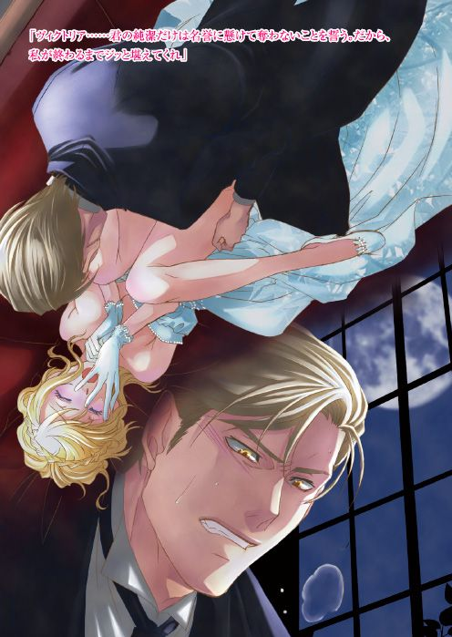
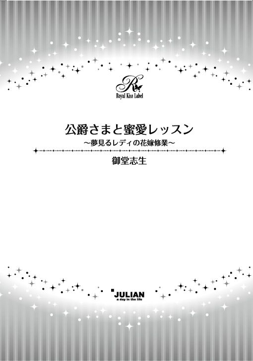
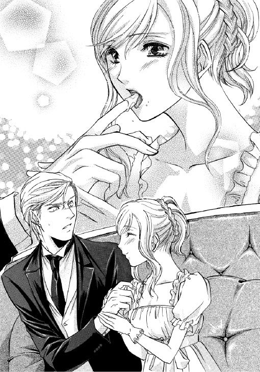

| 公爵さまと蜜愛レッスン【SS付】【イラスト付】 ～夢見るレディの花嫁修業～ (ロイヤルキス文庫) | |
| 御堂志生 | |
| (2009) | |


この物語はフィクションであり、実在の人物・団体・事件等とは、いっさい関係ありません。
イラスト・辰巳 仁
第一章 大人のキスを教えて
春、真っ白なマグノリアの花が綻び始めた季節。アップルトン王国の首都イーデン市では本格的な社交シーズンを迎えていた。
イーデン市のほぼ中央に王宮がある。貴族のタウンハウスはそこからほど近いカドガン地区に集中していた。贅を凝らした屋敷が建ち並ぶ中、際立って瀟洒な佇まいを見せているのが、王国の南部フェアフィールド州クレイ領を治めるクレイ公爵、アッシュベリー家の屋敷だ。
広大な敷地の庭は一分の乱れもなく整えられており、硝子窓から覗くカーテンもすべて同じカーブを描いて左右に分けて留められていた。王国で三番目に古い歴史を持つ公爵家に似つかわしい重みを醸し出している。
だが、一年前に先代公爵が亡くなり、代替わりしたばかりの公爵邸はいまだ喪に服しているかのように静まり返っていた。
そんな公爵邸とは対照的に、この季節にふさわしい華やいだ声が聞こえてくるのは、隣に建つグレアム伯爵邸だった。
「ヴィクトリア様！ まあ、なんというはしたない格好をなさっておいでなのです!?」
仕立て上がったばかりのドレスを身につけているのは、グレアム伯爵の次女、ヴィクトリア・マリー・グレアムだ。
兄のアーサーは下の妹のことを『ゴージャスでお人形のような金髪』と冗談めかして言う。この柔らかくてふわふわの絹糸のようなブロンドは、丁寧に櫛で梳いてもすぐにもつれる。しかも量が多くてどうにも収まりが悪いのだ。
ブロンドの下に見え隠れする肌は見るからになめらかそうで、ミルク色をしていた。唇はお化粧をしていなくても薔薇色だ。極めつけは不純な色が一切混じっていない青い瞳。それは女王の王冠に輝くスターサファイアにそっくりだという。
そんなヴィクトリアは、今年に入ってすぐ十七歳になった。
昨年の夏を過ぎた辺りから体型はめっきり女らしくなり、背の高さも胸の大きさも二歳上の姉、クラリッサを追い抜いている。
ただ、乳母のジャネットに叱られて口を尖らせる仕草は実にあどけなく、少女そのものだ。
「だって、デコルテを大きく開けたデザインが今年の流行なんですってよ」
ヴィクトリアは真珠色のハイウエストドレスの襟を押し広げ、形よく盛り上がった胸の谷間を姿見に映していた。不満を言うなら、胸のすぐ下につけられた大きなリボンが少し子供っぽい。だが、キュッと縛っている分だけ胸の大きさが強調されているのは確かだ。
（これなら、一人前のレディに見てもらえると思うんだけど......）
鏡に映る胸の谷間を見て、ヴィクトリアは嬉しいような恥ずかしいような気分になる。
「いけません！」
四十代になったばかりのジャネットは角の尖った眼鏡を押し上げ、キリキリした声で言う。
「伯爵家のご令嬢ともあろう方が、レディのほうから殿方の気を引くような真似をするべきではありません。今のヴィクトリア様には、慎み深い身なりと行動が何より重要なのですよ。それが多くの殿方から、レディとしての尊敬と愛情を与えられることに繋がるのです」
ジャネットのお説教を聞くフリをしながら、ヴィクトリアはソロソロと後ろに下がった。
扉まではあと三歩くらい。
すると、都合よくジャネットはくるりとヴィクトリアに背を向けた。
「よろしいですか、ヴィクトリア様。グレアム伯爵家は旦那様が二代目と歴史が浅く、賜った領地も大きなものではございません。貿易業で成功を収め、国内で十指に入る資産がおありと伺っておりますが、社交界ではご商売で身を立てた貴族を蔑む傾向にございます。旦那様もそのことをご心配されて......」
ヴィクトリアの耳に届いていたのはそこまでだった。
彼女は扉からこそっと抜け出し、ドレスの裾を掴むと全速力で廊下を走り抜ける。背後から「お待ちください、ヴィクトリア様!?」と叫ぶジャネットの声が聞こえたが、待てと言われて待つくらいなら、逃げ出してなどいない。
そのまま赤いベルベットの絨毯が敷かれたオープン階段を駆け下り、一階まで下りると二階の手すりから見下ろすジャネットに手を振った。
「ごめんなさーい！ 大丈夫よ。お隣まで新しいドレスを見せに行ってくるだけだから！」
そう叫ぶとエントランスホールを駆け抜け、ヴィクトリアは外に飛び出した。
☆ ☆ ☆
お隣の屋敷、それも公爵邸に伺うのだから、玄関から入るのが当然だろう。
だが、ヴィクトリアは裏庭を抜けて公爵邸との境に向かった。そこにはコニファーの生垣がある。そのちょうど真ん中辺りに、彼女が通り抜けることのできる隙間があった。
ヴィクトリアはドレスが引っかからないよう、慎重に抜けながら、公爵邸の敷地に入る。
少し時期が早いのでまだ咲いていないが、綺麗に剪定された薔薇園を横切り、温室の横を通って、裏口の戸を叩いた。
「まあ、やっぱりヴィクトリア様！ 今日はダメですよ。旦那様がおいでなのですから」
裏口から出てきたのは公爵邸の家政婦グロリア・ジェンクスだ。
グロリアは一年前、現当主エドワードがクレイ公爵を継いだときに、フェアフィールド州の領主館クレイ・コートから夫と共に移った。グロリアの夫、セドリック・ジェンクスは公爵邸の家令をしている。
クレイ公爵アッシュベリー家とはタウンハウスも隣同士なら、領地も隣同士。グレアム伯爵家の領地はフェアフィールド州の隅っこにあった。
クレイ・コートから伯爵家のカントリーハウスは非常に近い。エドワードの母親である前公爵夫人に伯爵家の姉妹はとても可愛がられていた。そのため、ヴィクトリアは姉と一緒にしょっちゅうクレイ・コートに出入りしていたのだ。
ちょうどヴィクトリアが出入りし始めた十二年ほど前、グロリアはメイドとしてクレイ・コートに勤めるようになった。そのため、ジェンクス夫妻とは顔なじみで仲がよい。
グロリアは困ったような顔をしつつも、ヴィクトリアを公爵邸に招き入れてくれる。
「やっぱり昨夜遅くに到着した馬車はエドワードだったのね。ああ、よかった！ だって、一年ぶりに会えると思ってイーデンまで来たのに、ちょうどリュクレース王国に行っていないんだもの。三ヶ月以上も待ってたのよ」
「それは仕方ございませんわ。旦那様も新公爵になられて、新しいお役目に慣れようと頑張っておられますから。今回も女王陛下のご命令で、国の代表としてリュクレース王国まで行かれたのですよ」
「それは......もちろんわかってるわ」
グロリアはジャネットよりだいぶ若く三十歳ちょうどだ。ジャネットに比べて頭ごなしにお説教はしない。でも優しく諭される分、なかなか言い返しにくい。
「とにかく、夫に話してまいりますね。それまでの間、少々窮屈かもしれませんが、私の仕事部屋でお待ちくださいませ。お訪ねになられたことを告げて、きちんと付き添いの女性を呼んでから面会されるほうがよろしいでしょう」
「待ってよ、グロリア。昨年まで普通に会ってたのよ。それがどうして、急にそんな面倒くさいことになるの？」
ヴィクトリアの問いにグロリアは大きくため息をついた。
「ヴィクトリア様は十七歳になられて、間もなく社交界にデビューされるのですよ。いくら昔なじみとはいえ、付き添いもなしに男の方とふたりきりになどなってはいけませんわ」
「でも、エドワードは後見人よ」
「社交界にデビューされるための後見人でございます。教父様とは少々お立場が違いますもの」
誰も彼もが『社交界にデビューするのだから』と言う。そのたびに、ダメなことばかり増えていくのだ。
（なんでこんなに面倒なの？ 新しいドレスは嬉しいけど、社交界デビューなんて本当はもっと先に延ばしたい。でも、結婚相手を探さなきゃならないし）
彼女の仕事部屋まで案内してもらう間、口の中でブツブツ文句を言い続ける。
そんなヴィクトリアに、グロリアはしつこいくらい、『表には出ないように』と念を押してセドリックを探しに行った。
ひとりになって、ざっと部屋の中を見回す。
窮屈と言っていたが、さすが公爵家の女性使用人を束ねる家政婦の仕事部屋だ。充分な広さがあり、調度品も一級品で揃えられていた。ただ、相当年季が入っているので、公爵邸で使われていた品のお下がりなのだろう。
そんなことを思いつつ、ヴィクトリアは窓際に置かれたソファに目を留め、腰かけようかどうか迷った。
三人掛けのソファには手作りのキルトがかけられている。キルトを捲って下をこっそり見ると、ソファは絹サテンの布張りだった。高価な品だが、あちこち擦り切れて中綿が飛び出している。脚の部分もおかしいのか、手で触れるとガタガタと揺れた。
（壊れることはないと思うけど......座るのはやめておこうかな）
彼女はそのまま窓辺に立つ。
すると、ちょうど正面のテラス窓にエドワードの姿が見えた。その瞬間、ヴィクトリアの頭から、グロリアにしつこく注意されたことが消し飛んだ。
（あそこは客間じゃなかったはずよ。えっと......書斎か図書室だったと思うんだけど）
どちらにしても公爵が接客に使う場所ではない。ということは、今、エドワードはひとりなのだ。
そう思うと居ても立っても居られない気持ちになる。
ヴィクトリアはソッと扉を開け、廊下に誰もいないことを確認すると、そのまま部屋から抜け出した。
（ちょっとくらい怒られても平気よ。エドワードなら、わたしが「ごめんなさい」って言ったら絶対に許してくれるもの）
エドワード・サイラス・アッシュベリー。現在のクレイ公爵である。
前公爵にはふたりの息子がいた。長男のエドワードと次男のフィリップ。ヴィクトリアよりそれぞれ十歳、六歳年上だ。
生まれながらに次期公爵になることが決まっていたエドワードは非常に厳しく育てられ、彼自身も生真面目な性格をしていた。
曲がったことが嫌いで、何より規律を重んじる。人には厳しいが自分にはもっと厳しい。というのが周囲の人間から見たエドワードの人物評だ。
だが、そんな彼にとって唯一の例外がヴィクトリアだった。
ヴィクトリアが生まれたころから昨年まで、このアップルトン王国は海を隔てた隣国リュクレース王国と長く戦争状態にあった。アップルトンからは遠く離れたデ・アンダ王国のチャベリア半島が戦地だったため、国から出たこともないヴィクトリアに実感はない。だがその戦争のせいで、エドワードの父親である前公爵は首都から離れることができなかったという。
一方で、エドワードの母親はあまり丈夫なほうではなかった。首都の空気はお世辞にも綺麗なものとは言えず、彼女はほとんどの時間をフェアフィールド州のクレイ・コートで過ごした。
エドワード、フィリップ兄弟は、そんな母親が寂しくないよう、子供のころは可能な限り領地で過ごし、大人になってからもまとまった休みには必ず戻ってきていた。
そしてそれは、彼らの母親が亡くなる五年前まで続いた。
五年前の二月、めったに降らない雪がヴィクトリアの足首まで埋もれるほど積もった日の朝、前公爵夫人キャサリンは神に召された。
葬儀はクレイ・コートで行われ、十二歳のヴィクトリアも泣きながら最後の別れを告げたことを覚えている。
当時十八歳のフィリップは目を真っ赤にしていた。だが、戦況悪化で首都から離れることができない父親に代わり、喪主を務めたエドワードは毅然とした表情を崩すことはなかった。
葬儀が終わった翌日、ヴィクトリアは小雪の舞う中、たったひとりでクレイ・コートに向かう。馬車を出して欲しいと頼んだが、危険だし、葬儀の翌日に伺うのは失礼だと止められた。
だが、どうしてもこの日でなければならなかった。
普段なら子供の足でも一時間もあれば到着する。それを、雪の中を五時間近くも歩き、近道をしようと森の中に足を踏み入れた途端、迷子になった。よく知っている場所のはずなのに、見慣れない雪景色に方向を見失う。そのとき、馬に乗ったエドワードが助けに来てくれた。
だが当然、クレイ・コートに着くなり、烈火の如く叱られてしまう。
『ヴィッキー、君は自分がどれほど危険なことをしたかわかっているのか!? 母上だけじゃなく、君の葬式まで出すところだったんだぞ！』
エドワードのアッシュブロンドに、うっすらと白い雪が積もっていた。それは彼がどれほど長い時間、ヴィクトリアを探すために外を走り回ってくれたかがよくわかる。
『自分がしでかしたことの大きさがわからないほど、君は子供ではあるまい。反省しなさい！』
『ごめんなさい。でも......キャサリンおば様と約束していたから』
『たとえどんな約束であれ、母上は君の命を引き換えになど望んでいない』
『わかってるわ。ただ、これだけは言わせて......ハッピーバースデー、エドワード。おば様が、もし体調が悪くて言えなかったら、代わりにエドワードの誕生日を祝ってあげてって言われてたの。だからどうしても、今日中でないとダメだったの。......ごめんなさい』
ヴィクトリアは毛布に包まり、ポロポロと涙を零しながら『ハッピーバースデー』ともう一度口にする。
すると、エドワードは毛布ごとヴィクトリアの身体を抱き締めた。
『ありがとう。可愛いヴィッキー。だが、頼むから、私のバースデーが君の命日になるような真似はやめてくれ。君が無事で本当によかった。それが最高の贈り物だ』
そう言うと、エドワードは少し冷たい唇で、ヴィクトリアの額にキスをしてくれた。
（あのときにエドワードが大好きって気づいたのよねぇ）
五年前のドキドキが甦り、ヴィクトリアは両手で頬を押さえる。
キャサリンは生前、ヴィクトリアとクラリッサの顔を見ては、『ふたりが息子たちのお嫁さんになってくれたらいいのに』と言っていた。それを父や兄の前で話したとき、一笑に付されたことはよく覚えている。『クレイ公爵家とは格が違う』ということらしい。
とくに兄のアーサーはその意識が強いらしく、クレイ・コートに誘ってもめったに同行することはなかった。エドワードと同じ年齢なので仲よくなりそうなものだが、十代のほとんどを寄宿学校で過ごし、領地に戻らなかったことも影響しているようだ。父が『箔をつけるため』と言って入学させた寄宿学校では、身分差に関して徹底的に教え込まれるという話だ。
そのアーサーが外交の補佐役に選ばれデ・アンダ王国に向かったのは二年前のこと。現在も戦後処理に奔走しているらしく、帰国もままならない。
（忙しさは同じでも、エドワードだったら希望も言えるのよね。そういうところに、身分の差が出るのかしら？）
今は多少なりとも理解できる。
だが当時のヴィクトリアは、お城のようなクレイ・コートと伯爵家のカントリーハウスを比べて、大きさの違いくらいしかわからなかった。
（だから、深く考えもせずエドワードに告白して、爆笑されたんだっけ）
嫌な思い出まで甦ってきて、ヴィクトリアは慌てて気持ちを切り替えた。
中庭を横切るとエドワードのいた窓はすぐそこだった。ヴィクトリアはテラス窓に飛びつき一気に開く。
「お帰りなさい、エドワード!!」
ずっと会いたかったのよ、と口にしようとしたとき、信じられない光景が目に飛び込んできた。
そこはヴィクトリアの想像したとおり書斎だった。重厚なマホガニーの机と黒い革張りの椅子が置かれている。どちらも艶々に磨かれた年代物だ。椅子と同じく革張りのソファセットもあった。壁は一面本棚で埋まり、ヴィクトリアから見ればここが図書室でもおかしくないと思うくらい、たくさんの本が並んでいた。
その本棚の前にふたりの人間が立っている。
白いシャツにクラヴァットを結び、黒いジャケットを羽織った男性が、朱色のドレスを着た女性と抱き合っているように見えた。
男性は背が高く濃灰色の髪をしていて、すぐにエドワードだとわかった。
「きゃ！ あなたは誰です？ いったい、どこから入ってきたの!?」
女性は一瞬、可愛らしい悲鳴を上げたが、すぐにキッと目を吊り上げヴィクトリアを睨んだ。世間一般では美人と呼ばれる部類の女性だろう。だが、その女性の正体を知り、ヴィクトリアは吐き気がした。
すぐに回れ右をして出ていこうかと思ったが、せめてひと言でも言い返してやりたい。そんな思いが湧き上がり、ヴィクトリアは両足に力を入れてその場にとどまる。
「あなたがわたしのことを知らなくても、わたしのほうは知ってるわ。義理の親子で抱き合うなんて、神様が見たらどう思うかしら？」
「ま......なんですって！」
「だって事実じゃない。公爵未亡人のレディ・ルイーズ」
一年前に亡くなった前公爵の後妻、ルイーズ。
前公爵は妻のキャサリンが亡くなってわずか半年で、長男と四歳しか変わらないルイーズと再婚した。彼女はまだ三十一歳という若さだ。
父親がこのルイーズと再婚したとき、エドワードは冷静な彼からは想像できないほど激昂した。父親に対する尊敬の言葉を取り消した上、ルイーズを毛嫌いして軍に入隊。公爵家の継嗣であるにもかかわらず、彼は戦地に赴いた。
（それがどうして......こんなとこで抱き合ってるのよっ！）
もっと嫌味を言ってやろうかと思ったとき、エドワードが口を開いた。
「レディ・ルイーズは私の帰国を喜んでくださり、そして今は、さよならの挨拶をしていただけだ。何より、うら若きレディが口にすべき内容ではない」
エドワードは喜びも驚きも見せずに、淡々とルイーズに紹介を始める。
「グレアム伯爵家のお嬢さんで、レディ・ヴィクトリアです」
「ああ、あのご商売で財産を増やされたというお隣の......」
そう言うとルイーズはクスッと笑った。
「たしか、エドワードの〝可愛いおちびちゃん〟だったかしら？ でも、無断で公爵邸に入り込むなんて非常識にもほどがあるわ！ しかも、あたくしたちの関係を邪推して......」
「では、邪推されないよう、ここへはお越しにならないでください。それから、レディ・ヴィクトリアは我が家に出入り自由としています。ここはもうあなたの屋敷ではない。お引き取りを」
ヴィクトリアに、さらに噛みつこうとしたルイーズを、エドワードは辛辣な口調で制した。そして家令のセドリックを呼び、ルイーズを玄関の外まで送らせたのだった。
☆ ☆ ☆
「さて、ヴィッキー。これはどういうことか、説明してもらおうか？」
エドワードは机の端に腰かけ、狼の目と呼ばれる琥珀色の瞳を向ける。いつもはもう少し柔らかい顔を見せてくれて、『ただいま』と言いながら髪や額にキスしてくれるのだが、今はその気配もない。険しいまなざしのまま腕組みする姿は、ヴィクトリアに近づくなと言わんばかりだ。
「ごめんなさい。わたし......ただ、エドワードに新しいドレスを見せたかったの。昨夜、あなたの馬車が帰ってきたみたいだったから......」
彼の前に立ち、上目遣いにチラチラと見上げる。ヴィクトリアが落ち込んだ素振りを見せると、エドワードは呆れた顔をしながらも許してくれるのだ。
ところが、今回はそう簡単にはいかなかった。
「私が聞いているのはそういうことではない」
声色から厳しさが消えない。
「ヴィッキー、君は人の家を訪ねるときの礼儀作法も知らないのか？ まったく。十七にもなって、社交界に......」
「社交界にデビューする年齢になりながら......なんて、もう耳にタコができるくらい聞いたわ！」
しおらしいフリはやめて、ヴィクトリアもエドワードと同じように胸の下で腕を組む。
「何よ。礼儀作法って言うなら、さっきのは何？ ここは客間じゃなくて、あなたの書斎でしょう？ そこでふたりきり、なんて。ルイーズだって全然礼儀に適ってないじゃない！」
継母といっても扱いは未亡人。国教会に認められるかどうか微妙だが、新公爵の権威をもってすれば、再婚も可能かもしれない。
そう思うと余計に腹立たしい。
刺々しくなったヴィクトリアの口調に、エドワードは大きくため息をついた。
「だからなんだ？」
「だって、どう見ても抱き合ってたじゃない。さよならの挨拶なんて、そんなことでごまかされるような子供じゃないんだからっ！」
ヴィクトリアが叫んだ瞬間、エドワードが動いた。
前に壁ができた、と思った直後、ヴィクトリアは彼の腕の中だった。
（え？ え？ え？ どうなってるの？）
呆然としていると、エドワードの唇が右のこめかみに押し当てられる。その唇は想像より温かくて、ヴィクトリアの不満を一瞬で溶かしてしまう。
「ただいま、ヴィッキー。さあ、私にもお帰りのキスをしてくれないか？」
唐突に境界線を消し去られ、しかも、めったに笑わない彼の極上の笑顔を目にして、ヴィクトリアは頭の中が真っ白になった。それも生クリームみたいな甘くてフワフワした白さで埋め尽くされていく。
そして、あらためてエドワードの顔をみつめる。
一年前に比べたら、少し髪が伸びた感じだ。エドワードはいつも、自分の髪の色は嫌いだと言っていた。はっきりした銀髪ではなく、彼の弟、フィリップのような白金髪とも違う。くすんだアッシュブロンドはダーティブロンドとも呼ばれて、縁起が悪いと言われることもある。
だがヴィクトリアにすれば大好きな色だ。重みのある深い灰色はエドワードにピッタリだと思う。

その髪に少し触れ、彼の頬にチュッと口づける。
「お、お帰りなさい、エドワード」
そう言って彼の目を覗き込んだ瞬間、ドキリとした。
「わかったかい。抱き合うというなら、せめてこの程度の親密さは必要だ。もちろんこれは、親愛に基づく抱擁だがね。さっきはルイーズが抱きついてきただけだ。私はあの女に指一本触れていない。その差がわからないなら、君はまだまだ子供だな」
エドワードの瞳には険しい色が浮かんだままだった。
そのことを教えるためだけに、優しく笑ったのだ。ヴィクトリアは馬鹿にされたことを知り、思い切り彼の胸を押しのける。
「こっ、こんなの、卑怯よ！」
「これは教育的指導で卑怯なことではない。それからヴィッキー、君のような子供にそのドレスは似合わないな。胸元を強調しない、慎ましいドレスに変えてもらいなさい。素材のモスリンも身体のラインが透けて見えて不適切だ。絹のほうがいいだろう」
真上からヴィクトリアの胸の谷間を見下ろしつつ、エドワードは眉を顰めて言う。
これにはかなりショックだった。十歳も年上の彼を誘惑しようなんて、とっくの昔に諦めている。でもせめて、『大人っぽくなった』『一人前のレディに見えるよ』そんな賛辞を期待していたのだ。
「透けて見えるモスリンのドレスが流行だって、仕立屋さんが言ってたわ。お姉様なんて、もっと胸を強調したデザインなんだから！ わたしだって......」
「クラリッサは社交界にデビューして丸二年だ。それに、彼女はもともと慎重な性格だし、ここまで大きな問題は起こしていない」
「わたしも問題なんて起こしてないじゃない！」
「いや、起こしただろう。君の発言がきっかけで、ふたりの少年が縛り首になるところだったと聞いたぞ」
エドワードの言葉にヴィクトリアは目を逸らした。
事件が起こったのは昨年のクリスマスのこと。
ヴィクトリアは今まで、グレアム伯爵領内にある村の子供たちと仲よく過ごしてきた。とくにイーデン市のような都会に出たいとは思わなかったし、野山を駆け巡り、楽しく暮らせればいいという考えだった。
父親のグレアム伯爵にしても、継嗣であるアーサーの花嫁探しが最優先。しかし、そのアーサーは帰国もままならない。そのため、長女クラリッサを社交界にデビューさせ、二、三年以内には嫁ぎ先をみつけよう、といった程度。末娘のヴィクトリアは、父親にとっていつまでも可愛い子供だった。
父と娘の思惑は微妙にずれていたものの、目的は〝現状維持〟で一致していた。
ところが、お転婆な少女は十六歳の一年間で、さなぎが蝶になるかのような変化を遂げる。
平べったい胸があっという間に膨らみ、ウエストがキュッと引き締まって、腰から臀部にかけてはふっくらと丸みを帯びてきた。そして幼かった顎のラインがすっきりして、足首や手首はほっそりとしなやかになる。
周囲を取り巻く少年たちの、ヴィクトリアを見る目が変わっても責められないだろう。
だが、そうはいっても所詮身分違い。ところが、そんな彼らにヴィクトリアは言った。
『わたしは身分なんて気にしないわ。爵位も財産もいらない。心から愛する人と添い遂げたいの。愛する人が攫ってくれるなら、わたし、何もかも捨ててついて行くわ』
このとき、ヴィクトリアの頭にあったのはエドワードのことだ。
ずっと憧れ続けてきた男性。雪の中で助けてくれたとき、彼女は幼いながらも恋を自覚した。
その半年後、彼の父親が若い女性と再婚。それが後継者を得るための再婚でないのは明らかだ。厳格な父親の好色さを知り、エドワードは酷く落ち込んでしまう。そんな彼を慰めたくて、ヴィクトリアは勇気を出して言ったのだ。
『大好きよ、エドワード。わたしがあなたのお嫁さんになって、ずっと一緒にいてあげる』
そして彼がしてくれたように、思いを込めてエドワードの額にキスをした。
『ありがとう、おちびちゃん。君がレディになって、そのとき私が独身だったら、もう一度聞きたい言葉だ』
『今だってレディだわ！ わたしは本気よ！』
すると、エドワードは大爆笑して『君のおかげで元気が出たよ』と言い、翌朝、海軍将校として従軍したのだった。
エドワードは十二歳のヴィクトリアの言葉など、全く信じていなかった。そもそも、まるっきり恋愛対象外。身分以前の問題で、花嫁候補にすら入れてもらえない。
そのあとも年に一度は母親の墓参に帰ってきたが、ヴィクトリアの告白など、何も聞かなかったかのように振る舞っていた。いや、おそらくすでに忘れていたのだと思う。あるいは、最初から気にも留めていなかったか。
十六歳のヴィクトリアの少年たちに向けた本意は、『エドワードが攫ってくれたらいいのに』。そんな思いで口にした言葉だった。
ところが、同じ年頃の少年たちは別の意味で取ってしまう。
ヴィクトリアは自分たちの誰かに恋しているのではないか？ 身分など関係なく、本当に攫って欲しいと言っているのではないか、と。
そのうちふたりの少年はヴィクトリアの言葉を忠実に実行した。彼女を言いくるめて馬車に乗せ、そのまま村を出奔。
『他の連中は腰抜けだ。でも僕らは、ヴィクトリア様のためなら命を懸ける。僕らのどっちが選ばれても、恨みっこなしの約束をしてるんです。さあ、選んでください！』
だが村を出て半日後、伯爵の命令であとを追ってきた自警団にふたりは逮捕される。彼らは危うく伯爵令嬢を誘拐した罪で縛り首になるところだった。
「以前から、いつまでも気軽に出歩いてはダメだ、と言われていたんじゃないのか？ 付き添いも伴わずに少年たちと会うなど、不注意にもほどがある」
同様の説教を、父からもこんこんとされた。
少年たちはヴィクトリアに一切の危害は加えなかった。そして、憧れのレディの願いを叶えたかっただけ、という主張が通り、なんと事件そのものがなかったことになる。
それは、事件をおおやけにしたくない、という伯爵の要望が聞き入れられた結果だった。
たしかに、自分にも迂闊さはあったと反省している。だがしつこく言われると、反発したくなるのがヴィクトリアの性分だ。
「あなたが......そんなに身分を気にするとは思わなかったわ」
「そういう問題じゃない。少年といっても男だ。君がいかにお子様でも女性には違いない。男を賢者にするのも、愚者にするのも、女性にかかっている」
あのふたりの少年は、『ヴィクトリアを攫って逃げることで愛と勇気を証明したかった』と言ったらしい。だが彼女にすれば、子供のころと同じように挨拶をし、会話をしただけだった。
（迂闊かもしれないけど......急に向こうの見る目が変わって、あんな勘違いをするなんて、わたしに予想できるわけないじゃない）
父は、噂が広まるだけでヴィクトリアの評判に傷がつくと言い、一刻も早く結婚相手を探そうと社交界デビューを手配したのだった。
「お子様って言うのはやめて！ わたしが一人前の女性だから、彼らはあんなことをしたんじゃないの」
「彼らが欲しかったのは君の身体だけだ」
「違うわよ！ 愛していたからだわ」
「その愛と言う名目で連れ去り、君を疵物にしようとした。いや、攫われた時点で君の名前は傷ついたも同然だ。事件そのものを揉み消してくれたお父上に感謝するんだな」
この〝疵物〟という意味もよくわからない。
事件以降、何度か耳にしたがどうも人によって言うことが違うのだ。このエドワードの言葉だけなら、攫われただけで〝疵物〟ということになる。
ジャネットに確かめたところ、少年たちにドレスを脱がされなかったか、身体に触られなかったか、と逆に聞き返されるだけで、余計にわからなくなった。
（かすり傷ひとつしてないのに、なんで〝疵物〟なのよ。もう、わけがわからない）
ぷいと横を向いたヴィクトリアに、エドワードは尚も言い募る。
「よく聞きなさい、ヴィッキー。本物の男は、決して愛する女性を傷つけない。不用意に攫ったりせず、まず、女性の父親に結婚の許可を求めるものだ。そして清らかなまま、祭壇の前まで連れていこうとする」
エドワードとは〝十歳しか〟違わない。でも、こうして説教をするときの彼は〝十歳も〟年上の男性で、父と変わらない年代に思えてくる。
そんなことを考えていると、ヴィクトリアはあくびが出そうになった。慌てて口を引き結びごまかそうとするが、無理だったらしい。
「私の話は退屈らしいな」
「そ、そんなことはないわ。ないけど......本物の愛情の見分け方はともかく、噂に聞く社交界って、もっと刺激的みたいだから」
社交界に慣れたクラリッサは、デビューを控えたヴィクトリアにいろいろ教えてくれるのだ。
どこそこの女伯爵を取り合ってふたりの紳士が決闘した、とか。高齢のマーガレット女王に代わり、権力を握り始めた摂政皇太子は夜会好きで、彼に取り入るためパーティの数が増えそう、とか。
そんな話だけ聞くと、とてもエドワードが語るような〝本物の男〟が社交界にいるとは思えない。
「だって、紳士たちの間で流行ってるのが......人妻とアバンチュールを楽しむこと、なんでしょう？ エドワードも楽しんでるの？」
そう口にした途端、エドワードが目を剥いて怒った。
「馬鹿者！ 若い娘がなんということを口にするんだ!? まったく。クラリッサにも、一度きちんと話をしておかなければいけないな」
そのとき、開いたままの扉をきちんとノックして、グロリアが入ってきた。手には紅茶を載せたトレイを持っている。
象嵌のテーブルの上にティーカップが二客置かれた。小さな青い小花が描かれたカップの中に、エドワードの瞳の色を思わせる紅茶が注がれていく。
セッティングを終え、横に立つグロリアにエドワードが声をかけた。
「君たちがグレアム姉妹と仲がいいことは知っている。フィリップが彼女たちに甘いことも。だがここは長閑なクレイ・コートではないし、ふたりとも社交界に出入りする年頃だ。いつまでも甘やかすのは、彼女たちのためにならない。私の言っていることはわかるね」
「はい。申し訳ございません」
顔面蒼白になり、深々と頭を下げるグロリアを見て、ヴィクトリアは急いで言う。
「待って！ グロリアのせいじゃないわ。彼女から、ちゃんと作法を守るようにって言われたのに、わたしが勝手にこの部屋に飛び込んだのよ。だから他の人を叱らないで！」
「ならば、これ以上とんでもない真似はしないことだ。いいね、〝おちびちゃん〟」
一人前のレディになれ、と言うくせに、彼の態度はいつまでもヴィクトリアを子供扱いしている。
そのことにムッとして、思わず言ってしまった。
「ええ、そうね。あなたに迷惑をかけるのも、この先はそんなにないと思うわ。だってお父様が、この社交シーズンでわたしの結婚相手を決めるっておっしゃってたもの。わたしにも、そのつもりで相手を選べって」
すると、エドワードの顔にあからさまな動揺が浮かんだ。
彼はどうやらヴィクトリアを田舎から引き離し、早々にレディの教育を始めるだけ、と思っていたようだ。
「まさか......クラリッサのほうが先だろう？」
そう呟いたきり、絶句している。
「誘拐されそうになったことが広まる前に、相手を決めないとダメなんですって。エドワードだって言ったじゃない。わたしはもう〝疵物〟と同じなんでしょう？」
ヴィクトリアは嫌味のように区切りながら言った。
すると、エドワードはソファに腰かけ、何ごとか考え込んでいる様子でティーカップを口に運ぶ。
「ねえ、ホークスビー子爵って知ってる？」
「え？ ああ、ジョナサン・ホークスビーか。カーライル侯爵の長男だったな。奴がどうした？」
ハッとした様子で答えるエドワードに向かって、ヴィクトリアは思いつくままを口にする。
「子爵様ってとっても洗練された紳士だって噂よ。わたし、子爵様に身体を捧げようと思ってるの！」
その瞬間、エドワードは熱い紅茶を一気に飲み込んだらしく、むせ返った。彼はゲホゲホと咳き込みながら、顔を真っ赤にしている。
「ヴィッキー......いや......ヴィクトリア。君は、自分の言っている意味がわかっているのか？」
「もちろんよ！ 夫婦になるってことでしょう？ どうせ結婚するなら、ハンサムで洗練された男性がいいもの」
半分は本気だった。でも半分は......エドワードに止めて欲しい。そんな乙女心だ。
諦めたつもりでいる。妹同然の〝可愛いヴィッキー〟でかまわないと思っている。それでも、小さな期待を持ってしまうことはやめられない。
きっと彼なら『馬鹿な考えはやめなさい』と怒鳴ってくれるはず、そう信じていた。
ところが、一拍おいてエドワードは笑い始めたのだ。
「いいだろう。君がそのつもりなら、ホークスビー子爵には私から話をしておいてやろう。ただし、ドレスの襟は鎖骨がどうにか見える程度のデザインに変更すること。わかったね」
思いがけない返事に、ヴィクトリアは引き攣った笑顔で「わかったわ」と返していた。
☆ ☆ ☆
イーデン市郊外、ダヴェンポート公爵邸の夜会にヴィクトリアは姉と一緒に招待された。
ダヴェンポート公爵はエドワードの亡くなった父親と同じ年代だ。だが代々外交的任務を割り当てられるクレイ公爵と違い、ダヴェンポート公爵は軍の要職に就いていた。そのせいか、現在のダヴェンポート公爵はとくに規律にやかましく、堅苦しい人物だという。
それもクラリッサが聞いてきた噂では、エドワード以上らしい。
当のエドワードに言わせれば、『浮ついた貴族が多い中、私が最も信用できる人物』という話だ。
そのダヴェンポート公爵邸の夜会がヴィクトリアのデビューになることが、偶然であるはずもない。
「さすがエドワードね。お父様は来週の皇太子殿下主催の夜会でデビューさせるつもりだったんでしょう？ でもここだけの話、皇太子殿下が主催される夜会はデビューには向かないのよねぇ」
クラリッサは綺麗に整えられた眉をちょっと顰めて、ヴィクトリアに話しかけた。
姉は襟ぐりの大きく開いた真紅のハイウエストドレスを着ている。それは、ひとつ間違えれば娼婦のような印象を与えかねないデザイン。しかし姉は、そのドレスを上品かつ華やかに着こなしていた。
栗色の長い髪をアップにして、髪を留めるリボンも真紅。ネックレスは金剛石で、見る角度によって色の変わるヘーゼルの瞳によく似合う。
（本当はお姉様みたいなドレスが着たかったのに......わたしだって、ちゃんと着こなせると思うわ）
初めて夜会に出るレディは白を基調としたドレスを着る決まりだ。
ヴィクトリアもそれに倣い、白いドレスを着ていた。雪のように真っ白で、ところどころ縫い込まれた銀糸がシャンデリアの光に煌めいて見える。二週間前、エドワードに見せたドレスとは違う、絹タフタのドレスだった。
『本物のレディは流行だけに左右されてはいけない。王族の女性も盛装は絹と決められている。社交界デビューは正式な装いをすべきだ』
などと言い、エドワードが贈ってくれた。
せっかく父が用意してくれたのに、と思ったが、その父は逆に『さすがクレイ公爵だ』と喜んでいるのだから、ヴィクトリアも反対しようがない。
姉のドレス姿にため息をつきながら、彼女は疑問に思ったことを口にした。
「どうしてデビューに向かないの？」
「恋の駆け引きが盛んなのよ。酔って相手にしてはいけないレディを部屋に連れ込んだ。なんて話を聞いたことがあるわ」
なんでもないことのようにクラリッサは言う。
でも、ヴィクトリアにはドキドキする内容だ。
「つ、連れ込んで......どうするの？」
「もうヴィクトリアったら、そんなこと決まってるじゃない」
さすがのクラリッサもうっすらと頬を染めた。
「身体を奪われてしまうのよ。そうなったら、相手は誰であれ、その男性と結婚するしかなくなるわ」
「それはそうだけど。でも、愛してなかったらどうなるの？」
「どうもならないわ。嫌だって言ったら、一生独身でいるか修道院に入るしかなくなるんだもの。それに、もし子供ができていたら、死んだって嫌なんて言えないわ」
それくらいはヴィクトリアにもわかる。
未婚の母から生まれた子供は私生児と呼ばれ、教会で神の祝福をいただけないのだ。貴族社会ではあり得ないことで、ヴィクトリアの知り合いにはひとりもいない。
「なんだか......結婚相手を探すのって大変そう」
デビュー早々ため息をつくヴィクトリアを見て、クラリッサは笑った。
「お父様はいろいろおっしゃってたけど、気にしないで楽しめばいいのよ。なんたって、わたしたちの後見人は天下のクレイ公爵なんですもの。まあ、よほど迂闊な行動を取らない限り、不埒な真似をしてくる男性はいないわ。むしろ逆にちやほやしてくれるから、慣れると楽しいわよ」
そうなのだ。社交界におけるふたりの後見人はクレイ公爵、エドワードになっている。
我が家が爵位を賜ってわずか十五年。ヴィクトリアが生まれたとき、グレアム家はまだ平民だった。
一介の貿易商の跡取り、という気楽な身分だった父が、伯爵家の継嗣となったのが三十代半ば。言葉遣いひとつを取っても、かなり苦労したという。上っ面だけの社交界での付き合いなど、不慣れな上に好きではなかったらしい。
だが、息子はともかく、娘がいる場合は〝不慣れ〟では済まされない。
姉のクラリッサがデビューするとき、金に糸目をつけないほど完璧に支度を整えた。だが、豪華に装えば装うほど、社交界では除け者にされてしまい......。
困り果てた父に、グレアム姉妹の社交界における後見人になることを名乗り出てくれたのが、当時海軍にいたエドワードだった。次期公爵が後見についたことで、クラリッサを蔑ろにする人間は飛躍的に減ったという。
今回もそのおかげで、ダヴェンポート公爵のような格式の高い貴族が主催する夜会に呼んでもらえた。本当なら、商売で身を立てた二代目伯爵の娘など呼んでもらえるわけがない。
来週行われるという皇太子主催の夜会のほうが、格式は高く思えるが、実情は違った。
皇太子は身分にこだわらない人物だ。そこだけ取れば聞こえはいいが、気に入った女性であれば王立劇場のオペラ歌手から、大道芸人まで招こうとする。しかも、皇太子は傍らにいつも複数の高級娼婦をはべらせていた。
皇太子と同類の自称紳士たちは、そういった女性との情事を積極的に楽しんだ。
貴婦人たちは眉を顰めているのかと思えばそうでもない。女性に人気のテノール歌手や芸術家も同時に招くので、夜会では慎みを忘れたように黄色い声を上げて騒いでいるという。
クラリッサは、一度行って懲りたので、皇太子主催の夜会は信頼できる男性のエスコートなしでは行かないことにしている、と話した。
（わたしも身分は気にしないけど......ちょっと怖いかも）
ヴィクトリアはいずれも名のある貴族たちばかりが招かれた大広間を見回し、ため息をつく。
このダヴェンポート公爵邸の規模はクレイ公爵邸以上だ。王宮近くと郊外では、いささか条件が違うのかもしれないが、それでもかなり広大と言える屋敷だろう。
これだけの屋敷を煌々と照らす外の灯りは、最新の瓦斯灯を導入しているという。
屋敷の様子だけ見ると、ダヴェンポート公爵は規律を重んじるものの、最新の技術を取り入れることに抵抗はない人物のようだった。
（それってエドワードのほうが石頭ってことじゃない？）
クレイ公爵邸の灯りは、いまだに蝋燭とオイルランプである。
ヴィクトリアがそんなことを考えていると、スッとジャネットが近寄ってきた。
「クラリッサ様、ヴィクトリア様──クレイ公爵閣下、ならびにアッシュベリー少将閣下がご到着されました」
今日のジャネットは付き添い人として同行している。
「後見人様のご登場ね。ご婦人方が騒がしくなりそう」
直後、大広間の入り口がざわめいた。ヴィクトリアもクラリッサと同じ方向を見る。すると、両開きの扉が開けられ、エドワードが入ってくるところだった。
思えば公式の場でエドワードと顔を合わせるのは初めてかもしれない。
デビュー前のヴィクトリアがおおやけの席につくはずがないので当然と言えば当然だ。普段着の彼はシャツとブリーチズの軽装だが、今夜は黒のテールコートを着ていた。
ジャケットを着た姿なら見たことがある。だが、カッチリしたテールコートは肩幅の広いエドワードをより凛々しく見せていた。ウェストコートとクラヴァットはシルバーで、少し長く感じた髪は整髪料で軽く押さえつけ、サイドに流している。
脚のラインに沿って仕立てられたズボンは流行のスマートと呼ばれるタイプだろう。エドワードの逞しい太ももの筋肉を浮かび上がらせていた。
（あーもう、悔しいけどカッコいい。何人かに紹介されたけど、エドワードに比べたらジャガイモにしか見えない！）
すでにクラリッサの取り巻きという数人と挨拶だけ交わした。あとでダンスを踊ってくださいと言われたが、どうしようか悩んでいる。急遽デビューと言われてイーデン市に連れてこられたせいで、ダンスはまだまだ自信がないのだ。
「やあ、遅くなってすまない。エスコートが遅刻では、恥をかかせてしまったな」
片手を上げながらエドワードが近づいてくる。
「ええそうね。ヴィクトリアのデビューに遅刻なんて、エドワードらしくないわ。でも......」
エドワードに笑顔で答えたあと、クラリッサは冷ややかな視線をフィリップに向けた。
「どうせ、遅刻の原因はフィリップなんでしょうけど」
そこにはエドワードと同じくらい長身の青年が立っていた。フィリップ・オーデン・アッシュベリー少将というのが彼のフルネームだ。
フィリップは貴族の中でもエリート集団と言われる騎兵隊にいる。王族と王宮を守り、首都防衛の要といわれる優秀な一団だ。
エドワードとよく似た琥珀色の瞳だが、顔の造作が柔らかく女性的なせいか厳しさは感じられない。むしろ穏やかで温かみのある印象を受ける。肩の長さに切り揃えられたプラチナブロンドは、フィリップの中性的な魅力を一層引き立たせていた。
彼はどうやら王宮から直行したらしく、濃紺の軍服姿のままだった。
「相変わらず手厳しいなクラリッサは。ヴィクトリア、記念すべき社交界デビューおめでとう。ドレスもよく似合ってるよ」
「ありがとう！ フィリップの軍服姿って初めて見たわ。すっごくカッコいい！」
「それはそれは、嬉しいことを言ってくれるね。じゃあ、兄上の次に僕とも踊ってくれるかい？」
ヴィクトリアはちらっとエドワードを見てから、フィリップに笑顔を見せた。
「ええ、もちろんよ。なんだったら、エドワードの代わりにわたしと踊ってくれても......」
「ダメだ」
突如、エドワードの不機嫌な声が割り込んできた。
「最初のダンスは後見人である私と踊るのが決まりだ。そして私が許可を与えた者以外と踊ることはできない。私のエスコートなしでは夜会にも出席できないよう手配したから、出し抜こうとしても無駄だぞ」
イーデン市の社交界に出入りするすべての人間に『グレアム伯爵令嬢ヴィクトリアの後見人はクレイ公爵である』という認識を徹底させるため、らしい。
だが、これではまるで、エドワードの飼い犬になったみたいだ。鎖で繋がれ、『公爵の許可なしに触らないこと』という札を首から下げているようなものではないか。
「どうして？ 後見人の話は聞いてたけど、こんなに縛られるなんて聞かなかったわ。第一、お姉様のときはこんな厳しくなかったっていうじゃない」
ヴィクトリアが一歩踏み出して訴えるように言うと、エドワードは一歩下がった。
「クラリッサはレディとしての心構えができていた。だが君は......流行のドレスを着て、多少育った胸元を見せたら、立派な結婚相手がみつかると思っている〝おちびちゃん〟だからね。私も全力で後見人の役目を果たさせてもらう」
あくまで後見人としての責任。そのためにヴィクトリアから離れないと宣言した。
（誰のせいで......十七になったばかりで、結婚相手を即行で探そうと思ってるのよ。なんにもわかってないんだから！）
父はたしかに口うるさい。それでも、最終的には末っ子に甘い父だ。
ヴィクトリアが生まれたときに母が亡くなった。そのため彼女は一度も母の腕に抱かれたことがない。そんな娘を不憫に思っているようで、ヴィクトリアが『絶対にイヤ』と言えば無理なことは言わない。
それを承知で、ヴィクトリアは早めに社交界にデビューして結婚相手をみつけることに同意したのだ。
急がなければ、爵位を継いだエドワードが先に結婚してしまう。そうなればこの先、ヴィクトリアが領地のカントリーハウスに籠もっていても、ご近所のクレイ公爵夫妻に会わないで済むはずがなかった。
それを避けてイーデン市に出てきても、彼らが戻ってくれば、逆に距離が縮まってしまうのだ。
理由は他にもある。彼が結婚しても、後見人という立場は変わらない。当然、彼の妻はヴィクトリアの世話人という立場になるだろう。
社交界で彼の妻の世話になるなんて、いっそ修道院に入ったほうがマシというもの。
なんとしてもエドワードに匹敵する素敵な男性をみつけて、彼より先に結婚するのだ。自分が幸せになれば、きっとエドワードが結婚しても胸は痛まないはず......。
ヴィクトリアはそう信じていた。
「お姉様、喉が渇いたから、少し休憩してきていいかしら？」
エドワードには何も答えず、ヴィクトリアは姉に話しかける。
「ああ、それなら大広間の奥に客間がある。飲み物を提供しているはずだ。私が一緒に行こう」
そう言って紳士らしい動作でエドワードが手を差し出した。
その手を素直に掴めば、きっとレディらしくなったと褒めてもらえるのかもしれない。でも、ヴィクトリアは無視した。
「女性専用の休憩室があるって聞いたわ。そこで休んできます」
言うなり身を翻した。
背後から、エドワードがジャネットについて行くよう命じる声が聞こえたが、彼女は振り向かずに小走りで人混みをすり抜けた。
☆ ☆ ☆
到着してすぐに案内してもらった女性用休憩室は、一階の階段奥にあった。
そのはずなのに、どれだけ探してもみつからない。大広間を出てしばらくの間、腹立ち紛れに動き回ったせいなのはわかっている。
全部エドワードのせい、と言いたいところだが、どう言い訳をしても自分の責任だった。
（社交界デビューの夜に、訪れたお屋敷で迷子になった、なんてことになったら......。エドワードだけじゃない。お父様やお姉様にも恥をかかせてしまうわ）
ヴィクトリアは女性用休憩室を探すことを諦め、大広間に戻ろうとした。そのとき、テラス窓越しに書物でしか見たことのない神殿が目に映った。
月明かりに照らし出された古代異国風の建物。素晴らしく幻想的で、思わずテラス窓から庭に出てしまう。
（あれは本物？ どうしてこんなところに？ ああ、気になるわ。......別に、外に行くわけじゃないんだし、ほんの少し、裏庭を散策するだけだから......平気よね？）
心の中で呟くと、ヴィクトリアは建物に向かって歩き始めていた。
芝の敷き詰められた美しい庭園。その向こうに強い光が見えるので、母屋の方角を見失うことはないだろう。ヴィクトリアはつる薔薇の垣根に挟まれた小道を通り抜け、視界が開けた瞬間、そこに古代の神殿を模した大きな建物をみつけた。
大きな八本の柱に支えられた石造りの神殿は、石段を五段上ったところに建てられている。天井部分はドームになっていて、ヴィクトリアが真上を向いて見上げるくらい高い。
驚いたのはそれだけではなく、なんとドームの真下に噴水があった。
「きゃー！ 素敵、ロマンティック！」
ヴィクトリアは思わず、声を上げてしまう。
屈んで手を浸すとひんやりしていて気持ちがいい。
「つめたーい！ フェアフィールドに流れる小川の水みたい！」
子供のようなはしゃぎ声を上げてしまい、ちょっとはしたなかったかな、と思った直後、後ろから声をかけられた。
「君って普通のレディと違って、ずいぶん変わってるんだね」
聞き覚えのない男性の声に、ヴィクトリアは慌てて立ち上がる。
振り返ったところに立っていたのは、やはり、見たこともない青年だった。
「あ、あの......」
「君だろう？ レディ・ヴィクトリア・マリー・グレアム。グレアム伯爵家の末娘で、今夜がデビューのお嬢さん」
ダヴェンポート公爵邸に着いてから紹介された男性は片手で足りる。さすがのヴィクトリアもそれくらいの数なら忘れたりはしない。
「ああ、失礼。俺の名前はジョナサン・ホークスビー。カーライル侯爵の息子、と言ったほうがわかりやすいかな？ 本当なら仲介抜きで声をかけるのはマズイんだけどね......君があまりに無防備だったんで、ついつい追いかけてしまったよ」
屈託のない笑顔を見た瞬間、彼が噂のホークスビー子爵なのだ、と気がついた。
たしかに、なかなかの美男子だ。この国では珍しい黒髪と黒い瞳が、彼を神秘的に見せていた。
ヴィクトリアが黙っていると、ホークスビー子爵のほうが階段を上がってくる。
「レディ・ヴィクトリア、君に社交界の挨拶をさせてもらってもいいかな？」
「な、何をするの？」
子爵は右手袋を外し、掌を上に向けてこちらに差し出した。
ごく自然に、ヴィクトリアは彼の右手の上に、自分の右手を置く。すると、手の甲に軽く唇が触れた。
（もう、脅かさないでよ。何か特別なことをするのかと思ったじゃない。でも、これが洗練されてるっていうんだ。まあ、ちょっとはドキドキしたかも）
流れるような一連の動作に、ヴィクトリアはホッと息を吐く。
ところが、どうしたことか彼は掴んだ手をなかなか放してくれない。
「噂どおりの可憐なレディだ。君の姉上、レディ・クラリッサも美しいが、俺は君のほうが好みかな」
そんなことを言いながら、子爵は身体を寄せてくる。
真後ろが噴水なので、ヴィクトリアは一歩も下がれない。手を掴まれたままでは横に逃げ出すわけにもいかず、まさに身動きが取れない状態だ。
嫌な感じに背筋がゾクッとして、ヴィクトリアは手を振りほどこうとした。
「あ、あの......子爵様、もう少し離れたほうがいいと思います。それと、手を、放してください」
ホークスビー子爵と結婚したら将来は侯爵夫人になれる。階級的にも今より上だし、ハンサムで有名な子爵ならきっとひと目で好きになれるはず、と思ったのが大きな間違いだった。
彼はヴィクトリアの耳の傍に唇を寄せた。
「クレイ公爵に釘を刺されたよ。ダンスに誘うことも認めない。君に必要なのは誠実な結婚相手であって、恋の手ほどきをする男ではない......ってさ」
エドワードの名前が出たことにビクッとして顔を上げる。
すると、目の前に子爵の顔があった。
（ハ、ハンサムだと思ったけど......近くで見たら、そうでもないかも。もう、やだぁーっ）
少しでも顔を離そうと、ふたたびうつむこうとしたとき、子爵は指先でヴィクトリアの顎をすくい上げたのだ。
「ということは、だ。結婚さえ申し込めば、何をしてもいいってことだよね？ クラリッサはひと筋縄じゃいかない娘だから諦めたんだけど、君なら楽そうだ」
いやらしい笑みを浮かべ、子爵の顔が近づいてくる。
（楽って何よ！ 馬鹿にしないでよっ）
大声で叫びたいのに、声が出ない。
「ああ、大きな声を出したら君が恥をかくことになるよ。デビューの夜に男を人けのない裏庭に誘ったあばずれってね。後見人のクレイ公爵も大恥だろうなぁ」
「わたし......誘ってなんか」
「そう思われるってこと。そんなにビクビクしないでくれ。唇を重ねるだけだから、いい子にしてろよ」
頬や額、こめかみや瞼の上にキスされたことはある。でも唇は一度もなかった。
「く、くち、びるなんて、合わせたら......神様に夫婦と間違えられて、子供を授かってしまうわ」
ヴィクトリアの言葉に子爵はプッと噴き出した。
「それは俺をからかってるのかい？ 唇のキスなんて社交界じゃ挨拶代わりさ。男と女の第一歩ってヤツだな」
「え......そうなの？」
彼女は大真面目である。
『夫になる男性としか唇にキスしてはいけません。結婚式のあと、夫に身体を捧げるのです。すると、よい時期を見計らって、神様が子供を授けてくださるのですよ。詳しい方法は夫になった男性が教えてくださるでしょう』
それがジャネットに教わった結婚の心得だ。てっきり、互いの唇を重ねることが、〝身体を捧げる〟ことだと思っていたのに。
だが、その認識が間違っていたというなら、クラリッサが言っていたことはどうなるのだろう？
（唇を奪われたから、神様が結婚したと思い込んで子供を授けてしまうんじゃないの？）
混乱するヴィクトリアに、子爵はますますわけのわからないことを言う。
「でも君がその気なら、このまま子供ができることもしようか？ どうせこんなところまで誰も来ないだろうし......」
具体的なことは全くわからない。
だがそれは、結婚式のあとにすることは間違いないはずだ。
「ダメ......です。だって、結婚式の前に、そんな......」
「わかってるって。結婚してやるから、だったら問題なしだろう？」
こんなのは嫌だ。愛の言葉をいっぱいささやかれ、優しく抱き締められて求婚されたい。どれだけ急いでいても、条件がよかったとしても、この男の妻にだけはなりたくない。
必死で逃れる手立てを考えるが、何も思いつかないまま、子爵の鼻息を頬に感じた。
（このままじゃ、お姉様が言ってたとおりになってしまう。絶対に嫌なのに、妻になるしかなくなるなんて）
それくらいなら、噴水に飛び込んで逃げよう。
ヴィクトリアが覚悟を決めたとき、ふいに子爵の手が離れた。
彼は仰天した顔で見る見るうちに彼女から遠ざかっていく。直後、子爵の身体は宙に浮き、次の瞬間、水飛沫を上げて噴水の中に飛び込んでいた。
子爵は顔を上げるなり、自分を噴水に叩き込んだ無礼な輩に文句を言おうとした。ところが、その顔が一瞬で引き攣る。
そこに立っていたのはクレイ公爵エドワードだった。
「ホークスビー、おまえはひとりで庭を散策中に〝女神の泉〟に落ちたのだったな。周りには誰もいなかった。それが人に聞かれたときの返事だ。もちろん、私にもあずかり知らぬこと。言葉の意味を理解したなら──さっさと行け！」
エドワードの声は地を這うように低かった。
それがどれほど怒っているか、付き合いの長いヴィクトリアにはよくわかる。だが、子爵にもわかったようだ。
子爵は声も出せず、コクコクとうなずきながら大慌てで噴水から出た。びしょ濡れのまま、脱兎の如く階段を駆け下り、母屋のほうに走っていく。
噴水の横には、怒りに燃えるエドワードと、ヴィクトリアのふたりだけになった。
☆ ☆ ☆
しんと静まり返った夜の庭に、噴水の水音だけが響き渡る。
ヴィクトリアは肩の力が抜けたようになり、エドワードの胸に飛び込もうとした。だがその前に、彼が口を開く。
「君はこの状況をきちんと理解しているのか？ 君の軽率な行動が、とんでもない事態を引き起こすところだったんだぞ。答えなさい、ヴィクトリア」
それは先ほどと同じく低い声だった。しかも、エドワードが「ヴィクトリア」と呼びかけるのは、決まって怒っているときだ。
踏み出そうとした足が止まり、彼女はグッと唇を噛み締めた。
「私の聞き違いでなければ、ホークスビーはこの場で君を......妊娠させると言った。それが洗練された紳士の言動であると、いまだに思っているんじゃないだろうな？ それとも、あの男がハンサムだからという理由で、こんな場所で恥ずべき行為に及ぶつもりだったのか!?」
夜の静寂を切り裂くような怒声が辺りに広がる。
まさか、エドワードがここまで怒るとは思わなかった。
人けのない夜の庭をひとりでウロウロしていたのは、軽率だったかもしれない。だが、勝手にあとを追ってきて、キスしようとしたのはホークスビー子爵のほうだ。
（こ、怖かったのに......もう少し、いたわってくれてもいいじゃない）
そんな感情が浮かび上がってきて、ヴィクトリアは素直に『ありがとう』と『ごめんなさい』が言えなくなった。
ソッとエドワードの顔を見上げると、目が血走っている。整髪料で整えていた髪もわずかに乱れ、呼吸に合わせて肩が上下していた。
ヴィクトリアは萎えそうな気持ちを奮い立たせて言い返した。
「そ、そんなに、怒るほどのこと？ 唇のキスなんて......男と女の挨拶みたいなもんじゃない。せっかく、大人のキスが経験できると思ったのに」
ほんの数分前、子爵から聞いた言葉をなんとなく組み合わせて口にしてみる。
（こんな言葉だったわよね？ でも、これ以上怒らせたら......後見人をやめる、とか言われたりして）
それはそれで心細い。
だが、近い将来のことを思えば、ここでスッパリと縁を切ってしまうほうが楽になれるかもしれない。
「とにかく！ そんなに面倒なら、後見人なんてやめたらいいじゃない。わたしは......別に」
どちらでもかまわない、と言うつもりだった。
だが、それを声にする前に、ヴィクトリアの唇はエドワードの唇によって塞がれた。
白い手袋をはめた大きな手に左右から頬を挟まれ、熱い唇を強く押し当てられる。突然の、息ができないほどの激しいキスに、ヴィクトリアは目を見開いていた。
数秒後、唇を離したエドワードは怒りが冷めやらぬまなざしで、こちらを見下ろしている。
「──どうした？ 大人のキスを経験したかったんだろう？ ああ、まだ足りないか」
言うなり、エドワードは手を彼女の腰に回し、グイと引き寄せた。もう片方の手はガッシリと後頭部を押さえ、ヴィクトリアは首を左右に動かすこともできない。
そして、二度目のキス。
今度は奪うような激しいキスではなかった。ヴィクトリアの唇を優しく啄むように触れてくる。甘く食むように唇に吸いつき、丁寧に全体を舐めていく。
「んん......あ......ふ」
普通に呼吸をしようとするだけなのに、自分の声とは思えない吐息が漏れる。羞恥心と息苦しさに、ヴィクトリアは彼のテールコートの襟を握り締めていた。
頭の中が上手く回らない。
だが、自分はたしかにエドワードとキスしている。
「可愛いヴィッキー、大人のキスは口を開くんだ。さあ、やってみなさい」
唇が離れ、はあはあ、と荒い息遣いがドームの下に広がった。
それはヴィクトリアの口から零れる、ほんの少し乱れた息。そして、エドワードの声にも艶めいた吐息が混じっていた。
「口......開くの？」
「そうだ。知りたいんだろう？ 私は子爵より年長だ。彼以上に大人のキスを知っている」
琥珀色の瞳が獲物を捕らえたように光って見えた。
同時に、ヴィクトリアの胸がツキンと痛む。
（そんなに、たくさんのレディとキスしてきたんだ......ひょっとして、女性の身体を奪ったこともあるの？）
エドワードに妻はいないから、女性から身体を捧げられたことはないのだろう、と思っていた。でも、違うのかもしれない。
「あの......エド、ワ......ド」
そのことを尋ねてみようと口を開きかけたとき、またキスされて、今度は口腔内に何かが押し込まれた。ヌルリとした感触で肉厚がある。ヴィクトリアはすぐに、それが舌だとわかった。
口の中でエドワードの舌がゆっくりと動く。歯列をなぞったあと、口蓋を舐め上げられ、ヴィクトリアは背中がゾクゾクした。
口腔内で互いの舌先が触れ合う。
堪らなく恥ずかしくなり、ヴィクトリアが舌を動かすと、エドワードが追いかけてきてわざと絡めるのだ。ふたたび逃げようと舌を押し戻すが、すぐに押さえ込まれ、ヴィクトリアの舌先は余すところなく彼の舌に蹂躙された。
唇が離れた瞬間、唾液が糸を引く。
もう、何を聞こうとしていたのか、ヴィクトリアは思い出せなかった。
「初めてにしちゃ上手じゃないか。ああ、待ちなさい。ドレスを濡らしてしまいそうだ」
口角から零れ落ちた唾液が、顎を伝い首筋に流れていく。
慌てて拭おうとしたヴィクトリアの手を掴み、エドワードは首筋に唇を押し当てた。
「あ......きゃぁんっ」
「じっとしていなさい。零れた唾液を舐め取るだけだ。暴れたら、ドレスに恥ずかしい染みをつけることになるぞ」
熱い唇が首筋に吸いつき、ヴィクトリアは頤を反らせた。バランスを崩して立っていられなくなり、エドワードの胸にもたれかかる。
彼は片手でヴィクトリアを支え、そして無防備に突き出された胸が大きな手に包み込まれた。
「きゃ！ エ、エドワード!? どこを......触って......やぁんっ」
絹越しに初めはいたわるように優しく、しだいに激しく揉み始める。彼の手に自分の手を重ね、やめさせようとするのだが、相手がエドワードだと思うと本気で抵抗できない。
「まったく、罪な胸だな。いつの間にこんなに育ったんだ？」
鎖骨の辺りにエドワードの吐息が当たる。
しかも彼の声は、これまで聞いたことのない熱を孕んだ男の声だった。
「柔らかな綿モスリンのドレスなら、こういうとき、簡単に脱がされてしまうんだ。このドレスですら脱がそうと思えばできないことはない。襟を押し下げたら、楽に君の胸に吸いつくことができる」
エドワードの言ったことに驚きを隠せない。
こんな場所で襟を押し下げるなんて、ヴィクトリアをここで裸にする、と言っているも同然だ。
「や......やだ、こわい。やめて、エドワード......脱がさないで......」
すると、エドワードは彼らしくない意地悪な笑みを浮かべた。
「何を今さら。ホークスビーとここで最後まで経験するつもりだったんだろう？ 相手が私では不満か？」
「わ、わたしは、そんなこと......」
最後まで、とはどこまでだろう？
今、エドワードにされた程度では、身体を捧げたことにはならないのだろうか？
「わたしは......ただ、大人の......一人前のレディに、なりたくて......だって、ちゃんとした貴族の、結婚相手をみつけなきゃ......そうしないと」
胸の中が熱くなった瞬間、糸が切れたように涙が溢れ出た。
ポロポロ、ポロポロと零れ落ち、頬を濡らしていく。途端にエドワードの手が胸から離れた。彼は器用にテールコートを脱ぎ、ヴィクトリアの身体を包み込む。そのまま一気に抱き上げた。
「あ、あの、エドワード......わたし」
「もういい。よくわかった。そんなに大人になりたいのなら、この私が相手になろう。君がどんな大貴族に嫁いでも恥ずかしくないような、一人前のレディにしてやる」
信じられない宣言に、ヴィクトリアはただエドワードの顔をみつめるだけだった。
第二章 初めては公爵さまと
衝撃の社交界デビューから一夜が明けた。
といっても、衝撃的だったのはエドワードとのキスで、夜会そのものは何もなかった。ヴィクトリアは数人と挨拶を交わしただけ、ダンスの一曲も踊っていない。それどころか、日付が変わる前には引き上げることになってしまった。
エドワードは噴水のある神殿風の建物から、ヴィクトリアを抱いたまま馬車に直行した。それで一緒に帰るのかと思いきや、彼はヴィクトリアだけ伯爵邸に送り届けるよう御者に命じたのだ。
主催者のダヴェンポート公爵に挨拶をしなければいけない、とか。ヴィクトリアと同じく被後見人であるクラリッサを放り出すわけにはいかない、とか。予定を早めてふたりきりで同じ馬車に乗って帰ったりすれば、変な噂を流される可能性がある、とか。
いろいろ思い当たる理由はいくつかある。
だが、どう考えてもあのキスの意味はさっぱりわからない。
しかもエドワードは、『そんなに大人になりたいのなら、この私が相手になろう』と言った。
（あれって......あれよね？ その......あれは、求婚とは......ちょっと違うような？ うーん）
理由や意味はひとまず棚に上げておくとして、キスをしたのは事実。
この先、エドワードとの関係は変わってくるのだろうか？
『君がどんな大貴族に嫁いでも恥ずかしくないような、一人前のレディにしてやる』
そんなことも言っていた。
（キスした責任を取って、嫁ぎ先をみつけてくれるっていうこと？）
もしそうなら、ヴィクトリアは断ろうと思った。
キスをしてわかったのだ。あの直前、ホークスビー子爵の顔が近づいたときはゾッとした。身体に触れられることも嫌だった。子爵の吐息を肌に感じたときは、にわかに吐き気を覚えたほどだ。
エドワードと交わした同じキスを、子爵とするなんて考えられない。
（やっぱりダメだわ......わたし、エドワードが好き。他の人とあんなキスはしたくない。っていうか、できない）
ドレスの襟を押し下げ、胸に吸いつく──なんて。そこまでするのが身体を捧げることだとしたら、余計に無理だと思う。
エドワードになら、何をされても怖くない。彼にいろいろ教えて欲しい。一人前のレディにして欲しい。
でもそれが、彼の探してくれる信頼の置ける貴族に嫁ぐためというなら、レディになんてなりたくない。
どれだけ考えても答えがみつからず、彼女は夕方近くまでおとなしく待った。
お堅いエドワードのことだから、昨夜のことについて必ず何か言ってくる。彼の思惑を聞いてから、答えを出しても遅くない。
そう思っていたのに、部屋にやってきたのはクラリッサだけだった。
「元気のいいヴィクトリアが調子悪くなるなんて、慣れないことをしたせいかしら？ 夜会はこれからもたくさんあるんだから、無理をしてはダメよ」
急に調子が悪くなったので公爵家の馬車に乗せて先に帰した。エドワードはみんなにそう説明したらしい。
「お父様は何か言ってた？」
「あら、忘れたの？ お父様は家にいらっしゃらないわ。今週はお忙しいから、会社のあるソーウェルに泊まるっておっしゃってたでしょう？」
ソーウェルは首都イーデンから東に向かい、馬車で半日ほどの場所にある港町だ。馬だともっと早いというが、ヴィクトリアは行ったことがなかった。
本当はもっと近く、できればイーデン市内か近郊に父は仕事場を持ちたいらしい。だが、首都に会社を置くことは認めてもらえなかった。
慣習により、〝正しい貴族〟は働かない。貴族の名誉、あるいは義務として無給で議員を務める。そして様々な公務──歴代クレイ公爵の場合は外交──に手腕を発揮して、王室と国のために働くのが役目。それらはもちろん、利益を得るためではなかった。
働かない貴族たちの収入源は、地代家賃や領民から徴収する税、あとは貴族の権限に伴う目こぼしに対する賄賂。それらで贅沢な暮らしをしている。
フェアフィールド州は王国内では気候も穏やかで実り豊かな地域だ。大領主であるクレイ公爵も公正な人物が務めてきたため、領民の生活も安定している。だが、中には酷い領主もいて、領民の多くが飢えているところもあるという。
ヴィクトリアはその話を聞いたとき非常に頭にきた。
初代グレアム伯爵はソーウェルの町長を務め、諸外国との貿易に乗り出し町を発展させた人物だ。ヴィクトリアの祖父だが、マーガレット女王が諸外国の品々を気に入ったため、結果的にイーデン市内の商業発展にも貢献した。その功績が認められ、晩年になって伯爵に叙勲されたのである。
ただ、正確に言えばちょっと違う。放蕩が過ぎて破産した伯爵家があり、祖父の援助により救われたので爵位をあげましょう、というのが正しい。
そういった事情があるため、多くの貴族たちがグレアム伯爵家を鼻で笑っている。
（公務に精を出すのは立派よ。でも、商売で町を発展させたおじい様だって立派な方だわ！ 第一、真面目に公務を務めているのなんて、エドワードをはじめとしたひと握りじゃない）
多くの貴族が狩りや競馬に夢中になり、社交界に出入りして既婚者までもが恋のアバンチュールを楽しみ、ギャンブルで散財する。
だが、そんな彼らとて全員が豊かなわけはない。裏では父の会社にこっそり投資したり、借金を申し込んだりしてくる貴族も少なくないという。
（だからこそ、商売を続けていけるんだってお父様はおっしゃるけど......）
そんな父が家にいないことを忘れていたわけではない。
ただ、クラリッサがそれ以上のことを教えてくれそうにないので、ヴィクトリアは意味のない質問を重ねることになった。
「えっと、前にお姉様が言ってたホークスビー子爵なんだけど」
「昨夜は子爵様もいらしてたみたいね。紹介しようと思ったのだけど......ここだけの話、最近になってとんでもないことがわかったのよ」
クラリッサが声をひそめて話した内容とは──。
ホークスビー子爵はギャンブル好きで多額の借金があるという噂だった。そのため、これまでのようなアバンチュールは控え、持参金が見込める花嫁を探しているという。
「断ってもしつこいくらい声をかけてくるようになって、いろいろ人に聞いてみたのよ。ほら、うちは貴族としての格が低くても財産はたっぷりだもの。あなたはまだまだ不慣れなんだから、間違ってもホークスビー子爵とふたりになってはダメよ」
もう手遅れだとは言えず、ヴィクトリアは話を逸らせる。
「あの......フィリップは何か言ってた？」
実を言えば、本当に聞きたいことは別にある。もちろんエドワードのことだが、クラリッサは全く気づく様子もない。
「さあ、知らないわ。何人ものご令嬢とダンスを踊っていたみたいだけど、私とは一度も踊らなかったし」
知らないと言いつつ、妙にフィリップの動向に詳しいような、と思ったが姉を怒らせると厄介なので、ヴィクトリアは黙った。
「だって、頭にくると思わない？ エドワードから後見人の代わりをするように頼まれながら、私にはダンスも申し込まないなんて！」
「代わりって、エドワードは最後までいなかったの？」
やっとエドワードの名前が出たことで、ヴィクトリアは慌てて尋ねた。
「ええ、急な用を思い出したからって、ダヴェンポート公爵に馬を借りてたみたいよ。フィリップに、グレアム伯爵家の馬車で私を屋敷まで送るように言い含めて。でも、荷物じゃないんだから、ただ送り届ければいいってものじゃないわよ。そうでしょう？」
「うん、そうよね......」
ヴィクトリアは生返事をしながら、エドワードはあのあとどこに行ったのだろう、と考えていた。
☆ ☆ ☆
エドワードが訪ねてくる気配は全くなく、隣の公爵邸に馬や馬車が出入りする様子もなかった。
ひょっとしたら、家の中に籠もっているのかもしれない。
（来ないなら、こっちから行くまでよ！）
日が暮れる寸前、ヴィクトリアは行動に出た。
「まあ、ヴィクトリア様。社交界デビューおめでとうございます。でも、お身体の調子が悪くなり、途中で帰ってこられたのですって？ もう大丈夫なのですか？」
そう言って笑顔で迎えてくれたのはグロリアだった。
「うん、どうもありがとう。身体は大丈夫なんだけど......あの、わたしのこと、入れちゃっていいの？ エドワードに怒られたりしない？」
恐る恐る尋ねると、グロリアはにっこりと笑って答えた。
「大丈夫でございますよ。旦那様は昨夜、お戻りになられませんでしたので。フィリップ様がおっしゃるには、本日も遅くなるのではないか、と」
グロリアの言葉に一気に脱力する。
最初に顔を見たら、なんて挨拶すればいいのだろう。今までどおり、『こんにちは、エドワード』なんて、笑って言えない気がする。でも彼が平然としていたら、なるべく自分も平然と返さなくては。などと真剣に悩んでいたのが馬鹿みたいだ。
（キ、キスだけして、どこに行ったのよ！ 相手になってくれるんじゃなかったの!?）
いなくてホッとしつつ、残念に思っている気持ちのほうが大きいことに気づく。
「まあまあ、そんな残念そうなお顔をなさらなくても、旦那様の使いも来ておりませんので、今夜中にはお戻りになられるでしょう」
「べ、別に、残念そうな顔、なんて......」
グロリアは『何もかもお見通し』とばかり、ふふふと笑った。
「さあ、お茶でも淹れてまいりましょう。ヴィクトリア様はミルクティーでしたね。客間でお待ちくださいませ」
言い訳をする間もなく、グロリアは台所のある地下に消えてしまう。
（グロリアって優しいんだか、意地が悪いんだか......。でも、客間まで案内して欲しいわ。これでもお客様なんだからっ）
今まで案内など待ったこともないくせに、完全に八つ当たりだろう。
ヴィクトリアは廊下をひとりで歩き、客間の手前で立ち止まった。廊下の壁に歴代公爵の肖像画が飾ってある。その一番手前に、この春、描き上がったばかりという第十代クレイ公爵エドワードの肖像画が飾られていた。
肖像画のエドワードは立ち姿で斜め左から描かれている。テールコートの正装に、一瞬で昨夜のことを思い出した。
描かれているのは毅然としたいつもの彼だ。だが昨夜は違った。
熱い唇を押し当てられた瞬間、琥珀色の視線に囚われたように彼のテールコートをギュッと掴んでいた。激しくなるキスに立っていられなくなり、エドワードに支えられながら舌を受け入れたのだ。
その感覚が口の中に甦り、ヴィクトリアは頬が熱くなる。
「こら、ヴィッキー！ こんなところで何をしている！」
その呼び方を耳にして、エドワードだと思った。とっさに口元を押さえながら振り返る。
昨夜、激しく唇を吸われたため、帰宅してすぐはふっくらと腫れていた。もうその名残は消えているはずだが、ちょうどキスのことを思い出していたところだったので、思わず押さえてしまった。
「ごめん、ごめん。そんな、泣くような顔をしないでくれよ」
そこに立っていたのはフィリップだった。
「びっくり......させないでよ。エドワードかと思ったじゃない」
「ちょっとした悪戯じゃないか......あれ、どうしたんだい？ 今日のヴィクトリアはなんか違うね。なんていうか......昨夜より、レディに見えるんだけど」
フィリップは普段着だ。リネンの白いシャツとブリーチズ、昨夜はひとつに縛っていた髪もほどいている。サラサラのプラチナブロンドが春の風に揺れていた。
「そんな言い方......昨夜デビューしたレディに対して失礼だと思うわ」
心の中で『エドワードのキスのせいよ』と思いつつ、わざと拗ねた口調で答える。
「いやいや、本当に昨夜のドレス姿より、今日のほうがグッと大人っぽい。なんていうか、潤んだ青い瞳を見てると......僕も変な気分になりそうだ」
その言葉を聞いた途端、強引にキスしようとしたホークスビー子爵のことを思い出す。
「変なことしたら、エドワードに言いつけるからっ」
警戒してヴィクトリアが一歩下がると、フィリップは慌てて釈明を始めた。
「当たり前じゃないか。万にひとつだって僕が君を傷つけようものなら、兄上とクラリッサに殺されるよ。とくに兄上は君を守ることが人生の使命だと思ってるからね。クラリッサは僕のことが大嫌いだし」
「うーん、お姉様って本当にフィリップのことが嫌いなのかしら？」
「嫌いだと思うよ。僕の前ではいつも兄上をべた褒めだからね。僕が何をしても、兄上と比べて劣るところばかり目につくみたいだ」
フィリップはふいに真顔になり、大きなため息をついた。
「昨夜も、兄上の代わりだからって最初のダンスを申し込んだんだ。すると──代わりなら同じ公爵様と踊るわ──とか言って、ダヴェンポート公爵と踊り始めるし......」
「そうなの？ お姉様は、フィリップにダンスも申し込まれなかったって怒ってたわよ」
「きっと誘い方が気に入らなかったのさ。クラリッサはいつもそうだ。爵位のない僕のことなんて眼中にないんだよ」
そう言うと、客間の扉をフィリップが開けてくれた。
ヴィクトリアが中に入ると、彼は扉を完全には閉めず、拳ひとつ分くらい開けたままにしておく。こういうところはエドワードと同じだ。ヴィクトリアが女性の結婚合意年齢である十三歳を過ぎてから、ふたりきりになるときは必ずこうして扉を開けておくようになった。
フィリップの動作を見て、ヴィクトリアはクスッと笑う。
「何かおかしいことをしたかな？」
「違うわ。フィリップもエドワードと同じで、とっても紳士だなって思ったの」
「そんな優しいことを言ってくれるのはヴィクトリアだけさ」
「ホントよ。ひょっとしたらフィリップのほうが......」
ふいに昨夜のキスが頭に浮かんだ。
（あれって、紳士のやることじゃないわよね？ でも、エドワードにキスされるのは嫌じゃなかったわ）
そんなことを思うと意味もなくにやけてしまう。
「どうしたの？ 顔が赤いよ。まだ具合が悪いんじゃないの？ だったら無理しないほうが」
「違うの！ 大丈夫よ。どっこも悪くないから」
なるべく頭に浮かんだキスシーンを消しながら、必死で否定する。
だが、あまり否定したら、具合も悪くないのにどうして途中で帰ったのか、と問われる羽目になりそうだ。
「昨夜は......その......初めての夜会で、興奮しちゃって。前の夜によく眠れなかったから、それで気分が悪くなったのだと思うわ。でも、今日一日休んだから、本当に平気よ」
ここまで言えばフィリップも信じてくれるだろう。
「わたしのことより、昨夜ダヴェンポート公爵邸に来るのが遅れたじゃない。あれはフィリップのせいなの？」
ヴィクトリアの切り返しに彼は肩を竦めた。
「......まあね」
「でも、エドワードも一緒なんて」
本来なら、エスコートの彼らが馬車でヴィクトリアたちを迎えに来て、同乗して夜会の会場へ行く決まりだ。
もちろん隣同士なので迎えは関係ないが、それでもルールはルールである。
それが急遽、王宮に向かうことになったので、ふたりは先にダヴェンポート公爵邸へ行くように、と言われた。決まりごとにうるさいエドワードには珍しい出来事だ。
すると、フィリップは渋々のように説明を始めた。
「君が知っているかどうかわからないけど、僕が所属する騎兵隊は、大きくふたつの指揮系統に分かれているんだ」
フィリップが所属しているのはロイヤルガーズという。濃紺の軍服を着て、王宮と王族を守るのが第一の任務だ。
もうひとつがレッドガーズ。赤を基調とした軍服で、首都イーデンを守ることが最優先任務だった。彼らはとにかく勇猛果敢で、言い方を変えれば猪突猛進、さらに変えれば喧嘩っ早いのだという。
フィリップの任務が終わる直前、そのレッドガーズの士官と顔を合わせ、両者は大喧嘩になったらしい。
「ロイヤルガーズは上級貴族の、レッドガーズは下級貴族とジェントリー階級の子弟が多くてね。何かと言えば、向こうから喧嘩を仕掛けてくる。普段は相手にしないんだけど......」
「何か言われたの？」
フィリップの深刻そうな表情にヴィクトリアも不安になった。
「公爵家の息子といってもおまえには爵位がないじゃないか、って言われて。頑張って女相続人を誑し込むんだなって言葉にカッとなってね。思わず殴りかかっちゃって」
結局、王宮の騎兵隊詰所に留め置きとなり、兄のエドワードが迎えに行く羽目になった。
「フィリップ......それって、エドワードはメチャクチャ怒ったんじゃない？」
「あのあと夜会だったからね。説教は終わってからって言われて、ここにいるんだ」
そう答えるとフィリップは肩を竦める。
「レッドガーズの士官さんもずいぶん意地が悪いと思うけど、でも、殴ったらダメよ」
気の毒に思う反面、暴力沙汰を起こせば、当主であるエドワードに叱られても文句は言えない。
「殴り合いなんて紳士のやることじゃないもの」
「殴り合いというより、僕が相手を叩きのめしただけなんだけどね。顔には一発も食らわなかったし、あ、いや......うん、反省してます」
ヴィクトリアがジロッと睨むと、フィリップは両手を上げて降参のポーズを取った。
昨夜は手袋で見えなかったが、今日あらためて見ると拳に痣ができて腫れている。でも、本人の言うとおり顔には傷ひとつないので、叩きのめしたのは本当なのだろう。
フィリップは長い髪を掻き上げながら、ため息と共に、寂しそうに呟いた。
「わかってはいるんだ。祖父は僕にも信託財産を残してくれたから、生活に困ることはない。でも、父が亡くなった今、僕が爵位を得るためには、女相続人と結婚するしかないのは事実だから」
「わたしにはよくわからないけど、女相続人ってそんなにたくさんいるものなの？」
アップルトン王国における貴族階級の相続は、家ごとに決められている。
公爵位はどの家も女性の相続を認めていない。クレイ公爵の場合、男系の男子、娘の産んだ男子、娘の夫、そんな順番で優先順位が決められていた。
ちなみに、グレアム伯爵は直系の男子の次は女子にも譲られる。
縁起でもないが、兄のアーサーに万一のことがあれば、兄に子供がいない場合、次はクラリッサが女伯爵となるのだ。
「そうだなぁ......ああ、今ならレディ・シェリルだな。キャンベル伯爵家のひとり娘で、次期女伯爵となることが決まっている」
フルネームは、シェリル・スザンナ・キャンベルといったはずだ。
燃えるような赤毛の美人で、外国語も堪能、しかも抜群のスタイルをしているらしい。クラリッサの一歳上で、あらゆる面でどうしても敵わないと悔しそうに言っていた。
「でも、彼女は別の男に夢中だからね。その男と比べられたら、僕なんかじゃ見向きもされないさ」
「へえぇ......フィリップにも敵わない相手がいるんだ」
次男とはいえクレイ公爵家がバックにあって、それほどまでに引けを取る相手がいるとは思えない。そう、たったひとりを除いては。
そしてフィリップは、そのたったひとりの名前を告げた。
「クレイ公爵だよ。そう、レディ・シェリルは兄上に夢中でね。それに兄上も......とうとう昨夜は帰ってこなかったからなぁ。ああ、キャンベル伯爵邸はダヴェンポート公爵邸のすぐ近くなんだ。きっと今月中に婚約発表、来月で父上が亡くなって丸一年だから、結婚だろうな」
そのとき、ヴィクトリアは頭を殴られたようなショックを受けていた。
いつかこんな日がくることは、覚悟していたはずだった。
それなのに、ヴィクトリアは昨夜の出来事で、すべてを忘れ去っていた。あのキスはひょっとしたら特別なものだったのかもしれない。いや、特別なことでなかったにせよ、お堅いエドワードのことだから『責任を取って自分の妻にしよう』と言ってくれる可能性だってある。
でも、そんな理由で結婚してもらうなんて間違っている。と、ヴィクトリアの中で天使がささやく。
でも、そんな理由で結婚しているカップルは貴族の中にも大勢いる。と別の天使も言い張るのだ。
（だって唇よ。唇同士のキスをしたのよ！ ジャネットに言ったら、きっとお父様に言いつけるわ。そうしたらエドワードだって、わたしに求婚するしかなくなる）
目の前でエドワードが他の女性と結婚生活を送るくらいなら、どんな理由でも自分を選んで欲しい。そう思うものの、やはりエドワードを苦しめるのは嫌だった。
結局いろいろ考えて、既成事実で搦め捕る作戦は却下したのだ。
とにかくエドワードの話を聞こう。ひょっとしたら、大人っぽくなったヴィクトリアが好きになってキスしてくれた可能性だって残っている。
それなら、エドワードのことだからきちんと愛の言葉をくれて求婚してくれるはず......。
でも考えるべきだった。すでに手遅れだということを。
エドワードには心に決めた女性がいたのだ。
被後見人のヴィクトリアが自ら危険に飛び込むような真似をしたから、彼は衝動的にキスしてしまった。慌ててシェリルのもとに走ったのは、自らのあやまちに気づいたからだ。
あやまちを正すために、エドワードはシェリルに求婚して、彼女と一夜を過ごした。
彼女と交わすキスは、ヴィクトリアにしたキスより、もっと熱く深いものなのだろう。自分にはしなかったドレスの襟を押し下げ、胸にも吸いついたのだと思う。その先はよくわからないが、ふたりが夫婦になってしまったことは間違いない。
あとは神の前で誓うだけ──。
「......トリア、ヴィクトリア！ 大丈夫かい？ ごめんよ、こんな話をしてしまって」
ハッとすると、フィリップが心配そうに顔を覗き込んでいる。
「ど、どうして、謝るの？」
「だってヴィクトリアはずっと兄上のことが好きだっただろう？」
「そんなこと、そんなことは......」
ない、と言っても通じないだろう。
それくらい、彼女はエドワードのあとを追いかけていた。
「好き、だけど......相手にされてないことくらい、知ってたから」
ヴィクトリアが答えると、フィリップの顔が切なく歪んだ。
「母上が亡くなって一年くらい経ったときかな。兄上に話したんだよ。母上は僕に──ヴィクトリアをお嫁さんにして欲しい──そう言ってたって」
フィリップの言葉を聞き、エドワードは珍しく語気を荒らげたという。
『絶対にダメだ！ ヴィクトリアに妙な気を起こしたら私が許さん！ 彼女の将来はもう考えている。相手はおまえじゃない』
エドワードはそう言って譲らなかった、と。
「公爵家の嫁にふさわしくないからなのか、って聞いたけど、答えてくれなかったな」
胸の奥がズキズキして痛い。痛くて痛くて、心が壊れてしまいそうだ。
「あ......でも、レディ・シェリルは女伯爵になるんでしょう？ だったら、エドワードのお嫁さんにはなれないんじゃない？」
ヴィクトリアはひと筋の希望にぶら下がろうとした。
だが彼女にとって、思いどおりの答えが返ってくるはずもない。
「別に結婚していても、キャンベル伯爵が万一のときは普通に継げるよ。そのとき子供が生まれていたら、その子に譲ればいいわけだし。女伯爵より公爵夫人のほうが高位だから、彼女も両親も喜んで受けるだろうね」
「でも......でも、爵位はともかく、キャンベル家の財産はエドワードの......アッシュベリー家のものにならないの？ そういうのってキャンベル伯爵が嫌がるんじゃ」
現代は女性が財産を持つのが難しい。親から受け継ぐ財産でも、未婚では相続できなかったりする。しかも不動産は夫の名義にしかできないのだ。
悪い夫に当たった場合、借金返済のために妻の親から相続した家屋敷を売り払い、信託財産まで騙し取った挙げ句、女と出奔してしまった、という最悪のケースも聞く。
「あのエドワード・サイラス・アッシュベリーだよ。誰も兄上相手に、そんな心配をするわけがない」
たしかにそうだ。『あのエドワード』と言われただけで、ヴィクトリアも納得してしまうくらい、彼なら妻の財産もきっちり管理して、伯爵家を継ぐ子供に過不足なく譲るだろう。
これで、最後の望みもアッサリと断たれてしまった。
「そうよね。あのエドワードだもんね。そうなんだ......もうちょっと、あとにして欲しかったなぁ。エドワードより早く、素敵な結婚相手をみつけようと思ってたのに......もう、間に合わないね。あーあ、残念......」
フィリップの顔を見上げ、笑って言おうと思ったのに。胸が苦しくなって、こめかみの辺りまで痛くなり、目に映るフィリップの顔が歪み始める。
「ごめん！ 本当にごめん。お願いだから、泣かないで。ヴィクトリアに泣かれたら、どうしたらいいのかわからなくなる」
「な......泣いて、ない、よ。違うから......わたし、泣いて、ない」
まばたきしたら涙が零れ落ちそうで、ヴィクトリアは懸命に目を見開いて言う。
そんな彼女を見てフィリップは何を思ったのか、包み込むように抱き締めてきた。
（ど、どうしよう。わたしが泣きそうだから？ でも、昨夜のエドワードみたいにキスしてきたらどうしたらいいの？ フィリップは嫌いじゃないけど......あの子爵よりマシだけど......でも）
だが、フィリップは涙を堪えるヴィクトリアの背中を、ゆっくりと撫でてくれるだけだった。それは、この間までのエドワードと同じ仕草だ。
優しいだけの指先に懐かしさと切なさが込み上げ、涙が堰を切ろうとした瞬間──。
「これはどういうことだ!? おまえたちは何をしている。答えろ、フィリップ！」
怒りを露わにした声が客間に響き渡った。
ヴィクトリアが慌てて顔を上げると、そこには紫檀の扉の縁を鷲掴みにしたエドワードが立っていた。
即座にふたりは距離を取ったが、もう遅い。
エドワードは燃えるような瞳でフィリップを睨み、つかつかと歩み寄る。
「あ、あの、違うの......フィリップはわたしを慰めてくれてただけで......」
懸命に説明しようとしたヴィクトリアの横を素通りし、エドワードはフィリップに近づいた。そのまま両手でフィリップの襟首を掴み、壁に強く押しつける。
「エ、エドワード!? 暴力はやめてよ。なんで、そんなに......」
「君は黙っていなさい。私はフィリップに聞いている。今、私が目にしたものはなんだ？ ヴィクトリアに不埒な真似はしないよう、あれほど注意したつもりだが。まさか、忘れたとは言うまいな!?」
身長は変わらないはずなのに、体格に勝るエドワードはフィリップを吊し上げている格好だ。
「だ、から......ヴィ......ク、トリアが......泣きそうに、なって」
フィリップは釈明しようとするのだが、上手く声が出ないらしい。
「落ちついてよ！ そんな、首を絞めてちゃ答えられるわけないじゃない」
言われて初めてエドワードもそのことに気づいたようだ。ハッとした様子で手を放した。
フィリップは崩れ落ちるようにして床に座り込む。
「フィリップ、大丈夫？ え......きゃっ！」
急いで駆け寄ろうとしたヴィクトリアの腕をエドワードが掴んだ。
そのまま、問答無用で横抱きにされ、もう、何がどうなっているのか......ヴィクトリアにはさっぱりわからない。
「フィリップ、おまえに話しておきたいことがある。部屋に戻って待つように」
そう言い残すと、エドワードは彼女を抱えたまま歩き始めた。扉に張りついて中を覗き込んでいた使用人たちがさっと左右に割れる。
その中にはグロリアもいて、彼女はティーセットを抱えたまま、目を丸くしていた。
（ど、ど、どうなっちゃうの？ どうしてエドワードはこんなに怒るのよっ!?）
☆ ☆ ☆
エドワードは無言のまま階段を上った。三階まで上がると廊下をまっすぐ歩き、正面に見える両開きの扉を押し開ける。そこは見るからに立派な主寝室だった。
この公爵邸の扉はほとんどが貴重な紫檀で作られている。だがこの部屋は、ソファのテーブルもベッドの土台部分や支柱、天蓋まですべてがそうだ。紫檀の濃い紫は、見る角度によっては赤ワインの色によく似ていた。
深い色合いで統一された主寝室にヴィクトリアは一瞬、見惚れてしまう。
だが、よく考えたら、どうして自分がこんな場所に連れてこられたのだろう？
「あの......エドワード？ ここって、主寝室に思えるんだけど」
「ああ、主寝室だからね」
エドワードはあっさりと言う。
だが基本的に、子供が両親の寝室に入る機会はめったにない。
もちろん、ダメと言われたら見たくなるのが子供の好奇心というヤツで、ヴィクトリアもクラリッサと父の寝室にこっそり忍び込んだことがあった。
（お父様の寝室のベッドは、もっと金色で光っていた気がする）
支柱から土台にまで金細工が施してあったので、おそらく高価な品だろう。
クレイ公爵邸の主寝室に置かれたベッドは、そういった豪華さはないが歴史を感じる。これを格の違いというのかもしれない。
エドワードはこの現実を教えるために、ヴィクトリアをここまで連れてきた。他に理由は思いつかない。
「素晴らしい家具だし、調度品だと思うわ。もうわかったら、一階に下りましょうよ。っていうか、自分で歩けるから、下ろして！」
「私から逃れて、そんなにフィリップの腕の中に戻りたいのか？ それとも、ホークスビーのもとに駆け込む気じゃないだろうな」
「はぁ？」
どうしてここに子爵の名前が出てくるのだろう。
できれば、あんな男とは二度と会いたくない。でも社交界のルールでは、そうはいかないはずだ。揉めごとを起こした相手であっても、次の夜会では何もなかったかのように接する決まりがある。
デビュー前にそんなことをジャネットから習った。
「フィリップも子爵も関係ないわ。こ、こんな体勢でいるのが嫌なだけよ」
ベッドを前にして、男性に横抱きにされている。これではまるで、結婚式を挙げた直後の夫婦みたいだ。
クラリッサの新婚の友人が訪ねてきたとき、『夫に抱き上げられて夫婦の寝室に入ったのよ』と、嬉しそうに話していたのを耳にしたことがある。
このまま優しくベッドに寝かされ、エドワードの横で眠ることができたなら......。
（きっと神様は夫婦になったって思うわよね）
ヴィクトリアの頭の中は『どうしよう』と『嬉しい』でいっぱいになる。
だが、エドワードの声は〝優しい〟からは程遠いものだった。
「そのドレスはフィリップのためか？ あれほど言ったのにもかかわらず、そんな胸の開いたモスリン地のドレスを着てくるとは」
苛立ちをぶつけるような言われ様に、浮かれていたヴィクトリアもだんだん憤りを覚えてくる。
少しでも大人びて見えるようにと、ライラック色のデイドレスを選んだ。スクエアネックで胸元は少し開き気味かもしれない。裾は二段のフリルになっていて、裏地がなく身体のラインがよくわかるデザインだった。
これが誰のためかと言われたら、もちろんエドワードのために決まっている。
キスの意味を尋ねるのに、そんな子供っぽいドレスは着たくなかった。でも、今となっては無意味なことだったと後悔している。
（あんなキスをしておいて、わたしは眠れないほど悩んだのに......）
当のエドワードは、ヴィクトリアではない女性に求婚したのだ。確認したわけではないが、フィリップの言葉に間違いはない気がして、確認するのが怖い。
その怖さが、彼女にまた強がりを口にさせてしまう。
「だったら何？ わたしがイーデンに出てきたのは真冬で今はもう春よ。これくらいの服は毎日着てたわよ。エドワードはリュクレース王国に行ったまま帰ってこなかったから、知らないと思うけど」
そう答えて、フンと横を向く。
だが、どちらにしても抱っこされたままでは格好がつかない。
「とにかく、下ろしてったら！」
「なるほど。それでフィリップは君の色香に惑わされ、私の警告を蔑ろにしたというわけだ」
「色香って......別にそんな、わたしは何も」
男性を惑わせるくらいの色香があれば、こんなに苦労していない。
現に、あれほどまでに濃厚な口づけをされながら、エドワードは自分を放り出して、他の女性に飛んでいったではないか。
「君は男とふたりきりになることの危険さを知らな過ぎる。それがどれほど愚かなことか、私が今から教えよう」
「......え？」
直後、エドワードは主寝室を大股で横切り、ベッドの中央にヴィクトリアを寝かせた。
「きゃ......やだ、もう......エドワード、これって」
よく見ると、彼は昨夜のテールコートのままだった。馬車に運ばれるまでの間、ヴィクトリアが着せてもらったテールコートだ。
エドワードはそれを脱ぐと、無造作に椅子の背もたれにかける。クラヴァットを緩めて、さらにはスマートを吊ったサスペンダーも外した。
袖のカフスボタンを外しながら、彼はゆっくりとベッドに近づいてくる。
「え......えっと、あの......どうして、エドワードは服を脱いでるの？」
「もちろん、服が邪魔になるからだ」
ギシッとベッドの軋む音がした。マットレスが彼の腰を下ろした方向に傾き、ヴィクトリアもそちらに転がりそうになる。
「ど、どうして、服が......邪魔に」
質問しながら身体を起こそうとしたとき、エドワードが上から覆いかぶさってきた。
ヴィクトリアは喉の奥に空気の塊がつっかえたように感じて、息苦しくないのに声だけ出てこなくなった。
口をパクパク動かしていたが、やがて、それすらもできなくなる。エドワードがその口を塞いだからだった。もちろん、彼の唇によって。
ヴィクトリアの開いた唇に、彼はすぐさま舌を押し込んできた。
あっという間に昨夜のキスが身体を駆け巡る。ヴィクトリアは目を閉じると、意識を集中してエドワードの口づけを受け入れていた。
そのとき、ヴィクトリアは両手を掴まれベッドに押しつけられた格好だった。でも掴まれているのが手首ではなく、掌であることが不思議と心地よい。キスが深まるごと、舌と同じようにエドワードは指を絡めてくる。五指の間に彼の長い指先を押し込まれ、ギュッと握られることにこれほどまでの幸福を得られるなんて、想像もしていなかった。
ヴィクトリアがうっとりしている間に、エドワードのキスは頬から耳に移っていく。
「ヴィッキー、唇は結婚相手にしか許してはいけないと教わらなかったのかな？」
「教わったわ......ジャネットに」
吐息を押し出すように、ようやく掠れた声が出た。
「なら、少しは抵抗してみたらどうだい？ それとも......いや、まあいい。私からの口づけは逆らわずに受け入れること。だが、他の男はダメだ。そして結婚後は──許すのは夫だけとなる。わかるね？」
「ええ、そうね。もちろん......わかってる、わ」
そう返事をしたが、頭の中はグルグル回っていてよくわからない。
落ちついて、ちゃんと考えないといけない。わからないことはエドワードに尋ねなければ。
懸命に考えようとするヴィクトリアから、エドワードは手を放した。ホッとしたのもつかの間、今度はふいに足首を掴まれ、ヴィクトリアはドキッとする。
「な、な、何、してるの？」
「シューズが邪魔だから、脱がしているんだ」
今日はデイドレスと同じ色合いのフラットシューズを履いていた。内側は子ヤギの革なのでとても柔らかい。靴裏はスエードで仕立てられた室内用、せいぜいが綺麗に整えられた庭を歩くためのシューズだ。
それを両足とも脱がされ、シューズは床に転がった。
「細くて綺麗な脚だ。足の裏まで、すべすべして柔らかいな」
素足にエドワードの唇が押し当てられる。
その瞬間、彼の唇から熱が流れ込んできた。初めての感覚に、ヴィクトリアは全身が痺れたようになり、爪先にまでギュッと力を入れる。
（エドワードは何がしたいの？ わたしはどうすればいいの？ そもそも何を聞いたらいいのか、それもわからなくて変になりそう）
とにかく、こんなことをするエドワードの真意がわからない。
ヴィクトリアが食い入るようにみつめていると、彼はチラッとこちらを見て、口元に不敵な笑みを浮かべた。
「そんなに怯えなくていい。私が君を傷つけたことがあったかい？」
ちょっと考え、ヴィクトリアは首を横に振る。
エドワードは満足したようにうなずき、彼女の肩をソッと撫で始めた。
「この際だからね。いろいろ教えておこうと思う。たとえば......こういったドレスを着たレディを、男がどう扱いたいと思っているのか、とか」
言うなり、エドワードはドレスの襟を掴み、引き下ろした。
「きゃあっ！」
急に胸元が自由になった。
下を向くとすっかり大人の女性と同じになった胸が、エドワードの目に晒されている。ヴィクトリアはビックリして隠そうとした。
だが、エドワードがそれを許してくれない。
「ダメだ。谷間をチラチラ見せていると、こういう事態を招くことになる。見えない部分を想像してくれ、と言っているのと同じだからね」
そんなことを言いながら、彼は左手だけで、ヴィクトリアの両手首を頭の上で押さえ込んだ。そして空いた右手で露わになった柔らかそうな乳房に直接触れる。
「ひゃぁんっ！」
こんもりとなった艶やかな山の表面を、彼の指先が優しくなぞっていく。こそばゆい感覚に、ヴィクトリアはキュッと唇を噛み締めた。少しずつ胸に触れる部分が多くなってきて、やがて掌全体で触り始める。
ヴィクトリアは恥ずかしくて身の置き場がない。その反面、こうして自分に触れているのがエドワードで嬉しい、なんて考えてしまう。
「可愛い声だ。だが、そんな声を上げたら、もっとされてしまうだろうな」
「もっと？ もっと......何を、されるの？」
公爵邸の主寝室、エドワードのベッドでドレスを脱がされそうになっている。そう思っただけで、ヴィクトリアの心臓は壊れてしまいそうだ。
「知りたいかい？」
「ええ、もちろん、知りた......あ......んんっ」
エドワードの指先はとても綺麗で、そして大きい。その大きな手がギュッと左胸を鷲掴みにした。
「こうやって掴まれたあと、この可愛らしい胸にもキスされるんだよ」
胸のどこにキスをするつもりなのか、尋ねる前に答えを知った。
彼は左胸を掴んだまま、右胸の先端を口に咥えた。強く吸われて眩暈を感じた直後、先端の突起が彼の舌に囚われたのだった。
「や、ぁん、やだ......ねえ、ちょっと、待って......そんなに吸ったらダメェ」
胸の辺りでチューチュー吸い上げる音がする。
それは酷く恥ずかしく、ヴィクトリアをますます変な気分に追い込んでいく。
右胸の先端にザラザラした熱い舌が触れて、敏感な部分がヌメリのある弾力感に包まれ、ヴィクトリアは気が遠くなった。
刺激を与えられたように体中がピリピリしてくる。
そのピリピリした感覚が下腹部に集中して、しだいに熱を持ち始めた感じがした。くすぐったいような、モゾモゾした不思議な感覚。ヴィクリアは初めての感覚から、身体を捻って逃れようとする。
「ほら、硬く尖ってきた。もう片方も同じように気持ちよくしてやろう」
彼女の手首を自由にしたあと、エドワードは両手でヴィクトリアの胸を揉みしだく。そして、唇で左胸の先端を吸い上げた。
「やん、やだ、ダメなの......お願い、やぁんっ」
ヴィクトリアの身体がピクンと震えた。
このくすぐったさに不快な感じはない。不快感とは違うのだが、どうにも説明できない微妙な感覚が、ヴィクトリアの全身に走った。
「私の可愛いヴィッキー。思ったとおり、君はとても敏感だ」
少しずつ暗くなっていく部屋の中で、琥珀色の瞳が嬉しそうにこちらを見下ろしていた。
「意味が......わからないわ。エドワードの意地悪」
それくらいしか言い返すことができない。
白磁のように艶めく肌。張りのあるふたつの胸は先端がツンと尖り、荒い呼吸に小さく震える。
エドワードは彼女の背中の下に手を回した。麻を巻いて作られたドーセットボタンが外される。それだけで胸の回りを縛るものは何もなくなり、ドレスはスルスルと脱がされていく。
「や......やだ、どうして、脱がすの？ 恥ずかしいから、やめて」
ヴィクトリアがドレスの下に身につけているのは、白いリネンのドロワーズだけだ。
国内で流通しているドロワーズは、クロッチが縫い合わさっていないものが多い。だがヴィクトリアが穿いているのは、男性のズボンのようにきっちり縫い合わさっているタイプ。輸入品の中でも高価な品だった。
エドワードは彼女の抗議などおかまいなしに、ドロワーズのウエスト部分を縛った紐をほどき始める。
「黙ったままこんなことしないで......お願い、何か言って......言ってくれないと、怖い」
「怖いことはしないさ。私は君を傷つけない。さっきもそう言っただろう？」
「でも......こんな」
ドロワーズの紐がほどけ、腰の回りが楽になる。
だがそれは、この先に起こることへの不安が一気に膨らんだ瞬間だった。
「ま、待って、エドワード。どうしてドロワーズを脱がすの？ こんな......人に見せるべきではない場所が、見えてしまうわ」
胸も見せるべきではないと思うが、下半身のほうが強くそう思う。
そもそも用を足す場所なのだ。あとは、入浴のときでもなければ人前でドロワーズを脱ぐなどありえない。それもせいぜい、メイドに肌を見せる程度だろう。
結論から言って、彼がどうしてヴィクトリアのドロワーズを脱がそうとするのか、彼女には全く理解できなかった。
「男を誘惑すると、最終的にドロワーズを脱がされることになる。いや、もちろんここで最終的なことまでするつもりはないが。だが、男が君に求めていることの一端を見せてあげよう」
「求めて......わたしに、何かを求めているの？」
恥ずかしくて顔を隠していたヴィクトリアだったが、彼の言葉にソッと手をどけた。
「ああ、男は君を悦ばせ、そして、自らも満たされたいと思っている。胸の膨らみというのは、男にそのスイッチを入れさせてしまう......たとえば、こんなふうに」
目が合った瞬間、エドワードはふわっと微笑み、その手をスルリとドロワーズの中に滑り込ませた。
「きゃっ！ やぁん、エドワード......お願い、そんなと、こ......触らないで」
温かな手が下腹部に触れ、ヴィクトリアの茂みを弄り始める。
慌てて閉じようとした太ももの間にエドワードの脚が挟まった。彼は綿モスリンの上からヴィクトリアの膝を割る。そのせいで、股の間には彼の手が自在に動けるだけの隙間ができてしまう。
「やん、やだ......お願い、どいて」
身を捩って逃れようにも、体重を乗せられては身動きすらできない。
そのとき、彼の指が花びらを押し広げ、小さく震える花芯をみつけ出した。彼の指先に軽く撫でられた瞬間、ヴィクトリアの中に火花が散った。
生まれて初めての虹を見た瞬間、あるいは、極上の生クリームを口に含んだ瞬間、人生で新たに経験した至福がヴィクトリアを包み込む。
（何？ これってなんなの？ エドワードに恥ずかしい場所を触られて......わたしはどうなってしまったの？）
初めての悦楽に必死で脚を閉じようとするが、どうしてもできない。
「やぁっ......やめて、触らないで......変な感じがする、の......ぁん......やぁん」
エドワードの腕にしがみつき、その動きを止めようとしてみる。だが、いくら腕を押さえても、指の動きまでは押さえることができない。
「ここは女性が一番気持ちよくなれる場所だ。ああ......少し硬くなってきたかな？ ヴィッキー、私を信じてそのまま昇り詰めたらいい」
エドワードの言葉は半分もわからない。
彼のことは信じている。でも、信じてどこに登れというのだろう？
「やん、やだ......わからないの......怖いから、イヤッ」
「怖くないさ。ほら、君の身体から甘い蜜が零れてくる。ああ、もうこんなになっている」
クチュリとドロワーズの内側から音がした。
続けてグチュグチュと蜂蜜の壺を掻き回すような音も聞こえる。それはエドワードの指がヴィクトリアの秘められた蜜窟を探し当てた音だった。
身体の中にエドワードの指を感じる。それは指先のほんのわずかな部分。だがヴィクトリアにとっては信じられない出来事で、にわかに声を失う。
「大丈夫だから、痛いことはしない。さあ、ヴィッキー、私の顔を見なさい」
いつの間にか閉じていた瞼を、ゆっくりと押し開ける。
すると、目の前にエドワードの瞳があった。
「絶対に傷つけたりしない。みんなが通り抜ける道だ。だが、いきなりだと恐ろしい思いをするかもしれない。それまで、少しずつ慣らしていこう」
「みんな......？ これって、レディになるために必要なこと？」
ヴィクトリアは涙声で尋ねる。
「ああ、そうだ。君が大貴族の妻になるために必要なレッスンだよ」
「エドワードが、教えてくれるの？」
「不服かい？ だが、君に乗馬や泳ぎを教えたのは私だ。ダンスのステップから、地球儀の見方まで。君を一人前のレディにするのも、私の役目だとは思わないか？」
彼女が初めて泳いだのは八歳のとき、フェアフィールド州を流れるクレイ・コート近くの小川だった。
その少しあと、近くの森にピクニックに行ったときは湖で泳ぎを教わった。
あのときはフィリップやクラリッサ、兄のアーサーも一緒だった。みんなに馬鹿にされたくなくて、ヴィクトリアは疲れたと言えずに無理をして泳ぎ続け、足が攣って溺れそうになったのだ。
誰にも気づかれず、沈んでいきそうになった彼女を助けてくれたのもエドワードだった。
（世界中に何人の人間がいても、エドワード以上に信頼できる人なんていない）
そんな思いが湧き上がり、ヴィクトリアは彼の首に手を回してギュッと抱きついた。
「あなたの言うことだったら......信じるわ」
恥ずかしさのあまり顔を隠し、小さな声でささやく。
「それは、この上なく喜ばしいことだ。では、力を抜いて、私に任せておきなさい」
「任せたら......わたし、どうなってしまう、の......あ、やぁ......そこはっ！ つ、つまんだら、ダメなの。ダメになっちゃうからぁ」
そこはついさっき、指で撫でられて意識が飛びそうになった場所だった。
親指と人差し指で花芯をキュッと抓まれ、瞬間的に下肢が戦慄いた。エドワードの中指はそのままヴィクトリアの体内を彷徨っている。ごく浅い部分なので痛みはなく、緩やかな快感だけを彼女にもたらした。
すると、エドワードは抓んだ部分を軽くこすり、淫芽を悦楽に目覚めさせていく。
喉の奥から断続的な声が漏れるものの、ヴィクトリアにはそれがどこにたどり着くのかわからない。ただ、抵抗など一切できずにエドワードの指の動きに翻弄されるままだ。
「大丈夫だよ。君が無理をすることはない。ただ、我慢できなくなれば、素直に解き放つことは罪じゃない。私を信じるだけでいい。簡単なことだろう？」
指の動きがにわかに激しくなり、ヴィクトリアの意識は下腹部に集中した。
そして次の瞬間、まさに彼女の身体は我慢できないところまで押し上げられる。大きな波がヴィクトリアの身体を攫い、初めて経験する快楽の渦に巻き込まれていた。
「あ、あ、あ......エド、エドワ......やぁーっ！」
外の廊下に誰かがいたらどうしよう。あんまり大きな声を出して、フィリップがやってきたらなんと言えばいいのだろう。
エドワードに与えられるこの悦びは、そしてこの恥ずかしい場所に触れられる行為は、果たしてふしだらにはならないのだろうか？
様々な疑問を心に抱きつつ、ヴィクトリアの肢体は我慢の限界を超え、初めての悦びに身を委ねた。
第三章 花嫁になりたくない
ふかふかのベッド、新しいリネンのシーツの肌触り、そして優しい腕に抱き締められ、ヴィクトリアは夢の中を漂った。
キスのせいで眠れない夜を過ごした反動かもしれない。
昨夜と何が変わったのか、と言われたらよくわからない。わからないままに、ヴィクトリアはいろいろなことをエドワードに許してしまった。
目が覚めたらちゃんと聞かなくては、そんな言葉が頭の中をグルグル回り......。
次にヴィクトリアが目を覚ましたとき、窓のカーテンはきっちりと閉められ、部屋の中は薄暗かった。唯一、ベッドサイドのテーブルに置かれたオイルランプが、周囲を仄かに照らしている。
エドワードに抱き締められて眠っていた、と思っていたのに、彼の姿はどこにもない。
（まさか......全部、夢......だったりして）
恋するあまりにとんでもない夢を見てしまったのかも、なんて、馬鹿げた想像をしつつ、ヴィクトリアは室内を見回す。そこはやはり、エドワードに連れてこられた公爵邸の主寝室に違いなかった。
オイルランプの蜂蜜色の灯りに浮かび上がるのは、夕闇の中、目にした覚えのある家具や調度品ばかりだ。
ヴィクトリアはゆっくりと身体を起こした。
「エド......ワード？」
頼りなげな声が室内に広がり、やがて天井の闇に吸い込まれていく。
彼女にかけられた絹の上掛けは、身体を起こした拍子にスルリと肌から滑り落ちた。そのとき初めて、ヴィクトリアは自分が裸であることに気づいたのだった。
「きゃっ！」
（や、やだ......どういうこと？ どうしてわたし......裸なの？）
記憶を懸命にたどると、エドワードにドロワーズの腰紐をほどかれたところまでは思い出すのだが、そこから先があやふやだ。全部は脱がされなかったように思うが、どっちにしても確証がない。
でも現実として、何度見ても裸は裸。昨夜の状況から考えれば、彼女を裸にしたのはエドワード以外にあり得ないだろう。
（ああ、ちょっと待って！ エドワードに抱き締められて眠っていた気がするわ。それって夫婦になったということかしら？）
ヴィクトリアはそっと腹部に手を当て、掠れた声で呟く。
「......神様からエドワードの赤ちゃんを授けられたら、どうしたらいいの？」
それはとても困ることになる。だが同時に、この上なく嬉しい。
エドワードが庶子を持つとは思えない。そのときは、必ずヴィクトリアを妻にしてくれるだろう。
（でも......もし、レディ・シェリルにも赤ちゃんが授かったら？ そのときは、どうなるのかしら？）
ふたりともエドワードの妻にはなれない。どちらかを妻にして、残ったほうは愛人になるしかないのだ。そしてこの場合、愛人になるのは自分だ、とわかってしまった。
由緒ある伯爵家の後継者であるレディと、商売で身を立てた伯爵家のお荷物にすぎない〝おちびちゃん〟。
どちらを選ぶかなど、エドワードに聞くまでもない。
だがその場合、ヴィクトリアの生む子供は庶子になってしまう。
（未婚の母なんて......少なくともイーデン市にはいられないわね。領地に帰っても評判を落とすだけだし......わたし、どこに住めばいいのかしら？）
最悪のことを想像して、ヴィクトリアはギュッと目を閉じる。
頭が上手く回らない。そもそも何も確定ではないのに、考えれば考えるほど、自分がエドワードの愛人になってしまった気がしてくる。
直後、カタンと小さな音がして入り口の扉が開く。逆光に人影が映し出され、それがエドワードだとすぐにわかった。
「......エドワード？」
「ああ、ヴィッキー。目が覚めたのかい？ だが、まだ夜中の三時だ。もっとゆっくり寝ていていいよ」
そう言われて、じゃあもう少し、と思ったがそんな場合ではないだろう。
ヴィクトリアは上掛けで身体の前を隠し、エドワードに尋ねた。
「ここは......エドワードの寝室よね？」
「そうだよ」
「だったら早く家に帰らなくちゃ！」
いくら常識外れなヴィクトリアでも、独身男性の屋敷に泊まることがどんな意味を持つかくらいはわかっている。それは、付き添いも伴わずふたりきりで馬車に乗る、どころではない。
しかも、今のヴィクトリアは全裸だ。一糸纏わぬ姿で男性のベッドに横たわり、ふたりきりでいるなんて、レディにあるまじき状況だろう。
（愛人になってしまったのなら、もうレディになることなんて考えなくてもいいのかしら？）
社交界にデビューしたばかりだが、こうなったら結婚相手を探すどころではない。
とにかく今は誰にもみつからないように家に戻り、当座はふたりが夫婦になったことを隠したほうがいいだろう。そんなとんでもないことを考えていた。
「落ちつきなさい。言っただろう、夜中の三時だ、と。こんな時間まで帰宅しなければ、とっくの昔に君の家から誰かが迎えに来ているはずだよ」
それもそうだ。
ヴィクトリアは行先も告げずに遠くまで来たわけではない。隣のクレイ公爵邸に行ってくる、とちゃんと伝えてある。そんな状況で彼女が戻らなければ、姉のクラリッサが迎えに来るだろう。
「じゃあ......どういうことになってるの？」
ジャネットが付き添いとして隣の部屋にでも待機しているのだろうか？
だが、極めて常識的なジャネットのこと。結婚前なのに公爵邸の主寝室にヴィクトリアが裸で寝ているなんて知ったら、泡を吹いて倒れてしまいかねない。
（あのジャネットだもの。きっと〝疵物〟と騒ぎ立てるわ）
それに、こんなことが人に知られたら、エドワードも困るのではないか？
ハラハラしながら、ヴィクトリアは絹の上掛けを握り締め、緊張した面持ちで彼を見上げていた。
「どうもこうもない。君はこれからしばらくの間、私が預かることになった」
「......は？」
ヴィクトリアは状況が呑み込めない。それは後見人として預かるということだろうか。尋ねようとしたとき、エドワードのほうが先に言葉を続けた。
「伯爵邸には戻らず、この家でレディとして最も重要なことを学ぶんだ。グレアム伯──お父上のお許しはいただいてある」
その言葉に息が止まった。
半分眠っていた頭が覚醒してきて、ヴィクトリアはまじまじと彼をみつめた。
今のエドワードはきちんと服を着ている。さっきは捲り上げていたシャツの袖を下ろし、クラヴァットも結び直していた。彼はフィリップと違って軽装を好まず、人前で理由もなくボタンを外すタイプではない。
そのエドワードが、ともすれば上半身裸になってしまいそうな勢いで服を脱いでいたように思うのだが、あれはなんだったのだろう？
自分を主寝室に連れ込んだときの彼の姿を思い出し、ヴィクトリアはつっかえながら尋ねた。
「レ、レディとして、最も重要なことって......何？」
聞くべきことは、もっとたくさんあるはずなのに。そう思いつつ、ヴィクトリアは一番知りたいことを聞いてしまう。
すると、ギシッとベッドを軋ませ、エドワードは彼女の隣に腰かけた。そして手近にあったリネンのシャツをヴィクトリアの肩にかけてくれたのだった。
彼女は小さな声で「ありがとう」と口にした。
「最も重要なことは、私がこれからゆっくり教えることにしよう。レディになるためのレッスンだ。嫌かな？」
魅惑的な甘い声がヴィクトリアの鼓膜を震わせる。
オイルランプの灯りに、エドワードの琥珀色の瞳がよりいっそう光って見えた。夢と現実が入り混じった世界のようだ。あまりに幻想的で彼の瞳の奥に吸い込まれそうになる。
お堅くて、真面目で、融通が利かなくて、常識的なことばかり口にして説教三昧のエドワードの姿がほんの少し霞んで見え始めた。
今まで本当の彼を知らなかったのかもしれない。
真の姿を裏に潜ませ、周囲を欺いている。といっても、どんな彼が本当の姿なのか、ヴィクトリアには今ひとつわからないのだが。
それでも、今夜彼女の目の前にいるエドワードは、これまでとはどこかが違う。優しいけれど優しいだけではない。
エドワードには、彼女がドレスを脱ぐことでしか見られない男の顔がある。
（ちょっと怖い......だって、今までのエドワードじゃないんだもの。でも......）
他のレディが、たとえばレディ・シェリルが彼の前でドレスを脱ぐところなんて想像したくない。そうしてヴィクトリアの知らないエドワードの姿を知るなんて。
（それくらいなら、わたしも知りたい。たとえレッスンの間だけだとしても）
心の中で小さくうなずき、顔を上げた。
「嫌じゃないわ。その代わり、わたしが一人前のレディになって、大貴族の花嫁になるまで......エドワードも結婚しないで！ それまでずっと、わたしの先生でいてくれるなら、なんでもあなたの言うとおりにするわ」
胸の鼓動が激しい。頭の中までカッと熱くなり、全身の血が沸騰し始めたみたいだ。
ヴィクトリアにすれば賭けだった。『それはできない』と言われるかもしれない。あるいは、『私の結婚は君には関係ない』と言われても反論はできない。
祈るようにジッと彼の目をみつめていた。
「わかった。約束しよう」
エドワードは実にあっさり、そう答えたのだった。
☆ ☆ ☆
夢のような夜が明けて、ヴィクトリアが目を覚ましたとき、部屋のカーテンを開けてくれたのはグロリアだった。
「おはようございます。ヴィクトリア様」
「......おはよう」
そう答えてからハッと気づく。
（あ......わたし、裸だったんじゃ）
青くなって上掛けの下をソッと見るが、彼女はドレスを身につけていた。だが、昨日着ていたライラック色のデイドレスではなく、生成りの色合いで袖と襟を絞ったモスリンのシュミーズドレスだ。
ヴィクトリアはおっかなびっくりで上掛けから顔を出した。
怒り狂ったエドワードに抱き上げられ、そのまま三階の主寝室に連れてこられたのが昨日のこと。そのままここに泊まってしまったのだ。ふたりきりで何があったのか、と尋ねられたら非常に困る。
そのとき、エドワードの言葉が頭に浮かんだ。
『お父上の許可は得ているが、レッスンの内容は人に話すべきことではない。これは、嫁いだあとに夫との関係や家の中のことを他人には漏らさない、という練習にもなる。そのことも大貴族の妻として大事なことだよ』
『それって......エドワードをわたしの夫と思えってこと？ 聞かれたときは嘘をつくの？』
『そのほうが手ほどきを受けやすいだろう？ それから、嘘をつくのではない。本当のことを話さないだけだ。まあ今回の場合は、誰も尋ねないとは思うが』
彼は静かな笑みを浮かべて答えていた。
夜中にエドワードのとんでもない提案を承諾したあと、彼がヴィクトリアに話して聞かせた内容だ。
（それって、殿方が使う詭弁というヤツよね。でも、そんなやり取りをするのが貴族なんだわ。わたしにできるかしら？）
グロリアに何を話しかけても余計なことを言ってしまいそうでならない。当たり障りのない内容にしようと思い、ヴィクトリアはエドワードのことを尋ねる。
「えーっと、エドワードは......もう、いないの？」
おそらく、あのあとぐっすり眠ってしまったヴィクトリアに、このシュミーズドレスを着せてくれたのは彼だろう。
切れ切れに、『ほらヴィッキー、腕を上げて』といった言葉が耳に残っている。
「いえ、旦那様は一階の食堂でヴィクトリア様をお待ちでございます」
グロリアの言葉に驚きの声を上げそうになった。
「そ、それじゃ、フィリップとふたりでわたしが起きるのを待ってるのね？」
大慌てでベッドから下り、デイドレスに着替えようとする。
そのときハッと気がついた。ここは公爵邸の主寝室。いったいどこにヴィクトリアの着替えがあるというのだ。
ところが、グロリアが合図するとルームメイドがデイドレスを抱えて入ってきた。それは見たこともない、白地に青い小花模様のモスリンドレスだった。
「フィリップ様は夜明け前に、騎兵隊宿舎に戻られました。ヴィクトリア様によろしくとのことです」
「夜明け前って......そんなに急いで戻らなくても。まさか、緊急の呼び出し、とか？」
戦争は終わったはずだが、海の向こうで何かが起こった可能性もある。そのときは王族警護のために、フィリップは即刻呼び出されると思う。
ただそんな事態になれば、クレイ公爵となったエドワードも同じだ。呑気にレディの心得を教えている余裕などなくなるだろう。
（せっかく近づいたと思ったのに......。「やっぱりなかったことに」なんて言うために、食堂で待っているのだとしたら？）
ヴィクトリアが悪い方向へ思考を進めていると、グロリアの明るい声が聞こえた。
「まあ、違いますわ。旦那様とは深夜に話し合いの席を持たれて、ご納得の上で宿舎に戻られたのです。その......ヴィクトリア様がお泊まりの夜に、同じ屋敷内にフィリップ様がいらっしゃらないほうがよいだろうと、旦那様のご判断です」
「え？ わたしの、せいなの？」
驚いて思わずいろいろ口走ってしまいそうになる。
だが嘘をつかずに様々なことを説明するなんて、どうすればいいのだろう？ ヴィクトリアが混乱して黙り込むと、先にグロリアのほうから説明してくれた。
「ヴィクトリア様の名誉をお守りするのは、旦那様のお役目でございますから。それにフィリップ様も旦那様のご決断を非常に喜んでおられました。私からはこれ以上のことは申せませんが......」
エドワードの決断とは、ヴィクトリアを一人前のレディにする、ということだろう。
ひょっとしたら、ホークスビー子爵との間に起こったトラブルを話してしまったのかもしれない。放っておいては危険だから、後見人の責任においてどこに出しても恥ずかしくないレディに仕上げる、とか宣言したのではないだろうか。
複雑な思いがヴィクトリアの胸に浮かんでくる。
だがニコニコするグロリアを前にして、レディ見習いのヴィクトリアは同じような笑顔を返すことしかできなかった。
一階の食堂でヴィクトリアはエドワードと一緒に食事を終える。
食堂はかなり広く、数十人が一度に晩餐を取ることも可能だ。舞踏会があるときは、晩餐のあと、隣の大広間に移りダンスを行う。
食堂の天井から吊されたシャンデリアは、光がより効率的に反射するよう計算して作られたクリスタル製だった。手入れがよく新品同様の光沢が失われていない。今は火の入っていない大理石の暖炉も非常に美しい。その上に置かれた銀の燭台も、一点の曇りもなく磨かれていた。
その調和の取れた食堂に家令のセドリック以下、十人以上の使用人が壁際にずらりと並んでいる。衆人環視の中で食事をするというのは、なんとも複雑な気分だ。
伯爵邸も使用人は多いが、ここまで厳格な規律はない。早く言えばざっくばらんな関係で、仲よく一緒に食事をすることもあった。
だが、この厳粛な雰囲気の中では、間違っても『グロリアも一緒に食べない？』なんてことは言えない。
その上、テーブルについているのはふたりきりなのに、ほとんど会話ができないのだ。
なんといっても貴族の家では家長から話しかけるのが基本。エドワードがしかめつらで黙々と食べている以上、ヴィクトリアにできることは、思わせぶりな視線を送ることだけしかない。
その結果、朝食の間、挨拶以外で彼女が口にした言葉は、『オレンジジュースをください』のひと言だけだった。
食堂から書斎へと移り、そこで初めてヴィクトリアはエドワードと本当の意味でふたりきりになった。彼は朝からきちっとクラヴァットを結び、ベストを着ている。彼の規則正しさは、まさに感嘆に値すると思う。
ただひとつ、髪を整髪料で固めていないところに、ヴィクトリアはほんの少しホッとしたのだった。
「どうした？ 朝食の間中つまらなそうにしていたが」
書斎の机に手をつきながら、エドワードは革張りの椅子に腰を下ろす。
ヴィクトリアはいつもとどこか違う書斎の雰囲気に違和感を覚えつつ、彼に視線を向けた。
「つまらないっていうより、パンが喉に詰まる気分だったわ。オレンジジュースで流し込んだけど」
「おしゃべりができなくて、かな？」
エドワードは彼女をからかうように言う。
たしかに気楽に話せないのはつまらなかった。でもそれ以上に嫌だったことがひとつある。
「理由はあなたよ、エドワード。ずっとわたしのことを無視していたくせに」
話しかけて、という視線をいくら送ってもエドワードは無視。自棄になってパンを齧っていると、ふとした拍子に彼の視線を感じる。それに気づいて顔を上げた途端、またそっぽを向かれるのだ。
その繰り返しだった。
「無視していたわけじゃないさ。ただ、昨夜のことを思い出していただけだ」
エドワードはジッと彼女の目をみつめて言う。
その瞬間、ヴィクトリアの胸は高鳴った。
（それって......それって......）
上手く考えが纏まらない。だが〝昨夜のこと〟といえば、やはりベッドの上でのことだろう。何度も口づけを交わし、エドワードの指で信じられないほど恥ずかしい部分を触られたときのことに違いない。
にわかに指の感触がヴィクトリアの肌に甦る。彼女は慌ててエドワードから視線を逸らし、違うことを考えようとした。
そのとき、ふっと扉が目に留まる。
そして彼女は違和感の正体に気がついた。
（扉が閉まってる......どうして？）
フェアフィールド州のクレイ・コートを訪れたときでさえ、エドワードは忘れずに扉を少し開けておいてくれた。彼に『ついうっかり』があるとは思えないが、他には理由が思い当たらない。
ヴィクトリアは彼の視線から逃げるついでのように、扉に歩み寄った。
だがそんな彼女に、背後から鋭い声がかかる。
「どこに行く気だ？」
「どこって。だって扉が閉まってるから......」
思いがけない厳しい声にヴィクトリアはドキッとする。だが怒られる心当たりはなく、急いで付け足した。
「だって、いつも開けてるのに......今日は忘れたの？ エドワードでも忘れることってあるのね」
ほんの少し仕返し気分で、冗談めいた言い方をしてみる。
すると、エドワードの声はわずかだが軽くなった。
「いや、私は忘れたりしないよ」
「え？ じゃあ」
「開け忘れたわけではなく、わざと閉めたんだ。もう、その必要はないからね」
彼は微苦笑を浮かべた。
こんなふうに微妙な笑顔を見せるということは、きっとレディの心得に繋がることなのだろう。そこまではピンときたものの、その先がどこに繋がるのか全然わからない。
ヴィクトリアがきょとんとしていると、彼は手招きをした。
「おいでヴィッキー。昨夜のおさらいをしよう」
実に爽やかな笑顔で言われ、彼女は眩暈を覚える。
「そ、そんなこと、グロリアが、もし様子を見にきたら......」
夜に寝室のベッドでしたことを、朝の書斎でおさらいなんてできない。そう答えようとするのだが、上手く言葉にならない。
「扉が閉まっている限り、使用人たちは決して近づいてはこない。それからヴィッキー、夫がよほど荒唐無稽な要求をしない限り、逆らってはいけないよ。それが貴族の妻のあるべき姿だ」
フラフラと近づきかけて、ヴィクトリアは立ち止まった。
「待って！ あの......聞いておきたいことがあるんだけど......」
「なんでもどうぞ」
椅子を軋ませ、エドワードは肘掛けに両腕を置いて深く座り直す。
「ゆ、ゆう、昨夜......わたしたちって......夫婦になってしまったのっ!?」
言っている間に頬が熱くなる。
ヴィクトリアは真剣な顔で叫ぶが、対照的にエドワードは笑い始めた。
「どうして笑うの？ わたし、エドワードの子供を妊娠したんじゃないかって、本当に心配したのに。そのときは......レディのレッスンなんてしている場合じゃないでしょう？ わたし......あなたの愛人になるんだから」
「おいおい、ヴィッキー、どうして愛人なんだい？ 私たちが夫婦になったのなら、君は妻だろう？」
エドワードはどうしてこんな意地悪を言うのだろうか？
（レディ・シェリルとわたしじゃ、比べものにならないってわかってるくせに）
思い切ってレディ・シェリルのことを聞いてみようかとも思ったが、やはり怖くて口にできない。ヴィクトリアの結婚が決まるまで、彼女とは結婚しないよ、なんてさらりと言われたら、今よりもっと落ち込んでしまうだろう。
黙り込んだままのヴィクトリアを見て、エドワードは大きくため息をついた。
「私は求婚もせずに妊娠させるような不届き者ではないよ」
「で、でも......昨夜は同じベッドで寝たじゃない。その、身体にも直接触って......裸にしたのはエドワードでしょう？ 神様は夫婦だと思って子供を授けてくれたかもしれないわ！」
「ヴィク......トリア？」
エドワードは目を見開き、驚きを露わにした。
「君は、本気でそんなことを言っているのか？」
「そ、そんなことって......当たり前じゃないの。でも、あんな恥ずかしいことまでしても、夫婦じゃないのね。あれ以上なんて......何をすればいいのかしら？」
「......」
恥を忍んで口にしているのに、エドワードからは一向に返事がない。
ヴィクトリアは急かすように言う。
「エドワードが悪いのよ。レッスンの内容は人に話すなって言うから......。てっきり、秘密の愛人にならなきゃいけないんだって思ったわ。そうじゃないなら、レディになるためのレッスンだって、みんなにも言ったほうがいいんじゃない？」
「ダメだ！」
即座に否定され、ヴィクトリアは口を閉じる。
「あ、いや......内容は限りなく夫婦の秘めごとに近いんだ。だが、君を妊娠させることはしないと約束する。無垢なままで祭壇の前に立たせるのは、私の務めだからね」
「祭壇の前に立つとき、わたしの隣にいる人もエドワードが決めるのね」
「──そうだ」
ヴィクトリアは奥歯をグッと噛み締め、彼に質問する。
「もし、わたしが嫌って言ったら？」
「私のレッスンが終わったころには、君は嫌とは言わないはずだ」
そう言うと、エドワードはこちらに向かって手を差し出した。
嫌なことは嫌と言わなければ、どこかの大貴族と結婚させられてしまう。だが、彼の手を取るのは嫌ではなかった。
エドワードの大きな手に自分の手を重ねた瞬間、包み込むように掴まれ、抱き寄せられる。
「きゃっ！ あ......やんっ」
彼の胸に飛び込む格好になり、抱きついたとき、目の前にエドワードの顔があった。そのまま、吸い寄せられるように唇を重ねていた。彼の膝の上に乗り、覆いかぶさるようにキスされる。息が絶え絶えになるほど、激しいキスだった。
「ま......まっ......て、エドワ......ド」
キスの隙間を縫うように、懸命にストップをかけるが、エドワードにやめようとする様子は全くない。だが、膝の上はどうにもバランスが悪く、ヴィクトリアは滑り落ちそうになりフワッと腰が浮いた。
「きゃあっ！」
「──おっと。キスの最中に暴れるものじゃないぞ」
エドワードは彼女の身体を抱き留め、背後から抱きかかえるように膝の上に座らせてくれた。今度は滑らないようにしっかりと。ただし脚は開かされて、彼を跨ぐ体勢になる。
「エ、エドワード！ こんなの、恥ずかしいから......下ろして」
ヴィクトリアはじたばたするが、がっしり掴まれていては彼の膝から下りることもできない。
「まったく、落ちつきのない娘だ。レディへの道は遠そうだな」
「そうかもしれないわね。残念でした、結婚が遠のいて」
何気なしに言い返しただけだった。
だが、エドワードが返してきた言葉は......。
「ああ、本当に残念だ」
心から残念そうな口調にヴィクトリアは言葉もなく胸が痛かった。
（余計なこと、言わなきゃよかった）
後悔先に立たずとはよく言ったものだ。
ヴィクトリアが失恋の痛みに堪えていたそのとき、襟を引き絞っていた細いロープが緩んだ。胸元が一気に広がり、豊かな谷間が露わになる。そしてエドワードは、その開いた襟をさらに押し下げたのだった。
「やっ......やだ、エドワード......こんな明るいところで......やぁ、触ったらダメェ」
ヴィクトリアは前屈みになって膝から下りようとする。
だが、彼の左手はウエストに回されたままビクリとも動かない。そして右手は、はじかれたように飛び出した乳房を鷲掴みにしていた。
ギュッと掴まれた瞬間は軽い痛みが走ったが、その手はすぐに優しい動きへと変わる。
五年前の冬、毛布ごと抱き締めてくれた腕と同じだ。守るように慈しむように、すべてを受け入れ許してくれる指先。
そのエドワードの指が、今は剥き出しになった胸をゆっくりと揉みしだいた。
「ほら、いい加減諦めなさい。脚を無理に閉じようとするんじゃない。裾が捲れてドロワーズが見えているぞ」
「え？ きゃ、もう、見ないで！」
どうにか脚を閉じようとするあまり、どんどん裾が持ち上がりドロワーズのレースを見られてしまった。昨夜はドロワーズの腰紐をほどかれ、中に手を入れられてしまったが、だからもう恥ずかしくない、ということにはならない。
「ドロワーズを見られるのがそんなに恥ずかしいのかな？」
「あ、当たり前だと思うわ。だって......レ、レディは、見せないものよ......たぶん」
夫になる相手には見せるのだろうか？
ふいにそんな疑問が心に浮かび、ヴィクトリアの返事は頼りないものになる。
「昨夜、どうして君を裸にしたかわかるかい？」
耳朶を掠めるように、エドワードの声が内耳に響く。ヴィクトリアは速まる呼吸を落ちつかせながら、首を横に振った。
「君があまりに恥ずかしがるので、穿いたままで最初のレッスンをしただろう？ ドロワーズがしっとりと濡れてしまったから、君が眠ったあとで脱がせたんだよ」
カッと頬が熱くなり、慌てて釈明する。
「わ、わたし、粗相なんて、してないと......思うのだけど」
言いながら、少しずつ自信がなくなってくる。
エドワードの手がドロワーズの中に入ってからのことはうろ覚えだった。フワフワと身体が宙に浮くようで、脚の間がじんわりと温かくなったことは覚えている。
（もし、そんな恥ずかしいことをしていたら......レディどころか、子供扱いされても仕方ないじゃない）
ヴィクトリアが何も言わなくなったとき、エドワードはいきなり耳朶を噛んだ。それは母犬が子犬にルールを教えるような甘噛みで、ヴィクトリアにはどこかこそばゆい。
「可愛いヴィッキー。不安そうな顔をしなくてもいい。どうしてドロワーズを濡らすことになったのか、私が教えてあげよう」
「え？ ここで？」
「そうだ。だから、いい子で脱いでくれるね」
何を脱ぐのか尋ねる時間もなかった。
いつの間にかドレスのスカート部分が大きく捲られ、その下にエドワードの手が押し込まれていた。彼の指はスルッとドロワーズの腰紐をほどく。すぐに緩んで臀部の辺りまでずり落ちてきたドロワーズを、彼は器用にヴィクトリアの足から引き抜いた。
「きゃ！ ま、待って、こんな......」
異論を唱える間もなく、ドレスの下は無防備にされてしまった。
この上さらに裾が捲れ上がれば、秘められた部分まで彼の目に晒してしまう。
「恥ずかしがる必要はないよ。よく考えてみるんだ。今から昨夜のおさらいをするんだよ。きっとまた、ドロワーズを濡らしてしまうことになるだろう。そのとき、グロリアに持ってきてくれと頼むことのほうが、恥ずかしいとは思わないか？」
言われてみれば確かにそうだ。
（でも、そもそも、どうしてここで昨夜のおさらいをしないといけないの？）
昨夜のおさらいなら、今夜、主寝室のベッドの上ですればいいと思う。
ヴィクトリアがそのことを質問しようとしたとき、エドワードは彼女の片方の胸に手を添えたまま、立ち上がった。
両足が床につき、ホッとしたのもつかの間、マホガニーの机にヴィクトリアはうつ伏せで押し倒された。
「え......っと、あの、あ......やだ、あぁんっ！」
使い込まれたマホガニーの机は、窓から射し込む日差しを受けて赤褐色に艶めいている。そんな美しい天板の上に押し倒され、ヴィクトリアは混乱していた。
「こ、ここで、おさらいするの？ どうして......書斎なのっ!?」
必死で振り向きながら尋ねたヴィクトリアの頬に、エドワードはチュッと口づけた。
「決まっている。ほとんどの貴族が書斎を持っていて、そこでは情事が行われているんだ。夫が他の女性......たとえば使用人に手を出すことがないよう、妻は充分に注意を払わないと。書斎を男の城にしてしまってはダメだ。妻がいつでも出入りできる場所にしておく必要がある」
優しい仕草とは裏腹に、その言葉はやたらと重い。
「エドワード......どうかした？」
「ああ、我が父上は生前、この書斎を城にしていた、ということさ。跡継ぎ息子ですら立ち入り禁止だった」
彼は父親が亡くなったあと、タウンハウスであるこの邸に勤めるメイドをほとんど解雇した。今のメイドはそれ以降に雇われた新しい人か、クレイ・コートにいた人たちばかりだ。
先代の公爵は次期公爵のエドワードですらこの書斎に入れず、メイドを愛人のようにしていたのかもしれない。
「あの、わたし......」
「ヴィッキー、君の夫は何があってもそんな真似をしない男だと決めている。だが、妻にも努力は必要だ」
エドワードを慰めようとしたとき、彼の手がドレスの裾をたくし上げた。
太ももから臀部にかけて、爽やかな風が肌を撫でる。そして風とは対照的な温もりが、ゆっくりと脚を撫で上げたのだった。
「ひゃん！ な、何!? エ、エド、ワード？ ど、どこを、触って......」
さわさわと太ももを撫で、その指先が内股をなぞり始めた。エドワードの長く綺麗な指先が膝の裏側から脚を伝って撫で上げ、やがて、円やかな弧を描く臀部へと移る。その丸みに掌を這わせて、ゆるゆると動かした。
（これって......お、お尻を......エドワードに触られてるの!?）
逃げたいという気にはならない。
ヴィクトリアは机に体重を乗せ、ギュッと目を閉じた。露わになった胸が天板に押し当てられ、その部分がひんやりとしている。
「昨夜のように気持ちよくなればいい」
「あ、あの......これがレッスンなの？ こういうことを覚えたら......貴族の妻に、ふ、ふさわしい......あ、やん、あの......レディに、なれる......の？」
掌で撫でるだけでなく、ふいに指先に力を込めた。
ビクッとしてヴィクトリアも下肢に力を入れる。
彼はキュッとお尻の肉を掴み、手を放すと指先ではじいた。柔らかな肌の上に円を描きながら、しだいにその指先を脚の間へと侵入させた。
「そうだな。身分や財産で結婚を決める貴族のほうが多いが、私は違う考えだ。妻を愛していれば、戯れの恋や愛人などいらないだろう？ 君は、夫に愛人を持って欲しいかい？」
エドワードの指先に意識が向いてしまいそうだ。彼の声が止まりかけたオルゴールの音に聞こえる。頭の中に気の抜けたメロディが流れていた。
「愛人なんて......持って、欲しくな......い。そんなの、イヤ」
夫には自分だけを見ていて欲しい。
その夫がエドワードなら、どんなことでもできるのに。そんな気持ちでいっぱいになる。
「大丈夫だ。そんなに硬くならずに、ほら、力を抜いてごらん。私は君につらい思いをさせる気は全くないんだから」
「力って......でも、どうやって」
そのとき、エドワードの脚がヴィクトリアの膝を割った。
嫌でも左右の太ももが引き離され、昨夜と同じ、閉じることができなくなる。
「脚なんて......ずるい、わ......あぁん、やぁん、やん......やだぁ、そこ、触ったら、やあっ......あぁ」
スルリと指が狭い場所に滑り込んだ。そのまま、奥に向かって撫でさする。
「ずるい？ では、脚は外すとしよう。さあ、閉じていいよ」
内股をピタリと合わせても、秘所を弄るエドワードの指を排除することなどできない。そもそも立った状態でお尻のほうから撫でられた場合、どれだけ脚を閉じても逃げられるものではなかった。
ヴィクトリアがそのことに気づいたときには、すでに茂みの奥で震える花芯はエドワードの指先に堕ちていた。
細やかな刺激に幼い淫芽はすぐさま悲鳴を上げる。
「やぁ......あ、あ、ダメ......やっ、あっ、ああっ......やぁーっ、はぁうっ!!」
何度もキュッキュッと抓まれ、その都度、ヴィクトリアの下肢が打ち震えた。
「わかるかい、ヴィッキー。ここを刺激すると、女性の秘めた場所から蜜が溢れ出る。君の身体もそうだ。ほら、聞こえるだろう？」
クチュクチュと昨夜と同じ水音が聞こえ始める。
脚の間がじわじわと温かくなってきた。エドワードの言うとおり、蜜が零れ始めたらしい。
「ど、して？ あ、あん......これって......は、恥ずかしい......ことな、あ、やぁ、あ......動かさ、な......いでぇ......もっと、溢れちゃうからぁ」
エドワードは指で溢れ出た蜜をすくい取り、淫芽にこすりつけた。さらなる愛撫に、ヴィクトリアは泣きそうになる。
「これは恥ずかしいことじゃない。もっと溢れさせてもかまわないよ。いや、もっともっと、ここがぬるぬるになるまで溢れさせてくれ」
「そんなぁ、あ、ああ......わたし、恥ずかしい......」
「私の言葉を信じるのだろう？ だったら、いいね、ヴィッキー」
エドワードの指が蜜窟の縁をなぞり、つるりと滑り込んだ。
昨夜よりもっと深いところに、彼の指を感じる。くいと押し曲げられ、蜜壁をこすられた瞬間、目の前に火花が散った。
同時に与えられた悦びに硬く尖った淫芽を激しく嬲られ、ヴィクトリアは机にしがみつく。
「やぁっ！ あ、あ、エド......エドワ......ド、そこ、そこはぁ......やあぁーっ！」
全身を小刻みに震わせ、ヴィクトリアはより深い悦びを知るのだった。
☆ ☆ ☆
それはヴィクトリアにとって初めての経験だ。
彼女は恐る恐る手に取る。だが、その先がどうしてよいかわからない。掴んだまま、何もしないでいるのは余計に恥ずかしく思える。
「ねえ、エドワード......やっぱりできないわ」
スッと引こうとする彼女の手をエドワードは素早く握り締めた。
「やる前から降参なんて、君らしくないな」
「でも......妻がこういうことをするなんて、聞いたことないんだもの」
それは別の人間の役目、とヴィクトリアは思ってきた。
だが、エドワードは彼女の手を掴んだまま放そうとしない。
「たしかに君の言うとおりだ。だが、私は妻に任せたいと思っている。ヴィッキー、君には私を夫と思い、レッスンを受けるように言ってあるはずだ。なら、君がやるべきことはひとつではないかな？」
その言葉は臆するヴィクトリアの背中を押した。
もともとが怖いものなしの性質である。ただ、最近はあれもこれもダメと言われて、少し臆病になっていたようだ。
「一生懸命やってみるけど......気に入らなかったからって怒らないでね」
上目遣いにヴィクトリアが見上げると、彼は「もちろん」と笑顔でうなずいた。
そして、彼女はふたたび彼の──クラヴァットに手を伸ばしたのだった。
ヴィクトリアがクレイ公爵邸で暮らし始め、二週間あまりが過ぎた。その間、なんとエドワードは一度も王宮に出仕せず、彼女につきっきりだ。
心配になり、そのことを尋ねたヴィクトリアに彼の答えは実にシンプルなものだった。
『公爵家を継いで一年、休みなく働いてきたからね。この辺でゆっくりするのもいいだろう、と女王陛下の思し召しだ。もちろん、摂政皇太子殿下の許可もいただいている』
そう言ってにっこりと微笑む。
『残念だったね、ヴィクトリア。私の目を盗んでのんびりする時間はないと覚悟しなさい』
エドワードには何も答えなかったが、残念なんてとんでもない。ヴィクトリアにすれば幸運以外の何ものでもなかった。
（だって、大好きなエドワードとずっと一緒にいられるなんて！ 夢みたいだわ）
ただ、この二週間、隣にある実家にも帰らせてもらえないのは不思議だ。
ヴィクトリアを心配して父やクラリッサが訪ねてきそうだが、なぜかそれもない。まるで見放されたみたいで少し寂しい気持ちになる。
だが、あの父のことだ。『公爵家なら安心』と思い、自分の仕事やクラリッサの嫁ぎ先探しに一生懸命なのかもしれない。
（なんてったって、わたしの結婚相手はエドワードが探すって宣言してるんだもの。お父様はホッとしてるでしょうね）
エドワードはいったいどんな相手をヴィクトリアに探してくれるつもりだろうか？
彼の授業はベッドの上だけかと思ったが、他にもたくさんあった。ダンスや乗馬、地理に歴史、そして外国語。
地理の勉強はずっと昔にエドワードから地球儀の見方を教わったおかげですんなりと進んだが、歴史は別。中世の騎士のお話くらいしか知らなかったヴィクトリアにすれば、ここ数年の歴史とはまさに戦争の歴史だと知る。しかも、アップルトン王国を取り巻く周辺諸国は変動が激しく、とても短い時間には覚えきれない。
そして一番の難関は外国語だ。リュクレース語は少しだけわかるが、さらにデ・アンダの言葉やそれ以外の言葉も覚えるように言われて、ほんの少し泣きそうになっている。
『この先、貴族に課せられる役割は政治的なものが多くなっていく。名のある貴族に嫁ぐなら、数ヶ国語を自在に話し、国家間の歴史を覚えておく必要がある』
自分のことを馬鹿だとは思わないが、決して勉強好きなほうではない。ピッタリと付き添い、指導してくれるのがエドワードでなければ、とっくの昔に実家に逃げ帰っていただろう。
だが嫌なこと、苦手なことを乗り越えると、その先には大好きなエドワードと、密着を伴うレッスンが待っていた。
教えを請う場所は主にベッドの上。たまに書斎や図書室、温室で行われることもある。それらはすべて、ヴィクトリアが人生で初めて学ぶ勉強の内容だ。
その結果、身体のあらゆる場所をエドワードに許してしまった。
彼を夫と思い、覚えていくようにと言われたら、逆らうことはできない。彼女にすれば夫婦になったと思える行為だが、エドワードが違うと言うのだから違うのだろう。
『君の身体のどこに触れても、それだけで子供を身ごもることはない。ただし、親密な行いであることは間違いないからね。私以外の男には決して許してはダメだ』
と、繰り返し忠告を受ける。
そして使用人たちはもちろん、クラリッサにも話してはいけないと言われた。なんでも、ふたりの関係を誤解される可能性があるからだという。
最初はとりあえず納得していた。だが、少し時間が経つと、ヴィクトリアは自分の立場がわかってきたのだ。
エドワードにとってヴィクトリアは親密な関係だと思われたら困る相手であり、結婚相手のレディ・シェリルに知られたくない相手でもある。
だからこそ、恥ずかしい存在のように周囲の目から隠しているのではないか、と。
その証拠に、デビューの翌週に決まっていた皇太子主催の夜会も、それ以外の誘いもすべてエドワードの独断でキャンセルさせられてしまった。
（誰にも会えず、外にも出させてもらえない、なんて......夜会も断るなら、なんのためにダンスの練習をしてるの？）
たしかに社交界デビューした目的は夫を探すためだ。その夫をエドワードが探してくれるというのだから、夜会に出席する必要はないといえば、ない。
それに、ヴィクトリアは外界から閉ざされて、孤独で質素な生活を要求されているわけでもないのだ。
可愛らしいデイドレスや絹の靴下にサテンのシューズ。庭の散策用に麦わらのボンネットやパゴダ型の日傘まで、ヴィクトリアが飽きないように流行のもので揃えてくれた。
（まあ、エドワードがいるからいいと言えば、いいんだけど......）
ふたりで過ごす楽しい時間、だがそれは、人に知られてはいけない限りある時間。
ヴィクトリアの悩みが大きくなり始めたころ、エドワードから予想外の誘いを受けたのだった。
『ダヴェンポート公爵邸に、お詫びに伺おうと思う。社交界デビューでは、いろいろご配慮いただいたからね。にもかかわらず、一曲も踊らず退出してしまったお詫びだ』
退出したのはホークスビー子爵のせいだ。あるいはエドワードのせい。
ヴィクトリアがそのことを口にしようとしたとき、
『ああ、もちろん、君も一緒だよ。公爵夫妻の前でちゃんとしたレディの対応ができれば、今度は夜会に連れていってあげよう』
エドワードの言葉に慌てて口を閉じたのだった。
（あぶない、あぶない、言い返したらレディらしくないと思われるわ！）
初めてエドワードとふたりで馬車に乗ってお出かけができる。ヴィクトリアは一も二もなく、承諾していた。
「ねえ、やっぱり結び直したほうがいいんじゃないかしら？ なんだかバランスが悪い感じがして」
自分の結んだクラヴァットが気になり、エドワードの襟元を見ながらヴィクトリアはどうにも落ちつかない。
「私はそれほどおかしいとは思わないが。でも、そんなに気になるなら、ここで結び直してくれてもかまわないよ」
二頭立ての馬車の中、隣に座ったエドワードは笑いながら答えた。
彼の思惑がどこにあるのか不明だが、ヴィクトリアはため息と共に首を振る。
「馬車の中で？ もっとぐちゃぐちゃになりそうよ」
貴族は基本的にひとりでは着替えもできない。
女性のドレスはその最たるものだろう。ひとりでは着脱できないデザインになっているのだから、どう頑張っても無理だ。
ちなみに、田舎育ちのヴィクトリアの場合、普段着ならひとりで充分だった。だが、背中で結ぶタイプのドレスと脚にピッタリしたブーツだけはメイドの手を借りる。
男性は従軍したかどうかで変わってくるらしい。
それなりに裕福な貴族の家に生まれ、従軍経験のない男性は、身の回りのことすべてを従者かメイド任せにするという。
結婚後は妻に任せるという男性もいる。だが身分の高い女性ほど、夫や子供の世話をしたがらない。そのため、後継者を得たあとは仮面夫婦になるケースが多い。お互いに心の充足感を愛人に求め、体面だけ取り繕うらしい。
国教会の教えにより離婚はできない決まりだから、仕方ないと言えば仕方ないのだろう。
高い身分にありながら、エドワードは比較的なんでも自分でできる男性だ。従軍して不自由な経験をしたせいもあるだろう。
普段は当然のように、自分でクラヴァットも結んでいる。
「エドワードがやったほうが綺麗なのに......」
「君が生まれて初めて結んでくれたんだ。そのことに価値がある」
穏やかな視線に穏やかな声、これらをすべて集中して向けられたら、ヴィクトリアのほうが穏やかではいられない。
「でも......ほら、ダヴェンポート公爵夫妻にご挨拶するんでしょう？ きちんと結んでないと、クレイ公爵の威厳が損なわれるわ」
黒のフロックコートを着たエドワードは貴族の中の貴族であり、紳士の中の紳士だった。
それを乱すのが、自分の結んだクラヴァット、というのがなんとも我慢ならない。
「そんなに卑下するものじゃない。充分、きちんと結べているよ」
「そ、そうかしら？」
「初めてにしては上出来だ」
何気ない言葉だと思う。きっと褒めてくれたに違いない。
でも、ヴィクトリアよりもっと不器用な女性に結んでもらったことがあるのだ、と嫉妬の感情が浮かんできてしまう。
（ああ、もうやだ。こういう自分がすっごく嫌いなのに）
嫌な感情を胸に溜めておくくらいなら、とヴィクトリアは口を開いた。
「わたしの他に......たくさんのレディに結んでもらったの？ あ、あの......お姉様、とか」
なるべく嫉妬深い聞き方にならないように、と気を遣った。
「いや、クラリッサには結んでもらったことはないし、君以外はひとりだけだ」
「そのひとりって......」
喉元までレディ・シェリルの名前が出てくるが、口にはできない。湧き上がる感情は、ヴィクトリアの胸を苦しめた。
そのとき、エドワードは自分の手を彼女の手に重ねた。大きな手はゆっくりと彼女の手を握り締めてくる。
「ヴィッキー、私も最初からなんでもひとりでできたわけではない。君も知ってのとおり、母上はとても優しい方だった。病弱で子育てはできなかったが、それでも一緒にいるときは身の回りの世話をしてくれたものだ。クラヴァットの結び方も母上に教わったんだ」
たったひとりがエドワードの母キャサリンと知り、ホッと息を吐く。
キャサリンは夫に尽くしたくて、様々なことを勉強していた。だが、夫である前公爵は違ったという。
自分の妻は気品高く、公爵夫人としての威厳を保つように希望した。甲斐甲斐しく夫の世話をするなど身分の低い女のすること、そう決めつけたのである。
「貴族の男たるもの、妻に愛情を求めるような真似をしてはいけない──父上はそう言っていたな。むろん、愛情を求めていない女性を妻にしたならそれもいい。でも母上は違った。そして私は、妻にいろんな世話をして欲しいと願っている男だ」
「......意味がよくわからないわ」
今はヴィクトリアを妻のように扱い、レッスンしているという意味なのかもしれない。
（だから、妻と同じように世話をして欲しい、ということなの？）
食い入るように彼をみつめていると、エドワードは少し困ったように笑った。
「君は母上にとって娘のような存在だった。だから君も、愛する夫に甲斐甲斐しく尽くす女性かと思っただけだよ」
「もちろんよ！ 愛する人と結婚できたら......どんなことでもしてあげたいわ」
ヴィクトリアはきっぱりと宣言して、彼の顔をそのまま見上げていた。すると、互いの視線が絡み合い、しだいに近づいてくる。
キスされる、そう思った瞬間、馬車がガタンと揺れ──我に返ったようにエドワードの視線は窓の外に向けられたのだった。
☆ ☆ ☆
古めかしいドーム屋根の建物を前にして、ヴィクトリアは遺跡を見ているような気分だった。瓦斯灯の薄灯りの中で見たロマンティックな印象とは変わってきている。
「デ・アンダ王国よりも遠くに、アンデリーギという国があるの。そこには小さな島がたくさんあって、古代の神々の神殿が建っているそうよ」
そう説明してくれたのはダヴェンポート公爵夫人ベアトリクスだ。
北部の出身らしく色白で彫りの深い顔立ちをしている。三人の息子と三人の娘を生み、すでに十人の孫がいる五十代には到底見えない。とても若々しく、亜麻色の髪を上品に結い上げた、まさに大貴族の妻の手本とも言うべき貴婦人だった。
ダヴェンポート公爵に挨拶を済ませたあと、『女同士でお話をしましょう』と庭に引っ張り出された。
「夫は若いころにその島々を巡り、神殿を見て感銘を受けたそうなの。庭園にこんなものを造ったときは驚いたけれど、今では神殿のある庭として、この辺りでは有名なのよ」
そう言うとベアトリクスは鈴を転がすように笑った。
「本当に素敵です。暗い中で見るのとは、また印象が違いますね」
その親しげな笑顔にヴィクトリアの緊張もほぐれ、思わず口をついて出てしまう。
「あら？ デビューの夜に、ご覧になったの？」
彼女の指摘にヴィクトリアはドキッとした。
「えっと......あの、遠くから拝見して......珍しい建物で、とても気になっていたんです」
わかったようなわからないような釈明だが、ベアトリクスはそれ以上、突っ込んで聞こうとはしなかった。
ヴィクトリアがホッとしていると、そのまま話題は別の方向に進む。だがそれは、さらにヴィクトリアを驚かせる内容だった。
「ああ、噴水には気をつけてね。夜会のときにびしょ濡れになられた方がいるのよ。殿方だから、まだよかったのですけれど......でも、何も暗くなってから、ひとりでこんなところまで来られなくてもよろしいのに」
ホークスビー子爵のことに違いない。
「まったく、殿方というのは困ったものですわね」
「......はあ......」
彼女はホークスビー子爵の『庭をひとりで散策していて噴水に落ちた』という言い訳は信じていないようだ。
だが、ヴィクトリアにはどう答えていいのかわからない。
そんな彼女に気づいたらしく、ベアトリクスはクスクス笑い始めた。
「あらあら、ごめんなさいね。わたくしとしたことが......。クレイ公爵様なら、そういったことはなさいませんわね」
「そ、そうですね」
とりあえずうなずいておこう、と同意したヴィクトリアに彼女は満面の笑みを向ける。
「夫も喜んでおりましたわ。真面目なお人柄なので浮ついた噂がなさ過ぎる、と心配しておりましたから。ご結婚が決まって、ようやく落ちつかれて......」
とくん、とヴィクトリアの心臓が高鳴った。
結婚が決まったというのは、この場合どう考えても〝クレイ公爵の結婚〟だろう。
挨拶を済ませるなり、いささか強引に連れ出されたのも、ヴィクトリアにその話を聞かせないためだったのかもしれない。
エドワードがダヴェンポート公爵邸を訪れた本当の理由は、彼自身の結婚が決まった報告だった。思いがけぬ事実を知ってしまい、浮ついた気分が一気に萎んでしまう。
「ああ、いけないわ。わたくし、ついつい調子に乗って。クレイ公爵様にはご両親ともいらっしゃらなくて、ぜひ親代わりを、と言われて浮かれてしまったの。あなたにお話ししないように言われていたのに」
ヴィクトリアは目の前が真っ暗になりかけたが、必死で踏みとどまった。
「レディ・ヴィクトリア？ お顔が真っ青よ。わたくし、そんなに驚かせてしまったのかしら？」
どれだけ頑張っても顔色までは変えられなかったらしい。ベアトリクスもいよいよ焦った顔でこちらを覗き込んでいた。
「いえ......そのことは、わたしもそれとなく聞いておりましたので......」
「それもそうですわね。でも、正式な発表までは聞かなかったことにしてくださる？」
ヴィクトリアはこくんとうなずく。
「でも、クレイ公爵様の妻ともなれば大変だわ。様々な国の内情にも精通していないといけないし......なんといってもこの国で一番人気のある独身男性ですもの。たくさんのレディに妬まれるでしょうしね」
ほほほ......とまるで我が息子のことを話すように、嬉しそうに言う。
いつまでも青い顔をしていたら、ベアトリクスに不審に思われる。そう考えて、ヴィクトリアは懸命に話題を変えようとした。
「一番人気の独身男性は、摂政皇太子殿下ではないのですか？」
摂政皇太子は女性関係で話題にこと欠かない人物だが、独身男性なのは確かだ。
「皇太子様のご婚約者はリュクレースの王女様ですものね。あなたのおっしゃるとおり、このままいくと一番になられるかもしれませんわね。我が家に未婚の娘がいなくて残念だわ」
戦争が拡大しそうになった時期、停戦と和解のため、リュクレース王国の第一王女とアップルトン王国の第一王子が婚約を交わした。結果、直接対決は免れたが、デ・アンダ王国の内乱を双方が後押しするかたちとなり、婚約そのものはなんの進展もなく十年が過ぎる。
そして昨年秋、リュクレース王国で革命が起こり、各地で内乱が勃発。チャベリア半島戦争では敗北を喫し、現在は王政崩壊の危機にあるという。このままいくと王女は身分も財産も失い、後ろ盾すらなくなる。婚約は白紙に戻される、というのが世間の噂だ。
「なんていうか......お気の毒ですね。でも、愛し合っておられないなら、そのほうがいいのかもしれませんし」
「わたくしもそう思いますよ。きっかけはともかく、結婚は愛情がなくてはね」
ヴィクトリアは目を丸くしてベアトリクスの顔を見る。
てっきり、王侯貴族の結婚に愛はいらない、そんな言葉を言われると思っていた。
「あら、どうかなさって？」
「い、いえ......公爵夫人には、考えが甘い、と言われるとばかり......驚きました」
「それはね、わたくし自身がそうだからです。わたくしは聖職者の娘で両親に爵位はなかったのよ」
「え？ 本当ですか？」
ベアトリクスはにこやかに笑いつつ、ダヴェンポート公爵が牧師の娘だった彼女を気に入り、養女にしてくれる貴族を探してまで、妻にしてくれたのだと話した。
「だから、元々レディではないの。郊外に邸を構えているのも、そういった事情があるのです」
元々の身分が低いことで公爵夫人という地位にあるにもかかわらず、蔑ろにする人間がいるのだという。そのせいで、彼女は社交界があまり好きではなかった。
だが、エドワードは以前からダヴェンポート公爵夫妻を慕っていた。自らがクレイ公爵を継いだあとも、変わらぬ尊敬をベアトリクスに示したのだ。
「クレイ公爵様のおかげで、わたくしをぞんざいに扱う人間が減りました。ああいう方がまさしく紳士というのでしょうね」
ベアトリクスは本当に嬉しそうに目を細めた。
しばらくすると、つる薔薇の小道にエドワードの姿が見えた。どうやらヴィクトリアを迎えに来てくれたらしい。彼の姿が見えた途端、ベアトリクスは入れ違うように立ち去った。
「待たせたね、ヴィッキー」
「......」
なんと答えたらいいのだろう？
結婚が決まったのね、おめでとう──などと言ってしまったら、ベアトリクスとの約束を破ることになってしまう。
かといって何も知らない無邪気なフリは、いくら楽天的なヴィクトリアといえども難しい。
「どうしたんだい？ 公爵夫人に何か言われたのかな？」
「どうして、そう思うの？」
「公爵夫人はとても温かくて人柄はいいのだが、ついうっかりの多い人だからね。ダヴェンポート公も頭を抱えておられたくらいだ」
結婚の報告をした解放感からか、今のエドワードはいつもより朗らかに思える。
ヴィクトリアはクッと唾を呑み込み、彼から視線を逸らした。
「ホークスビー子爵のことをおっしゃっていたわ。もちろん、子爵の名前は出されなかったけど......ここで、女の人と会ってたんじゃないかって思われてるみたい」
「奴の女癖が悪いのは多くの人間が知っていることだ」
ふいに投げ捨てるような言葉遣いに変わった。
エドワードの機嫌を損ねたことに気づいたものの、ヴィクトリアはそこで引き下がる気持ちにはなれなかった。
「あの夜、一緒にいたのはわたしです、なんて言ったら......公爵夫人も驚くでしょうね」
悪戯っぽく話しつつ、くるっと身を翻した。
ヴィクトリアはレモンイエローのデイドレスを風になびかせながら噴水に向かって歩こうとする。そのとき、ふいに二の腕を痛いほどの力で掴まれた。
「きゃ......な、なに？」
びっくりして振り返る。
すると、今にも飛びかかりそうな形相で、エドワードが腕を掴んでいた。
「公爵夫人に話したのか!?」
少し怒らせてやろう、と思ったのは事実だ。だが、ここまでの反応は予想外だった。ヴィクトリアは慌てて首を横に振る。
するとエドワードは信じられないほど大きな息を吐き、
「脅かさないでくれ。いいか、ヴィクトリア、あのことは絶対に誰にも言うな。フェアフィールドの伯爵領で起こしたトラブルだけでも、お父上に多大な心配をかけているんだ。この上、デビュー初日にホークスビー子爵と何かあったとなれば......」
掴まれている二の腕が痛い。でも本当に痛いのは、淡い期待が粉々に砕かれた心のほうだった。
「ただでさえみつかりそうにない求婚者が、ゼロになったらあなたが困るものね」
その声の冷ややかさにヴィクトリア自身が驚いていた。
心の痛みを隠そうとしたら、こんなにも冷たい声が出せるのだ、と。
「ヴィクトリア......いや、ヴィッキー」
彼女とは逆に、エドワードの声が優しくなった。
だが、反抗は止まらない。
「はっきり言えばいいのよ。わたしの評判が落ちて求婚者がいなくなったら、あなたの結婚が遅くなるから......だから困るって」
もうレッスンなんて受けたくない。
被後見人にすぎない自分のことなど放っておいて、さっさと結婚すればいい。
そんな言葉が喉まで出そうになる。でも、言えなかった。
（言ったら、そこで終わってしまう。二度とキスしてもらえないなんて......抱き締めてもらえなくなるなんて......でも、これ以上好きになっても未来はないのに）
ヴィクトリアは彼の手を振り切った。
そのまま噴水の横を通り抜け、上がってきた方向とは反対側の階段を下りようとした。
「待て、ヴィッキー！ そっちはダメだ！」
後ろからエドワードの引き止める声が聞こえる。
「行くんじゃない！」
（もう放っておいて、止めないで）
盲目的に階段を下りようとした、そのとき、そこに何もないことを知る。
「きゃあっ！」
噴水から水路を伝い、何かの像の上に滝のように水が落ちていく。近くには掴まる手すりもなく、ヴィクトリアもそのまま落下しそうになる。
次の瞬間、彼女は凄い力で後ろに引き戻された。その勢いの激しさに、かぶっていた麦わらのボンネットが脱げ落ち、水飛沫の中に消えていく。
「この、馬鹿者が！ どうして私の言うことを聞かない。この高さから落ちて、無傷でいられると思っているのか？」
「だって......か、かい、だんが......他には、あって」
上ってきたところ以外にもちゃんと階段はあった。そのことは噴水の周囲を歩き回って確認済みだ。だが、噴水の反対側は確認していなかった。
「ここがなぜ〝女神の泉〟と呼ばれているか、君は知らなかったのか？」
この神殿の正面は、たった今、ヴィクトリアが落ちかけた方向だという。神殿の正面に立った女神像に噴水の水が流れ落ち、女神の足元は神の水で満たされる。その神々しい姿から〝女神の泉〟と呼ばれていた。
要するに、ヴィクトリアは神殿の正しい姿を見ていなかったことになる。
さすがに怖くなり、膝がカタカタと震え始めた。後ろから抱き締められたまま、エドワードの腕にギュッと縋る。
とにかくお礼を言わなくてはいけない。
ヴィクトリアは心の中で、『ありがとう』と『ごめんなさい』を繰り返した。それを声に出すだけの簡単なことなのに、子供のころに比べるとどうにも素直になれない。
「エ、エド、ワード......あの、ご、ごめ」
「今日はずいぶんレディらしい振る舞いだった、と及第点を与えるつもりでいた。ついさっきまで......。だが、どうやら私が甘かったようだ。君にはもっと厳しいレッスンが必要だな」
それは、これまで聞いたことのない、苛立ちに満ちたエドワードの声だった。
第四章 秘蜜はドレスの下に
イーデン市中央にある王宮、レディントン宮殿。
現在、郊外の離宮で病気療養中のマーガレット女王に代わり、摂政を務めるサイラス皇太子がこの王宮の主である。
金の装飾が施された正門を、四頭立ての馬車がゆったりとしたスピードで通り抜けた。
馬車の扉につけられた紋章は〝二体の青い獅子とクロスされた二本の剣〟。クレイ公爵家の紋章付きの馬車ともなれば、王家の馬車に次いで優先される。
ヴィクトリアはその瀟洒な馬車に乗り、王宮で行われる皇太子主催の夜会にやってきた。
馬車は王宮の正面入口付近でスピードを落とし、赤いベルベットの絨毯が敷かれた位置でピタリと止まる。と同時に、待ち構えた侍従の手により扉が開かれた。
先にエドワードが降り、ヴィクトリアに向かって手を差し出す。その手を軽く掴み、彼女は馬車から降りた。
用意された踏み台を降りる途中、寄り添うエドワードは耳元でソッとささやく。
「間違っても転ばないように。ドレスの下を見られたら、一大事だ」
その瞬間、ヴィクトリアの頬は真っ赤に染まった。
『い......今、なんて言ったの？』
レディントン宮殿で行われる夜会に出席する。と言われ、渡されたのは白の綿モスリンに金糸で刺繍を施されたイブニングドレス。柔らかく極上の肌触りをしており、襟回りもこれまでのものに比べ若干開き気味だ。
まさしく一人前のレディにふさわしい、流行の最先端をいく品。
その素晴らしいドレスを着るように言いつつ、エドワードの口から飛び出したのは、とんでもなく破廉恥な命令だった。
『君の希望に合わせてドレスをあつらえた。だがこのドレスに、元気のよさや乱暴な態度は似合わない。それはわかるね？』
『もちろんだわ......でも、それとこれとは』
『レディとして着こなすためには、楚々とした動作を徹底しなければならない。だが君は、いささか落ちつきに欠ける』
『だからって、ドロワーズを穿かずに夜会に出席なんて......そんな破廉恥なこと、絶対にできないわ！』
書斎から立ち去ろうとしたとき、もう少しで入り口近くに置かれたライティングビューローにぶつかりそうになる。
そんなヴィクトリアの背中にエドワードの叱責が飛んだ。
『ほら、これだ！ 君は感情に任せて即座に行動する。その挙げ句、面倒に飛び込んでいくんだ』
『いつも......この天板は閉じたままなんだもの。そうでなかったから......』
『夜会なら後ろに給仕係が立っていたかもしれない。君はそんなところに立っているほうが悪いと言うつもりか？』
『......』
それがいかに恥ずかしい言い訳か、ヴィクトリアにもわかっていた。
『いいかい、ヴィッキー。こういう行動は慎まなくていけない。問題が生じても、仮に不愉快な思いをしても、会話を続けていくことが一人前のレディというものだ。いつまでも〝おちびちゃん〟のまま、大股を開いて走り回ってはいけないということだ。これが破廉恥な要求でないことを理解してくれたかな？』
エドワードの顔には不敵な笑みが浮かんでいた。
（破廉恥じゃないにしても......絶対に意地悪だと思うわ！）
テールコートの色は漆黒。光の加減によってはブルーブラックに見える。白い絹のシャツに白のウェストコート、スマートはテールコートと同じ黒を穿いていた。
トップハットとステッキを侍従に渡し、ヴィクトリアに向かってスッと肘を差し出す。
その流れるような動作を目にして、周囲の女性たちからため息が零れた。彼女たちの隣には、それぞれエスコートの男性がいるにもかかわらず、だ。こなれた気品と公爵の地位にふさわしい威厳──そんな称賛が周囲から聞こえる。
だがヴィクトリアの目には違う彼が映っていた。
琥珀色の瞳に見え隠れする仄かな欲情。それは獲物を狙う狼のような目だ。彼のまなざしはヴィクトリアを捕らえて離さない。
そんな野生を感じさせる視線を、彼はアッシュブロンドの陰に隠している。
エドワードが完璧なのが悪いのだ。何度諦めようと思っても、こうして彼の顔を見るたびに諦めきれなくなる。
高鳴る胸を落ちつかせながら、ヴィクトリアは恐る恐る彼の肘に手を置いた。
「どうしたんだい？ 君が心待ちにしていた夜会だぞ」
あまりにもビクビクしているせいか、エドワードはそんな言葉をかけてきた。
「わ、わかってるわ。少し、緊張しているだけよ」
（誰のせいだと思ってるのよ！）
心の中で悪態をつきつつ、とりあえずおとなしめの返事をする。
「まあ、そのくらいのほうが安心かな。このレディントン宮殿は、慣れていても迷いそうなほど広いからね。お腹が空いたときは私が食事室まで連れていってあげよう。間違っても、ひとりでフラフラ庭に出てはいけないよ」
ダヴェンポート公爵邸でのことを茶化している。それも、ホークスビー子爵に襲われそうになったときのことを。
エドワードの嫌味にムッとして傍から離れようとした。だがそのとき、ドレスの下の解放感に気づいたのだ。
（こんな格好で、エドワードから離れるのって......やっぱり怖いわ）
ここに来るまでは恥ずかしいという気持ちのほうが大きかった。でも大勢の男性を目の当たりにして、もしホークスビー子爵のような人がいたら、と考えるだけで恐ろしい。
キスも身体に触れるのも、やはりエドワードでないと嫌なのだ。
ヴィクトリアはあらためてテールコートの肘をギュッと掴み、呼吸を整えた。
「それは、どうもありがとう。でも、お腹は空いてないわ。庭を散策したいときは、ひとりでは行かないから安心して。エドワードがいないときは、一緒に行ってくれる誰かを探すわ。それなら平気でしょう？」
レディらしく澄ました表情で返したつもりだ。
だが、途端にエドワードの眉間にシワが寄る。
「結構なことだ。だが、いつも私が間に合うとは思わないことだな」
正面を向いたままニコリともせず、答えたのだった。
（レディらしく小粋な返事をしたら怒るし、真に受けてそっぽを向いたらレディらしくないって言うし......もう、どうすればいいのよ！）
扱いづらいエドワードの横顔を見ながら、ヴィクトリアは心の内でため息をついた。
それでも、最初のダンスはエドワードと踊った。
クレイ公爵邸で半月以上、毎日のようにダンスのレッスンも受けていた。そのおかげで、だいぶ上達したと思う。踊っている間はエドワードも難しい顔はしないし、ヴィクトリアも彼を独り占めしているみたいで嬉しい。
三曲続けて踊り、ふたりは壁際まで下がった。
「あー楽しかった！ 喉が渇いたわ。レモネードが飲みたいんだけど、食事室に用意してあるんだっけ？」
ヴィクトリアがはしゃいで走り出そうとしたとき、エドワードに手首を掴まれ、引き止められる。
「今夜は少女のように駆けだしてはダメだ。あのことを、忘れているんじゃないのかな？」
彼の琥珀色の視線がドレスのスカート部分を注視した。
ハッとして両脚を揃える。ダンスの最中は楽し過ぎてうっかり忘れていた。
「忘れてなんか、いないわ......わかったわよ。ゆっくりと、歩いていけばいいのよね」
「そのとおりだ。私を置いてきぼりにせず、できればきちんとエスコートさせて欲しいものだな」
差し出されたエドワードの掌に、ソッと手を重ねた。
「では、クレイ公爵さま、わたしはレモネードが飲みたいのですけれど」
「承知いたしました。レディ・ヴィクトリア、こちらへどうぞ」
彼女に合わせて、エドワードも気取った声で答える。
子犬のように彼にじゃれついていた、そんな数年前に戻ったかのようで、ヴィクトリアにすれば嬉しくて堪らない。
天井から吊された多数のシャンデリアには、数えきれないほどの蜜蝋蝋燭が灯されていた。宮殿の大広間はどこもかしこも、煌々とした明かりに照らし出されている。
噂に聞いたとおり、皇太子主催の夜会はたくさんの人で溢れていた。
誰もが綺麗に着飾っているが、エドワード曰く、身分が定かでない者も大勢紛れ込んでいる、とのこと。
そんな中、歩きながらも時折、エドワードはすれ違う侍従を呼び止める。そして侍従の耳元で、何ごとかささやいていた。
『見覚えのない者には見張りをつけておくんだ。ここは王宮、王族の方々が大勢お住まいだからね』
皇太子もその点は気をつけているらしく、貴族の紹介のない者は招いていないという。だが、エドワードにすれば『注意が全然足りない』と不満顔だ。
人混みをすり抜けたどり着いた食事室は、予想に反してずいぶんと人が少なかった。
食事室の前には衛兵が立っており、入る者をチェックしている。クレイ公爵にエスコートされたヴィクトリアはノーチェックで、逆に敬礼されたほどだ。
警備の厳重さに驚きつつ、王宮とはそういうものだろうと、自らを納得させたのだった。
「今はまだ休憩する時間じゃないのかしら？ それともわたしたちが幸運なの？」
ヴィクトリアはソファに腰かけ、給仕係が持ってきてくれたレモネードをひと口飲んだ。そして、北部の代表的焼き菓子バンノックに手を伸ばしながら呟く。
「そのどちらでもないよ」
彼女の隣に座りながら、エドワードが答えてくれる。
「え？ まさか、クレイ公爵さまの力技？」
「酷いな、ヴィッキー。私がいつも貴族の特権を濫用しているように言わないでくれ」
額を押さえて大げさに言うエドワードが可笑しくて、彼女は笑いながら答えた。
「あら、そうじゃなかったの？ やだ、嘘よ......でも、だったらどうして？」
手が止まった彼女に代わって、エドワードがバンノックを掴む。その上に苺のジャムをのせ、ヴィクトリアの口元まで運んでくれた。
たくさんの人がいたら恥ずかしくて抵抗したかもしれない。でもこのとき、周囲には誰もいなかった。
ヴィクトリアは勇気を出して、パクッと咥える。
プレーンなバンノックは口の中でほろほろ溶け、苺ジャムの甘い香りが口いっぱいに広がった。
そしてそのとき、エドワードの指先に苺のジャムがついてしまい......思わず自分の指のように舐め取ってしまう。
「ヴィッキー、私の指は食べても美味しくないよ」
「あ、ごめんなさい、つい......あの、バンノックは、とっても美味しかったわ」
彼女が上を向いた瞬間、エドワードの顔が近づいた。
そのまま、軽く唇を舐められる。
「ああ、本当だ。バンノックの欠片にジャムがついていて、とても甘いな」
心臓がワルツを踊り始めるかと思った。
ヴィクトリアは身動きもできず、呆然と彼の顔に見惚れていた。
「ここは上級貴族用の食事室だ。入り口には衛兵が目を光らせているから、妙な者は入ってこないんだ」
唐突な説明を不思議に思いつつも、彼から目が離せない。
「ヴィッキー、私は隣でワインを飲んでくる。すぐに戻るから、それまでここから出ないように。私の言いつけが守れるね」
「......ええ」
このときは『どうして横に座ってワインを飲まないのだろう？』と思ったが、あとになって男性がワインを飲む部屋は隣にある、と聞いたのだった。
もう一度バンノックに手を伸ばしたが、同じだけ苺のジャムをつけてもさっきのようなフワフワした甘みは感じない。
（お願いしたら、もう一度食べさせてくれるかしら？）
ドキドキしながらそんなことばかり考えてしまう。

そのとき、ふいに後ろから声をかけられた。
「失礼──グレアム伯爵令嬢、レディ・ヴィクトリアだよね？」
手にしていたレモネードのグラスを慌ててテーブルに置き、立ち上がった。そこにはふたりの青年貴族が並んでヴィクトリアのほうをみつめている。
「あの......はい、そうですが」
「僕たちのこと、覚えてないかな？ 今月の初めにダヴェンポート公爵邸の夜会で、レディ・クラリッサから紹介してもらったんだけど」
「ああ！ えっと、フロックハート男爵とガザード卿......でしたよね？ あの、間違っていたらごめんなさい。姉も来る予定なんですが、まだ、到着してないみたいで」
声をかけてきたのは、ヴィクトリアより少し高いくらいの身長で、淡い茶色の髪をしているマイケル・フロックハート男爵。父親は伯爵で将来は彼が父親の爵位を継ぐという。人懐こい笑顔の持ち主で、『軽薄に見えるけど小心者だから、思い切ったことはしてこないわ』とクラリッサが言っていた。
「ほら、レディ・クラリッサが傍にいないから、声をかけるのはやめようと言ったんだ。もし、クレイ公爵閣下のご不興でも買えば......」
フロックハート男爵よりだいぶ背は高いが、その分ひょろっとしていて神経質に見えるのがダニー・アンディ・ガザード卿だ。ガザード伯爵の次男で将来は聖職者になることが決まっている。クラリッサによると『とっても優しくて紳士よ......その分、つまらないけど』ということらしい。
「ちゃんとレディ・クラリッサに紹介してもらったんだ。どうして公爵閣下が怒るんだよ」
ヴィクトリアが手の甲を向けて差し出すと、ふたりは手袋を取り、順番に挨拶をした。
彼らに手を握られた瞬間、無防備な下半身が頭に浮かんだ。ヴィクトリアは恥ずかしさのあまり、力を入れて膝を合わせてしまう。
何ごとも気づかれませんように、と心の中で神に祈った。それと同じくらい、早くエドワードが戻ってきてくれますように、ということも必死でお願いする。
「クレイ公爵は......別にお叱りにはなられないと思います。もちろん、おふたりが紳士であられたら......ですけれど」
必要以上に近寄りたくない。そして、ジロジロと見られることも避けたかった。
ごく自然に身体をずらし、彼らとは距離を取る。
「もちろん僕たちは紳士です。しかし、レディ・ヴィクトリア......初めてお会いしたときに比べて、ずいぶん雰囲気が変わられたように思うのですが」
幾分、親しげに話しかけてくるフロックハート男爵に比べ、ガザード卿は非常に丁寧な言葉遣いをする。
その辺りがエドワードを思い出させて、ヴィクトリアの愛想もよくなってしまう。
「まあ、雰囲気がよくなったのならいいのですが......。あのときは具合が悪くなり、途中で失礼してしまって、本当に申し訳ありませんでした」
「いえ、どうぞお気になさらず。ただ、ダンスの順番が回ってくるのを非常に楽しみにしていました。ところで、お加減はもう大丈夫ですか？」
「はい、おかげさまで、たいしたことはなく......」
ガザード卿に勧められ、ヴィクトリアはソファに座った。ガザード卿は彼女の向かいの席に座ろうとしたが、フロックハート男爵はサッと彼女の隣に腰を下ろした。
「おい！ 失礼だぞ、マイケル」
「話をするだけじゃないか。隣に座ることくらい、番犬公爵閣下もお許しくださるよね？」
「ばん......」
あまりの言われようにヴィクトリアは息を呑んだ。
彼女は自分がエドワードの飼い犬のようだ、と思っていたが、世間一般では逆に思われているらしい。
「失礼いたしました、レディ・ヴィクトリア。ただのジョークなのです。どうか公爵閣下にはご内密に。──いい加減にしろ、マイケル。もしご本人の耳に入ったら」
「だから、ただのジョークじゃないか。ダニー、おまえは神経質過ぎるぞ」
フロックハート男爵は笑いながらヴィクトリアの肩に手を回すような仕草をした。
その瞬間、ホークスビー子爵のことを思い出し、身を竦めるが......彼が実際に手を置いたのはソファの背もたれ。
ヴィクトリアはホッと息を吐き、それでも気は抜けないと身体を硬くする。
「でも、ダニーの言うとおりだね。以前、会ったときから一ヶ月も経っていないのに、こんなに大人びた女性になるなんて。閣下はどんな魔法を使ったのかな？」
「そ、そんなことは......」
膝の上で両手をギュッと握り締める。
（ガザード卿はよさそうな方だけど、フロックハート男爵は苦手だわ）
ヴィクトリアは胸に浮かんだ不快感に戸惑いを覚えた。
そして、彼女がなかなか答えられずにいると、後ろから声が上がった。
「たいした魔法ではない。だが、レディに対してこの態度はいささか不作法ではないかな？ この部屋に入ることができるのは紳士だけだと思っていたのだが、どうやら違ったようだ」
背もたれに置いた手をエドワードに掴まれ、フロックハート男爵は青ざめている。
一方、ガザード卿ははじかれたように立ち上がったものの、声もなく立ち尽くすだけだ。
「ここは王族の方々も利用される部屋。紳士としての振る舞いができない者は入室を禁じる。さっさと出ていけ！」
厳めしく押し殺したような叱責が飛ぶ。
取り付く島もないエドワードの剣幕に、ふたりは「失礼いたしました！」と叫び、あたふたと食事室を飛び出していく。
周囲の人々は何ごとか気づいた人もいたようだが、見て見ぬふりを決め込んだようだ。
「あ、あんなに、厳しく言わなくてもよかったんじゃないかしら？ だって感情を露わにするのは、貴族らしいことではないんでしょう？」
呆けるように座っていたヴィクトリアだが、立ち上がりながらエドワードに声をかけた。
あれほど『貴族らしく』と口うるさい彼にしては、あまりに貴族らしからぬ応対だ。表面上は平静を装い、第三者を通じて抗議するのが貴族風であるのに。
まじまじとエドワードの顔を見上げたとき、唐突に腕を掴まれた。
「エドワード？ どうかしたの？」
「いや......とにかく、来るんだ」
短く言うとそのまま食事室の奥にある扉を開け、彼女を連れ出した。
扉の向こうは細長い回廊だった。大理石の床に白いベルベットの絨毯が敷かれ、右手にはバルコニー付きの大きな窓が、左手の壁には歴代王の肖像画が飾ってある。
上級貴族用の食事室を通り抜けないとこの回廊までは来られない。そのせいか大広間をはじめとした外の賑わいとは違って、ここは静かだった。
目を凝らすと回廊の奥に階段が見える。あの階段を上ると、上級貴族が割り当てられた休憩室に繋がっているのだろう。
エドワードは説明してくれなかったが、ヴィクトリアはそう考えていた。
「ねえ、エドワード......休憩室に行くの？ でも、フィリップがお姉様をエスコートしてくるんでしょう？ だったら、大広間で待ってなきゃ」
今日のヴィクトリアはいつもとは違う。素早く大胆に動くことができないのだ。そうしたのはエドワードであるのに、彼は気遣いも見せずズンズン歩いていこうとする。
「そんなに引っ張らないで！ ゆっくりしか歩けないんだから」
「あんな若造どもを誘惑するために、ドロワーズを脱がしたわけではないぞ！」
立ち止まるなりエドワードは震える声で言った。
だがヴィクトリアには、自分が怒られる理由に見当がつかない。顔見知りの男性から声をかけられ、会話やダンスの相手をするのはごく普通のことだ。
ひとりで裏庭を散策中に声をかけられるケースとはわけが違う。
（どうして怒られるの？ 人目のある食事室で話していただけじゃない）
ヴィクトリアは掴まれた手を振りほどくでもなく、まっすぐ彼を睨み返した。
「誘惑なんてしていません。あの人たちはお姉様に紹介していただいた人たちよ。ダヴェンポート公爵邸でダンスに誘われていたのに、すぐに帰ってしまったから、そのお詫びを言っていただけだわ」
「君はそのつもりでも向こうは違う！ 隣に座るのを許し、身体に触れそうな距離まで近づかせるなど、言語道断だ！ あのまま行くと、奴は調子に乗って君をこの奥の休憩室に連れ込もうとしただろうな」
エドワードの偏見と決めつけに、ヴィクトリアはうんざりだった。
今日だけはレディらしくおしとやかに、という思いも吹き飛び、ついつい声を荒らげてしまう。
「いい加減にしてよ！ だったらグロリアを付き添い人として連れてくればよかったんだわ。自分がエスコートするから、何も問題ないと言ったのはあなたじゃないの。それを自分がワインを飲みたいからって傍から離れておいて......」
社交界にデビューが決まったとき、ヴィクトリアの付き添いは乳母であり今は教育係を務めるジャネットに任せることになった。
ただ、ジャネットはクラリッサの付き添い人も兼ねているので、大変だと思う。
父は姉妹の付き添い人を別々に頼もうと考えたらしい。だがいろいろ考えて、あえてそのままにした。
クラリッサは、ヴィクトリアがひとりで夜会に招待されたとき、断る理由にするためではないか、と言っていた。
（わたしって、よっぽど信用がないというか......まあ、後見人であるエドワードのエスコートなしでは夜会には出られないんだから、どっちでもかまわないんだけど）
「フロックハート男爵はともかく、ガザード卿はよさそうな方だったわ。そんなにあれもこれもダメって言ってたら、本当に私の結婚相手なんてみつかりっこな......い」
ヴィクトリアの言葉を遮るように、エドワードは唇を押し当ててきた。
いくら人が少なくてもここは人が自由に行き来する回廊。全く誰も来ない場所ではないのに、とヴィクトリアが思った瞬間、奥の階段から人の気配がした。
さすがのエドワードもサッと唇を離す。
そのまま食事室に戻るのかと思いきや、なぜかバルコニーのある窓のほうににじり寄った。そして二重になったカーテンの奥に、ふたりの身体を滑り込ませた。
ほぼ同時に、階段を下りてきた足音がこちらに向かってきた。それは結構な人数で、全員が男性のようだ。彼らは口々に皇太子の女性関係について話している。だがリュクレースの王女に関するような真面目な話題ではなく、皇太子の連れた高級娼婦の中で誰が一番美人か、といった下世話な話題だった。
（上級貴族ばかりじゃなかったの？ それとも、男の人ってみんなこうなの？）
男性に幻滅を感じつつ、だがふたたび押し当てられたエドワードの唇に、そんな感傷はすぐに消え去ってしまう。
彼女の背中にあるのは窓ではなく、かろうじてカーテンと壁の間にできたスペースだった。そこに押し込まれ、エドワードは覆いかぶさるようにキスしてくる。
（こんな......こんなところで......もし、誰かに、見られたら......）
唇を通して流れ込む熱がヴィクトリアの理性を溶かしていく。火で炙ったチーズのように、身体の奥から蕩けてしまう。抵抗することもできず、与えられるキスに酔っていた。
「私が、ワインを飲みたくて君から離れたと、本当に思うのか？」
「......違うの？」
ほんの少し唇が離れた隙に尋ねられ、ヴィクトリアはわからなくなった。
別に理由があったのだとしたら、それはいったいなんだろう？
懸命に考えるが、頭の中まで蕩けたチーズになってしまったみたいだ。
「バンノックを食べさせるんじゃなかった。まさか、君が私の指を舐めるとは......」
喘ぐようにエドワードは口にする。
彼の指についた苺ジャムを舐めたことが、そんなに大きな問題とは思わなかった。自分の指ならたいてい舐めるので、同じようにしてしまっただけなのに。
「食事室であることも忘れて......押し倒すところだった。だが、君をひとりにしたのは......たしかに私の失態だ」
閉じていた瞳を開けると、そこにエドワードの切なげな顔があった。
頼りがいがあって凛々しい彼を当然のように思ってきたが、こんな切羽詰まった顔を見るのは初めてだ。
「違うわ......ごめんなさい。たとえ自分の指だったとしても、マナーから外れていたと思うわ。だから、エドワードの失態なんて言わないで......わたしは、そんなこ......と」
強く抱き締められ、唇を吸われる。押し込まれた舌先に唇の裏側を舐められ、全身の力が抜けてしまう。彼にもたれかかった瞬間、下唇を優しく食むように噛まれて、ヴィクトリアの下半身は甘く痺れた。
回廊にはまださっきの男性たちがいる。
もし、立ち止まって覗き込まれたら、自分たちはどうなるのだろう？
（クレイ公爵が被後見人に手を出している、と言われるんじゃないかしら？ 絶対に〝レディになるためのレッスン〟なんて思ってくれないわ）
そうなれば、ヴィクトリアに求婚者などひとりもいなくなるだろう。それ以上に、エドワードの評判は地に堕ちる。
だが同時に、レディ・シェリルとの結婚もなくなるはずだ。
そんなことが頭に浮かび、ヴィクトリアは自分の浅ましさが恥ずかしくなった。
「んんっ......エド......ダメ、待って......人に、見られたら」
直後、彼の指先がドレスをたくし上げ、その下に滑り込ませた。
絹の手袋をつけたまま素肌を撫でられる。さわさわと太ももに触られ、しだいに指先は女の躰の中心を目指していく。
ヴィクトリアは眩暈を感じながらも、彼の愛撫にされるがままになっていた。
「んっ......ぁふう......うぅ」
茂みを軽く引っ張られ、思わず声が漏れそうになる。そのままゆっくりと絹草の奥に進み、指先が花びらを揉むように撫でながら開いていく。
立ったまま、それも王宮の夜会で、すぐ近くに人の気配がするのに......。
その思いがどんどんヴィクトリアの官能を押し上げてしまう。
「これは大変なことになってるぞ。まだ肝心な部分には触ってもいないのに、溢れ出した蜜が花びらまで濡らしてるよ」
「そ、そんな......こと、ないもの......わたしは、そんな」
「もうこんなにトロトロだ。いけないレディだな」
違うと言おうとしたとき、ドレスの奥からグチュグチュと水音が聞こえた。
手袋をつけたままの感触がなんとも言えない。不思議な感じがして、よりいっそうヴィクトリアの熱を煽る。
「ダメだよ、ヴィッキー。そんなに溢れさせたら、サテンのシューズに恥ずかしい染みがついてしまうぞ」
「だったら......もう、触らないで......わたし、こんな......こんなの、我慢......できな......んんっ」
エドワードの指が花芯に触れた瞬間、全身がゾクッとした。
唇を噛んで懸命に声を殺すが、昇り詰めようとする下半身の疼きは収まらない。緩やかに腰を震わせ、彼の与えてくれる悦びを受け取ってしまう。
「ふぁ......んんっ......あ、あぁ......んっ」
じんわりした温もりが溢れ出し、内股を伝って流れ落ちていきそうになる。
そのとき、エドワードの指は淫芯に触れたまま、零れ出る愛液を手袋で受け止めてくれた。
「まだ腰が動いているよ、ヴィッキー。これで純潔なのだから、夫にする男にとっては至上の栄誉だな」
ヴィクトリアは快楽の余韻を残したまま、ぐったりした身体をエドワードに預ける。
恥ずかしいことを言われているのに、とても反論する元気はない。
下を向くと、ドレスの裾から取り出した彼の右手は見てわかるほど濡れていた。愛液が滴り落ちそうな手袋の先端を噛み、エドワードは器用に脱ぎ捨てる。
「君の恥ずかしい場所が濡れたままだ。ヴィッキー、階段の近くに空き部屋がある。そこで綺麗にしてあげよう。悪いようにはしないから、いいね？」
白い首筋に唇を押し当てながら、エドワードはささやいた。
クレイ公爵用に与えられた部屋があるはずなのに、と心の片隅で思いつつ、うなずくヴィクトリアだった。
☆ ☆ ☆
薄暗い室内、本当に長い期間使われていないのか、家具には白い布がかかっている。それが見えるのは、窓から射し込む月明かりのせいだった。
しんとした空気は少し湿っていて、ヴィクトリアの下半身に纏わりついてくる。
「あ......の、エドワード、恥ずかしいわ......お願い、早く......して」
消え入るような小さな声なのに、夜会の喧騒がまるで届かないこの部屋ではすごく大きな声に聞こえる。
ヴィクトリアは今、ドレスの裾を持ち上げていた。ドロワーズを穿いていないので、すべてをエドワードの目に晒している状態だ。露わになったお尻をほんの少しソファの背もたれに乗せ、命じられるまま足を肩幅に開いていた。
（本当にこんな格好をしないとダメなの？）
聞いてみたいが、エドワードの機嫌を損ねるかもしれない、と思うと怖くて聞けない。
そのとき、先ほどの手袋とよく似た絹の感触を脚の間に感じた。
「ひゃ......ぁん！ エド......ワ、ド......そこ、さすったら、やだぁ」
「こらこら、そんな気持ちよさそうな声を出すんじゃない。これはレッスンじゃなくて、大広間に戻るための身支度をしているんだぞ。これ以上濡らしたら、また早めに切り上げて帰ることになるよ」
エドワードは真面目な声で言うが、今の彼はヴィクトリアの前にひざまずいた格好だ。
片手で彼女の太ももを鷲掴みにしたまま、絹のハンカチーフを秘所に押し込んでいる。しかもよく見えないからと言い、吐息が太ももに当たるくらいまで近づいている。
優しく何度も拭い取るが、その動きが繊細であればあるほど、彼女の躰は自然に潤んでしまう。
「もうダメ......自分で拭くから、もう......お願い、放して」
お尻の下にある白い布まで冷たい感触がして、ヴィクトリアは身を捩って逃れようとした。
「仕方ないな。いいかいヴィッキー、動いてはダメだよ。声を上げてもダメだ」
「それって、どういう......」
ふいにハンカチーフが脚の間からなくなった。ヴィクトリアは太ももをすり合わせ、エドワードの目から隠そうとする。だがその寸前、彼の手が太ももの間に割り込んだ。
ぐいと押し広げられ、そこに入り込んだのは......なんと彼自身。
（何をするつもりなの？ いったい、そんなところで）
暗がりの中、エドワードの表情は全く見えない。
されるがままのヴィクトリアだったが、ふいに、秘められた部分にぬめりを帯びた生温かいものを感じ、跳び上がりそうになる。
「きゃ！ やぁんっ」
反射的に声が出る。だが、それ以上大きな声は出さないよう、力いっぱいドレスの裾を握り締めた。
ピチャピチャと猫がミルクの入った皿を舐めるときのような音が聞こえてくる。それも、彼女の脚の間から。
そこにいるのは間違いなくエドワードだ。
そして、敏感な部分に押し当てられた弾力性のある塊。それはどう考えても彼の舌ではないだろうか。
エドワードは舌をヴィクトリアの淫唇に這わせ、あろうことか溢れ出る蜜を啜っているのだ。
「や、やぁ......んん......お願い、エドワード......そ、そんなとこ、舐めない、で......見ちゃいやぁ......恥ずかしい」
脚の付け根を掴んでいた手がしだいに中心に移っていく。
エドワードの舌は蜜にまみれた茂みを掻き分け、割れ目の奥へと押し進んだ。花びらに包まれた淫核をみつけ出すと、舌を窄めてゆっくりと舐り始める。
それはあまりに淫らで、羞恥に満ちた愛撫だ。
「こんなっ......こんなの......が、本当にレッスンなの？ レディに、なる......ためには......ああ、んふぅ......こんなことを、しないと......ああっ！」
音を立てて吸いつかれ、腰が砕けそうになった直後、指先を蜜壺に押し込まれた。
これまでも挿入されたことはあった。だが、こんな格好で、しかも思いのほか奥まで入り込んだ感じがする。痛みがあるのではないかと、ヴィクトリアは心配で堪らない。
「大丈夫だ。決して破瓜したりはしないから、安心しなさい。君を気持ちよくするだけだ」
エドワードの言葉に彼女は首を左右に振る。
「ダメェ......だって、気持ちよくなったら......もっと、濡らして、しまう......もの」
本当のことを言えば、先ほどからずっとヴィクトリアは快楽の狭間を漂っていた。
ハンカチーフで拭いてもらいながら、花芯をグリグリと押され、どうしようもなく感じていたのだ。彼の指の動きが、まるで彼女の官能をわざと刺激しているように思え、我慢することができなかった。
（どうしてこんなになっちゃうの？ やだ......また）
じゅわっと溢れ出す蜜が臀部に伝い、とろりと糸を引いて絨毯に落ちていく。
「可愛いヴィッキー、全部舐め取ってあげるから、我慢しないで蜜でいっぱいにしてごらん。大丈夫だから、ほら、もっと恥ずかしい場所を突き出すんだ。私に舐められるのは気持ちいいだろう？」
ヴィクトリアの口からはあはあと荒い息が出て、もう何も考えられなくなった。
言われるままに、濡れそぼる花びらを彼の口に押しつける。すると、これまで以上に激しく舐められ、柔らかな花びらを淫らに荒らされた。
指で弄られながら淫核を吸われた瞬間──。
「あ、あ、あーっ！ も、もう......ダメ、ダメ......やぁ、やーーっ！」
ヴィクトリアは両脚をピンと張る。指を押し込まれた蜜窟内の柔肉を小刻みに痙攣させながら、絶頂に達した。
「少し無理をさせたかな？ それとも、怒ってるのかい？」
ソファに座ったヴィクトリアの前に屈み込み、エドワードは顔を覗き込んできた。今度は背もたれではなく、白い布を外してきちんと腰かけている。
（無断で空き部屋を使っていること自体〝きちんと〟したことじゃないけど......。でも、これはエドワードのせいだもの）
心の中で言い訳をしつつ、ヴィクトリアはつんと横を向いた。
そんな彼女の態度に苦笑しつつ、エドワードは彼女の耳に顔を寄せる。
「アソコを舐められたのが、そんなに恥ずかしかった？」
言うなり、耳朶にチュッとキスをした。様々なことを一度に思い出し、ヴィクトリアは耳の端っこまで燃えるように熱くなる。
「違うわ......いえ、それもある、けど......でも、違うんだからっ」
「じゃあなんだい？ 正直に言ってみなさい」
ヴィクトリアはうつむいたまま手をギュッと握り締め、思い切って口を開く。
「だって......こんなのずるいわ。わたしだけ、いつも、いつもあんなふうで。エドワードは平気な顔をして。レ、レッスン、だから......あなたには全く気持ちいいことじゃないのかもしれないけど......でも、でも」
彼女の言葉を聞くなり、エドワードは笑い始めた。
それも心の底から愉快そうに笑うので、ヴィクトリアはムッとする。
「何よっ！ ど、どうせ、わたしのことなんて......」
「ヴィッキー、君もそろそろ知っていてもいいころだ。だから、手を出してごらん」
よくわからないまま、エドワードに右手を預ける。すると、彼はそのままヴィクトリアの手を自分の股間に導いた。
スマートの生地は絹だった。身体のラインに合わせて裁断するため、太もも辺りは筋肉が盛り上がっている。そして彼女の手が押し当てられた部分には、ゴツゴツした塊があった。
「これって......騎士の絵で見たことがあるわ。コッドピースなの？」
「ヴィッキー、よく覚えているね、と褒めてあげたいところだが、それはレディの口にすべきことじゃないな」
クレイ・コートには勇壮な騎士の絵が飾ってある。
エドワードたちの祖先に当たる人物らしく、立派な騎士が描かれていた。中でも、股間はとくに立派で......。ヴィクトリアはどうしてもそのことが気にかかり、尋ねて回るが誰も教えてくれない。そんな彼女にフィリップが小さな声で『コッドピースというんだよ』と教えてくれた。
だが、それに気づいたエドワードが諭すように言ったのだ。
『この部分の呼び名を君が知るのは早過ぎる。だから、これ以上聞いて回ってはいけないよ』
あとで知ったが、〝男性の恥ずかしい部分を包む袋〟という意味になるらしく、女性がおおやけで口にする言葉ではないという。
（またお説教かしら？ 今はそんな気分じゃないのに）
ヴィクトリアは彼の様子を窺うが、そんなに怒ってはいないようだ。逆に小さな笑みを浮かべたまま、彼はサスペンダーを外してスマートを引き下ろした。
そこから飛び出してきたのは、エドワードの分身であり、欲望の塊だった。
だがそこは、レディが目にすることのない場所。女性がドロワーズの中を男性に見せないのと同じ。万にひとつ、ブリーチズやトラウザーズが破れて見えていたとしても、女性は何も見えていない態度を取らないといけない。
そんなふうに教わった場所だ。
（レディなら、何も見えないフリをしないといけないわ。でも、これって......エドワードが自分から見せてる......のよね？ 無視したら、ダメなんじゃないの？）
暗がりの中、彼の下腹部に視線を向けていいのかどうか迷い、ついには直接尋ねてみることにした。
「ね、ねえ、エドワード？ どうして、そこを......その露わにするの？ そこは見てはいけないと、ジャネットに言われたわ」
「君が言ったんだよ。自分ばかり気持ちよくなって、私のほうは平気な顔をしている、と」
ヴィクトリアは驚いて彼の顔をみつめた。
「言ったけど、でもどういう関係が......。え？ これって、平気じゃないということなの？」
「そうだ。男は興奮すると、この部分が硬く大きくなる。私も......実を言えば君に触れるたび、こうなっていたんだ」
なんと答えればいいのだろう。『まあ、ごめんなさい』か『とっても嬉しいわ』か。どちらにすればいいのか悩みながら、彼女の口をついて出た言葉はそのどちらでもなかった。
「さ、触っても、いい？」
（はしたなかったかしら？ エドワードに嫌われたらどうしよう......）
すぐに後悔したが、言ってしまったことは取り消せない。
だが、ヴィクトリアの心配をよそに、彼は微笑みを浮かべたままうなずいた。
「ただし、優しく扱ってくれ。ここは......君の身体の恥ずかしい部分と同じなんだ。私も君に見せることは恥ずかしいし、それに、とても敏感だ。でも夫婦になったら、お互いに許し合う場所だからね」
「本当の夫婦じゃないのに......大丈夫かしら？」
「大丈夫だ。私が保障する」
エドワードの言葉を聞きながら、ソッと彼の欲棒に触れる。
指先が当たった瞬間、ピクリと震えた。ドキドキしながら手を添えたとき、シャツ越しに感じた鼓動と同じものが伝わってきたのだ。
ちゃんと見ようとするのだが、どうにも月明かりだけでは正確な形までは確認できない。
ただ、先端に触れた途端、ヴィクトリアの身体から蜜が溢れるのと同じように、エドワードの蜜棒も濡れてベトベトになった。
「あの......エドワード......ここにはとても大きな骨があるのね。でも、先のほうから何か出てきたんだけど......これも、わたしと同じ蜜なの？」
不思議な気持ちで彼の躰に触れる。
「いや......それは......」
何か言いかけて、エドワードは苦しそうに大きく息を吐いた。
（そういえば、わたしも......苦しいような、気持ちいいような......どうしようもない変な感じになるのよね）
もし同じであるなら、エドワードが自分にしてくれたことと同じようにすればいいのではないか？
ヴィクトリアの胸にそんな考えが浮かんだ。彼女はサッと身を屈めて、蜜の溢れてくる先端にキスをしてみる。
「ヴィッキー!? な......何をするんだ、いきなり」
彼らしからぬ裏返った声に、ヴィクトリアのほうが驚いて身体を起こす。
「だって、エドワードが苦しそうだから......わたしも同じようにしてあげたいと思って......ごめんなさい」
間違ったことをしたのだと思い、視線を逸らしながら慌てて謝った。
だが、なんの言葉も返ってこない。
「あの、エドワード......きゃ！」
荒い吐息をすぐ近くで感じた。直後、その吐息は唇に押し当てられる。彼の吐息はこれまで以上に熱を帯び、ヴィクトリアの唇を溶かしてしまいそうなほどだった。
大きく開いた襟にエドワードの手が滑り込む。その手は彼女の大きく実った乳房を情熱的に揉みしだき、静まりかけたヴィクトリアの躰にふたたび火を点けた。
「や......ん、もう、ダメ......もう、大広間に戻らないと......あふ......んんっ」
キスから逃れようとするのだが、追い詰められた挙げ句、ソファに押し倒されてしまった。
フワッと周囲に埃が舞った気がした。でも、そんなことはすぐにどうでもよくなるほど、ヴィクトリアは激しいキスに攻め立てられる。
ようやく唇が自由になり、ホッとしたとき、ドレスの襟を押し下げられた。
露わになった乳房にエドワードは舌を這わせてくる。先端の突起を口に含まれ、舌で転がすように愛撫されたとき、堪えきれずに彼の腕にしがみついていた。
「あうっ！ あんっ......きゃんっ......待って、待って、エド......そんなとこ、舐めちゃ......やぁん、もう許して、エドワ......あぁんっ」
双丘のちょうど真ん中辺りにエドワードは唇を押しつけ、強く吸い上げる。ピリッとした痛みが走り、ヴィクトリアは顔を顰めた。
「ヴィクトリア......今まで我慢してきたが、もう、できそうにない。だが、君の純潔だけは名誉に懸けて奪わないことを誓う。だから、私が終わるまでジッと堪えてくれ」
エドワードの真剣な声に何も言葉が出てこない。
彼女はただ、コクコクとうなずいていた。
「いい子だ、ヴィクトリア。動いてはダメだよ。誤って、君を奪ってしまうかもしれないから」
そんな言葉をかけながら、彼はドレスのスカート部分を捲った。身を捩って隠したくなったが、動いてはダメ、と言われたのでジッと我慢する。
すると、彼女の両膝をピッタリと閉じさせたまま、下からすくい上げたのだ。
「きゃ......あ、あの、エドワード、何を」
「大丈夫。痛みは与えないし、決して傷つけない。約束する......だから、動かないでくれ」
少し前、立ったままでエドワードの舌に翻弄された場所に、彼の熱い塊が押し当てられた。そのまま、恥ずかしい部分をこすり上げつつ、太ももの間をこじ開ける。
ぬめりを帯びた昂りを内股に差し込まれた瞬間、ギシッとソファが軋んだ。
少しするとソファは規則正しく、ギッシギッシと揺れ始める。そのたびに、ヴィクトリアの柔肌を抉るように蜜棒が前後した。
「ぁん......ゃん、あ、当たるの......ねえ、エド......ワード、熱いのがあそこに、当たって......あぁ、んんっ！」
エドワードの手が左右から太ももを強く押した。
当然のように内股に挟まれた彼の欲棒にも力が加わる。肌に感じる熱がさらに高まり、前後に揺さぶられるたび、絹糸のような茂みに隠れたうぶな芽を刺激した。
掠れるような喘ぎ声を上げつつ、ヴィクトリアはうっすらと目を開ける。
大きな窓から、クリーム色に輝く大きな月が見えた。射し込む月明かりに浮かび上がったのは、眉間にシワを寄せながら奥歯を噛み締めるエドワードの顔。
正しいことを言い、正しい行いをする。間違いなど決して犯さない。ヴィクトリアだけでなく、フィリップやクラリッサなど身近な年少者にとって手本とすべき人だった。
近くて遠いエドワード。
その彼を、今このとき、信じられないくらい近くに感じる。
ヴィクトリアは手を伸ばし、彼の額に落ちるアッシュブロンドに触れた。エドワードはびっくりしたように目を開く。その瞳は月明かりを受け金色に煌めいた。
刹那──ソファの揺れがピタリと止まる。
「......クッ！」
エドワードの口から押し殺したような声が聞こえ、その瞬間、ヴィクトリアは腹部に熱い飛沫を感じた。
まるで全力疾走でもしたかのような、そんな激しい呼吸をエドワードは繰り返している。
ヴィクトリアは心配になり、おずおずと口を開いた。
「ねえ、エドワード......大丈夫？」
すると、彼は呼吸を整えて、ヴィクトリアの頬に優しく口づけた。
「ああ、大丈夫だ。まったく、私自身は完璧にコントロールするつもりだったのに、こんなふうになってしまうとは」
「それは、後悔してるの？ 気持ちよくなかった？」
エドワードは軽く首を振り、
「いや、最高だった」
少し照れくさそうに答えた。
次に気になったのが腹部に広がる白濁の液体だ。おそらくエドワードの昂りから噴き出した白い蜜だろう。最初は熱く感じたが、少しするとひんやりしてこそばゆい。
感触を確かめてみたくて、彼女は手を伸ばした。
「ダメだ、ヴィッキー！ 触るんじゃない」
「え？ でも......」
「私が綺麗にするまで、ジッとしていなさい。君が触れるべきものじゃないんだ」
ヴィクトリアはどうしても気になって、尋ねてみる。
「どうして？ だって、わたしの身体から溢れてくる蜜と同じなのでしょう？」
すると彼はちょっと言い難そうにしながら、ポケットから新しいハンカチーフを取り出し、白濁の液体を拭う。そして身支度を整えたあと、ヴィクトリアを自分の膝に乗せながら、ようやく重い口を開いたのだった。
「男が放出するのは甘い蜜ではなく......子種だ。君の理想を壊すようで忍びないが、そろそろ本当のことを知っておくのもいいだろう」
そう言ってエドワードが話したことはヴィクトリアにとって衝撃の内容だった。
祭壇の前で神様に永遠の愛を誓ったあと、夫婦としてベッドに入れば、いずれ妻のお腹に子供が授かる。
もちろんベッドの中で何かしらの親密な行為があることくらい想像していたが、この二週間あまりエドワードに教えられたことは、その想像をはるかに超えていた。
とにかく、その誓いをせずに神様が夫婦と間違うような親密な行為をしたとき、女性は疵物となるのだ。最悪の場合、夫婦になる意思もないのに神様から子供を授けられてしまう。
すべてが神様の思し召し。それが、ヴィクトリアが長年信じてきた真実だった。
「そんな......子供が神様から授けていただくものじゃないなんて。ちょっと待って、じゃあ、さっきの行為でわたしのお腹にはエドワードの赤ちゃんができてしまったの？」
ちょうどお腹の上に子種をかけられてしまったのだから、そういうことになるのかもしれない。
だがその考えは、エドワードがすぐに訂正してくれた。
「いや、だから、そういうことではないんだ。いいかいヴィッキー。あの液体が君の身体の中に入らなければ、子供を孕むことはない。神様の前で誓おうが誓うまいが、それだけでは子供は授からないということだ」
ショックを受けながらも、ヴィクトリアはなんとか理解しようと努める。
「わかったわ......ということは、〝女神の泉〟でホークスビー子爵は、わたしの身体の中に......あの白い液体を入れようとしていた、ということなのね？」
「ああ、まあ、そういうことだな」
彼女のたとえにエドワードは少し不満そうな顔つきでうなずいた。
先ほどの行為をホークスビー子爵にされたら、と考え、ヴィクトリアはゾッとする。だが、大貴族に嫁ぐということは、夫になった男性ともっと親密な行為をするということ。たとえば、ホークスビー子爵よりマシなフロックハート男爵や、そう悪い印象を持たなかったガザード卿であったとしても、彼女の大事な部分に触れて欲しくない。
あれほどの行為を許せる男性はこの世界にたったひとり、エドワードだけだった。
（どうしよう......どうしたらいいの？ 絶対にダメだわ。あんなこと、エドワード以外の男性となんて、絶対にできない）
羞恥を伴う行為をしなくても、神様さえ認めてくだされば他の男性の妻になっても務めを果たせる、そう思って結婚を決意したのに。
でもそれは、どうしようもなく幼い、愚かな考えだった。
「すまない、ヴィッキー。急にこんな話をして、驚いたことだろうね。でも、そろそろ覚悟をしておかないと」
エドワードの言葉にドキッとする。
「待って！ もう少し待って。お願いだから......もう少しだけ、あなたに教えて欲しいの。お願い」
レディになるため、エドワード以外の男性の妻になるためのレッスン。それでも終わりにしたくない。
ヴィクトリアはその一心で「お願い」を繰り返し、彼の胸にしがみついていた。
第五章 もしかして妊娠!?
ふたりが大広間に戻ったのは、日付が変わる寸前だった。
最初に比べ、だいぶ招待客の数は増えているように思える。
ヴィクトリアは迷わないようエドワードの肘をしっかりと掴む。そのとき彼女の手の上に、エドワードの手が優しく守るように重ねられた。
ひっきりなしに流れるワルツ、無数の話し声や笑い声、大勢の人が集まる熱気、すべてが遮断されたような感覚にヴィクトリアは陥った。
そして、ソッと彼の横顔を仰ぎ見る。
クレイ公爵邸で暮らすようになり、夜はエドワードと一緒に主寝室で過ごしてきた。
彼は夜ごと、ヴィクトリアの身体に触れる。それは彼女自身が『夫婦になったのでは？』と錯覚するような親密な行為だ。
それでも、エドワードはエドワードだった。
だが、空き部屋で過ごした時間はふたりの距離をとんでもなく縮めてくれた。あのときの無防備な姿は、いつもの凛々しい彼より素敵に見えたのはなぜだろう？
ヴィクトリアは彼に一歩近づいた。
身体を寄せ、ほんの少し甘えるような仕草でもたれかかる。エドワードが好きで好きで堪らない。誰にも譲りたくない。どんなに卑怯と言われても、独り占めにしたくなってしまう。
（叱られる？ 人目のある場所でくっつくなって）
不安が込み上げた瞬間、手をギュッと握られた。
ヴィクトリアが急いで顔を上げると、そこに燃え盛るような熱を孕み、見下ろす琥珀色の瞳があった。
「そんなに私を煽るものではないよ。頼むから、こういった場所では〝おちびちゃん〟でいてくれ」
耳朶に吐息が当たるほど口を近づけ、エドワードは掠れる声でささやく。
ヴィクトリアは思わず、彼の腕にわざと自分の胸を押しつけていた。
「いやよ。〝おちびちゃん〟はもういや。レディになれって言ったんだから、ちゃんと一人前のレディとして扱って」
「こらこら。そんなことをしたら、今度は君の中に子種を流し込むぞ」
口調はきつくなったが、声に纏う色香は変わらない。それは、男の抑えきれない欲情を露わにしていて、いっそう艶めいて聞こえてくる。
「エドワードだったら......かまわないわ」
彼の腕にしがみついたまま、瞬きもせずにみつめていた。
すると、こちらを見下ろしていた琥珀色の瞳がフッと細くなり、彼が口を開きかけた瞬間、別の声が聞こえたのだった。
「これは、珍しいものを見てしまったな。まさか生きているうちに、クレイ公爵のラブシーンを拝めるとは」
声の主を確認するなり、エドワードは普段の顔つきに戻る。そして一旦姿勢を正したあと、軽く頭を下げた。
「皇太子殿下におかれましては、ご機嫌うるわしく。このたびは王宮の夜会にお招きいただき、恐悦至極に存じます」
ヴィクトリアは目を見開いて、そこに立つ男性をみつめた。
マーガレット女王の第五子で第一王子にあたるのがサイラス皇太子だ。上に四人王女が続き、次代も女王かと思われたところに生まれたのが彼だった。エドワードより二歳年上の二十九歳と聞いている。
十八歳で正式な皇太子になると同時に、リュクレース王国の当時十歳の王女と婚約。だが婚約はしたものの、進展もなければ勝手に破棄することもできない。
そして二年前、マーガレット女王が病気で倒れた。命に別条はないが立ち上がることが困難になり、皇太子が摂政を務めることになったと聞く。
そのころから、サイラス皇太子の放蕩ぶりがささやかれるようになる。夜会好き、女好き、派手好きの摂政皇太子はいつも高級娼婦を連れ回している、と。
ヴィクトリアは内心、いやらしい目をした見るからにだらしない男を想像していた。
だが、意外や意外、皇太子はかなりの美男子だ。スッキリと整った目元、瞳の色は淡いブルー。髪は艶やかなストレートで流れるようなブロンドだが、ヴィクトリアより薄い色をしている。さらには、前髪を伸ばしているせいか、一見するとエドワードより若く感じた。
彼女がマジマジと見ていると、皇太子はこちらを見てニコッと笑った。
「エドワード、おまえはいつになったら隣に立つレディを紹介してくれるつもりだ？ それとも、私には紹介できないとでも？」
「滅相もありません。彼女は私が後見人を務める、レディ・ヴィクトリア・マリー・グレアム。グレアム伯爵家の令嬢です」
皇太子はヴィクトリアのいよいよ目の前までやってきた。
ギュッと掴んでいたエドワードの袖から手を放し、軽く膝を折って会釈する。そして、彼女が差し出した手に、皇太子は軽く唇を寄せた。
「グレアム伯爵といえば我が母上、女王陛下のお気に入りだ。こんな堅物を後見人にしなくとも、姉上たちの誰か、いや、私でも後見したものを。だが、こんなに美しいレディを前にしたら、後見人以上の役目までしてしまいそうだな」
と言ったまま、手を握り締めて放してくれない。
皇太子の言動はホークスビー子爵やフロックハート男爵とそう変わらない。しかし、不思議と不快感はなかった。エドワードの目の前であること。そして、皇太子の言葉に本気が感じられないせいかもしれない。
そんなことを考えながら、ヴィクトリアは言葉を選んで口にした。
「ありがたいお言葉ですが、レディとしてはまだまだ未熟で......。クレイ公爵様からは叱られてばかりいます。それに、殿下のお近くには美しい方ばかりいらっしゃって、とてもわたしなどは......」
「こんな可愛らしいレディを叱るとは、けしからん男だな。君とは目の色も髪の色も似ているので、とても慕わしく感じるよ。もし、私と君の間に子供ができたとしたら、それは見事な金髪碧眼を持つ美しい子供になるだろう」
意表をついたたとえに、ヴィクトリアは息を呑む。
皇太子のほうもエドワードの顔を見て何か感じたらしい。彼は慌てて言葉を付け足した。
「おっと......過ぎた冗談は命取りになりそうだ。私は年の離れた女性は苦手なんでね、そんな顔で睨まないでくれ。まったく、長い付き合いだが、おまえが普通の男で安心したよ」
「殿下、ご冗談はそのくらいで。これ以上、一ヶ所に足を止めていては、ご婦人方が退屈されるのではありませんか？」
皇太子はいろいろ言っているが、エドワードはとくに変わった様子はない。行き過ぎた冗談が嫌いで、男性特有の会話をヴィクトリアに聞かせたがらないのもいつもと同じだ。
（どこか、違うのかしら？ ああ、わからないわ。でも、もし本当なら、どうして違うのか聞いてみたいのに）
エドワードは女王の声掛かりでミドルネームに皇太子の名前をいただいた。そして皇太子の親友に選ばれたこともあり、子供のころから王室ゆかりの宮殿に出入りしていたという。
ふたりがただの次期国王と臣下という関係に見えないのは、そういう理由だった。
「ああ、そうだ。おまえを探していたのは、邪魔をするためではないぞ。離宮の女王陛下から話を聞いた。例の許可を与える書状を渡すので、ついて参れ」
その瞬間、彼女にもわかるほどエドワードの顔がパッと輝いた。
「それは、ありがたき幸せ。ですが、レディ・ヴィクトリアをひとりにはできませんので」
「いや、おまえの代わりなら適任者が現れたようだ」
皇太子の視線の先には、フィリップと彼にエスコートされたクラリッサがいたのだった。
エドワードが皇太子と共にいなくなるなり、クラリッサが声を上げる。
「もう、ヴィクトリアったら、本当に心配したんだから」
今夜のクラリッサは、濃い紫色のモスリンドレスに身を包み、栗色の髪に白い薔薇の髪飾りをつけていた。襟ぐりは肩口まで大きく開き、鎖骨はおろか胸の谷間までくっきり見えている。
ドレスの襟や袖口、裾に縫い込まれた金の刺繍が、白く艶めく肌をいっそう惹き立てて見えた。
だが、クラリッサは久しぶりに会えた妹の顔を見た途端に怒り始めたのだ。
「隣にいるのがわかっているのに、会いに行ってはダメと言われたのよ。私があまりうるさく尋ねるから、とうとうマーセット州の叔母様のところに行かされてしまって。まあ、お肌にいいって言われる温泉があって、食べものも美味しかったから、文句はないけれど」
「うん、すっごくお肌がつやつやよ。前よりもっと綺麗になったみたい」
とりあえずこれ以上文句を言われたら敵わない、とばかり、ヴィクトリアはせっせとクラリッサを褒めそやした。
「ねえ、フィリップもそう思うでしょう？」
ひとりでは間が持たないので、フィリップにも話を振る。彼はエドワードとよく似たテールコートを着て、クラリッサの後ろに立っていた。
「もちろんだよ。クラリッサはいつだって自信に満ちた美人だ。その辺の軟弱な男なら蹴散らして歩くくらいのね」
「フ、フィリップ!? それは、ちょっと」
ヴィクトリアは慌てて止めるが、そんな妹を押しのけクラリッサが前に出てくる。
「あら、お言葉ね。じゃあ、あなたは蹴散らされるタイプかしら？」
「君に蹴散らされない男は少ないと思うけどね」
「そうね。でもエドワードなら、そんな軟弱者ではないと思うわ」
そのとき、フィリップはなぜかヴィクトリアのほうにチラリと視線を向け、そして答えたのだ。
「確かに。でも残念ながら、兄上は君のものにはならないよ。もうすでに、結婚相手を決めているから」
フィリップの言葉を聞き、彼の視線の意味がわかった。
（わたしがエドワードのことを好きって知ってるから......だから、言うのを躊躇ったんだわ）
クラリッサが黙り込み、ヴィクトリアも同様で、フィリップは居心地が悪くなったようだ。
「やっぱり付き添い人が必要だな。ジャネットを呼んでこよう。君たちはここから動かないように」
小声で呟くなり背中を向け、ふたりの前から立ち去った。
エドワードがレディ・シェリルとの結婚を決めていることくらい、ヴィクトリアも充分承知している。あとは、どんな手を使って彼を引き止めるか、だけだった。
好きだからこそ〝ずるいこと〟はしたくない。でも、正攻法ではヴィクトリアに勝ち目はなかった。
（ちょっとでもレッスンを長引かせて、さっきの行為を繰り返せば......いつか、わたしの身体の中に赤ちゃんの素を注いでくれるかもしれない）
彼に教わったことが真実なら、神様を騙したり、嘘をついたりしなくてもいいのだ。
これくらいなら〝ずるいこと〟にはならないのではないか？
エドワードが納得の上で子供をつくるのなら、彼を傷つけることにもならないはず。
ヴィクトリアがそんな『レッスン引き延ばし作戦』に気持ちを固めたとき、クラリッサが予想外の言葉を口にしたのである。
「フィリップはレディ・シェリルが好きなのよ」
「は？ えっと......どうして、いきなりそうなるの？」
レディ・シェリルの存在を教えてくれたのはフィリップだった。あのときの彼の態度は確かに複雑そうだったが、嫉妬めいたものはなかった気がする。
といっても、恋愛経験は皆無だし、結婚や妊娠の真相もほんの少し前に知った身なので、大きなことは言えない。
「だって、彼女と結婚したらフィリップが次のキャンベル伯爵になるのよ」
「女伯爵じゃないの？」
「結婚したら呼称は〝伯爵夫人〟よ。フィリップが爵位を欲しがってるのは明らかだわ。だから、あなたを嗾けようとしてるんじゃないかしら？」
クラリッサは憎らしそうに言う。
だが、後半の言葉の意味がよくわからない。
「あなたがエドワードに恋していることくらい、誰だって知ってるわ。そんなあなたを一人前のレディに教育する必要があると言ってエドワードに近づけ、間違いを起こさせようとしているのよ」
「まっ......間違いって、そんな......」
いろんなことをしてしまったが、あれはすべて間違いなのだろうか？
否定したいが、クラリッサにも何も話してはいけないと言われている。それにあくまでエドワードから様々なことを教わっているだけで......。
ヴィクトリアが胸の内で言い訳をし始めたとき、クラリッサはぽつりと呟いた。
「まあ、エドワードもそのことは勘付いているんでしょうね。お父様にあなたの結婚相手はみつかったと伝えたみたいだから」
「......え？」
「お父様がおっしゃったのよ。ヴィクトリアが立派な貴族の家に嫁ぐことが決まって安心したって。それもこれもエドワードのおかげだから、私からも感謝するようにって言われたわ」
呆けたように口を開いたまま、ヴィクトリアは身動きができなくなった。
そんな妹の異変に気づかないのか、クラリッサはフィリップの消えたほうを睨みながら、尚も言い募る。
「公爵の結婚は主君の許可がいるんですってね。エドワードも女王陛下に願い出ているみたい。お許しが出たらキャンベリーの大主教様に特別結婚許可証をいただいて、すぐにも結婚したい。そんなことをお父様に話されたそうよ」
それだけ言うとクラリッサは首を竦めた。
キャンベリーはアップルトン王国国教会の総本山ともいうべき大聖堂で、フェアフィールド州クレイ公爵領にある。クレイ公爵は代々、キャンベリー大聖堂で結婚式を挙げる決まりがあった。
「ああ、ほら、彼女がレディ・シェリルよ。声をかけてみましょうか？」
ふいに、ヴィクトリアの視界に白銀色のドレスが揺れる。直後、彼女は身を翻してその場から逃げ出した。
☆ ☆ ☆
ヴィクトリアが通された部屋は、どこか見覚えのある雰囲気が漂っていた。ふた間続きで手前が居間、奥の扉には〝ベッドルーム〟と書かれたプレートがついている。
手前の部屋で、まず目についたのが大理石の暖炉だ。暖炉の前に置かれたソファまで重い足を引きずって近寄る。一旦腰かけるがどうにも落ちつかず、彼女はすぐに立ち上がった。
そのまま、引き寄せられるように寝室の扉を開けた。
明々とした居間に比べ、こちらは薄暗い。寒々しい感じがしたが、ヴィクトリアはその中に足を踏み入れた。
しんとした空気が心地よい。
そしてそれは、エドワードと忍び込んだ空き部屋を思い出させる静けさだった。
大広間から離れたヴィクトリアは、エドワードと一緒に過ごした空き部屋に行こうと考えた。
あのときのエドワードはとても身近な存在だった。どうせ諦めなければならないのなら、せめて少しの時間でも、幸せな思い出に浸って過ごしたい。彼から教わったことをひとつも忘れないように。
だが当然かもしれないが、上級貴族用の食事室に入るところで、彼女は呼び止められたのである。
結果的に、エドワードと出入りしたときに立っていた衛兵の証言でヴィクトリアは通された。だが、どう考えてもレディがひとりでウロウロするなど普通はあり得ない。すぐに侍従長という人物がやってきて、ヴィクトリアから事情を聞こうとした。
とはいえ、どれほど丁寧に聞かれても、先ほど忍び込んだ空き部屋を探しているの、と言えるはずもない。
『ご休憩でございましたら、お部屋にご案内させていただきますが』
侍従長の言葉に彼女はうなずいたのだった。
そして連れてこられたこの部屋だ。
おそらくは上級貴族用に割り当てられた休憩室。噂には聞いていたが、これほどまでに凝った造りをしているとは思わなかった。
（このベッド......妙に落ちつくと思ったら、公爵邸の主寝室のベッドと同じデザインだわ）
ベッドに近づき、天蓋の支柱に触れて、それが紫檀であることに気づく。
寝室の中を見回すと、やはりあちこちに似た点がみつかった。シャンデリアのデザインや天蓋から下がるカーテンの色、ベッドサイドのテーブルに置かれたオイルランプの形まで。
ヴィクトリアは疑問を感じつつも、頭が回らない。支柱を掴むと力尽きてずるずると床に座り込み、そのままベッドに上半身を預けた。
プツンと心の糸が切れ、次々と涙が溢れ出してくる。
皇太子の言った『離宮の女王陛下から話を......例の許可を与える書状......』あれはすべて結婚に関することだったのだ。
エドワードは確かにこの上なく嬉しそうな顔をしていた。
ということは、彼はレディ・シェリルとの結婚を心から望んでいる。
（だから、わたしに子どもが授かるようなことは絶対にしなかったんだわ。そんなことになったら、愛する人を妻にできなくなるから......）
彼の思いを知りながら、エドワードを独り占めしたいがために誘惑などできない。
彼は少しでも早くレディ・シェリルと結婚したくて、まだまだレディとは言いがたいヴィクトリアに結婚相手をみつけてきた。
ヴィクトリアが『わたしが一人前のレディになって、大貴族の花嫁になるまで......エドワードも結婚しないで』そう願ったからだ。
（断ることはできるのかしら？ あの約束はなかったことにするからって言えば）
だが、そんなことを言えばエドワードは責任を感じて結婚を取りやめるかもしれない。
好きだからこそ、エドワードには幸せになってもらいたい。自分の我がままで孤独に追い込むなど、あってはならないことだ。
（我慢して、受け入れないとダメかもしれない。ああいうことは嫌だけど......でも、一度だけ我慢して子供を産んだら妻の役目も果たせるのよね）
神様を騙すこととどちらが楽だったのか、ヴィクトリアにはよくわからなくなっていた。
ベッドに突っ伏して嗚咽を堪えるヴィクトリアの背後で、静かに扉が開く。彼女はそれを足元に射し込む光で気がついた。
一瞬、エドワードが迎えにきてくれたのだ、と思った。
すべてがクラリッサの誤解で、レディ・シェリルとの結婚はなくなった。そんな言葉を聞けるなら、神様に最大級の感謝を捧げるのに、と。
そして、期待を込めて振り返ったヴィクトリアの目に、思いがけない人物が映る。
「やあ、レディ・ヴィクトリア。こんなところで会えるとはね。やっぱり、俺たちは結ばれる運命なのかな？」
居間の灯りをバックに、黒髪を揺らして佇むのはジョナサン・ホークスビー子爵。
どうして彼がここにいるのか。どうして入ってこられたのか。尋ねようとしたとき、ヴィクトリアはハッと思い出した。
（わたし......部屋に鍵をかけていなかったわ。あ、でも......このフロアの入り口には衛兵がいたような）
そんな彼女の気持ちが伝わったのか、ホークスビー子爵はニヤリと笑った。
「このフロアは上級貴族の中でも公爵、侯爵家の専用個室が並んでいるんだ。もちろん、俺の父であるカーライル侯爵用の部屋もある。残念ながら伯爵家は下のフロアで、夜会のときだけ割り当てられる部屋しかないけどね」
彼の言葉を信じるなら、ここはヴィクトリアに、あるいはグレアム伯爵家に割り当てられた部屋ではなく、クレイ公爵用の個室。
いくら被後見人とはいえ、年頃の女性が付き添いも伴わず、公爵家の個室で休憩するのはまずいのではないだろうか？
「わ、わたし、侍従長という方に案内していただいてここに来ました。でも、伯爵令嬢のわたしがいてはいけない部屋みたいですね。すぐに出ていきますから、子爵様も外に出てください」
ヴィクトリアは涙を拭いながら、サッと立ち上がろうとする。
だが、その手をホークスビー子爵に掴まれた。ヴィクトリアは驚き、床に座り込んだまま抗議の声を上げる。
「何をなさるんですか!? わたしに触らないで！ 早く、部屋から出ていってよ！」
レディらしくと思うのだが、しだいに言葉遣いが普段と同じになってしまう。
「大声を出して、人が来たら困るのは君のほうだよ」
「べ、別に、困らないわ......だって、ここには無断で入ったんじゃないもの。あなたは勝手に入ってきたんじゃない！ 困るのはそっちよ！」
この際、評判など気にしていられない。
たとえ評判が落ちてエドワードに恥をかかせたとしても、それでヴィクトリアの結婚が壊れるなら上々だ。そのときはエドワードも約束を違えたとは思わず、呆れて投げ出すだろう。
それはそれで切ないが、いっそ嫌われたほうがヴィクトリアも気が楽だ。
「大声で叫んで人を集めてあげるわ。あなたに襲われそうになったって、そう言ってやるんだからっ」
得意げに言う彼女に、子爵は余裕の笑みを浮かべている。
「できないと思ってるのね？ 言っておくけど、わたしはそんなおとなしい女じゃ......」
「ああ、こんなところを人に見られたら、俺にとっては最悪だな。なんといっても、責任を取って君と結婚しなきゃならなくなる」
「なっ......」
ヴィクトリアは絶句した。
そういえばクラリッサが言っていた。彼はギャンブルで借金があり、持参金目当てで花嫁を探している、と。
背中に冷たい汗が流れてくる。
眼前で猟銃をかまえられ、窮地に追い込まれた野ウサギになった気分だ。
（ああ、神様......勝手にお姉様の傍を離れたわたしをお許しください。二度と馬鹿な真似はしませんから、どうか、この男だけはわたしの夫にしないでください）
懸命に祈るが、子供を授けてくれるのも神様の采配ではないとエドワードは言った。なら、結婚に関することも、神様には何もできないのではないだろうか。
神様に悪態をつこうかとも思ったが、ヴィクトリアにはそんなことはできない。
（エドワード......お願い、エドワード助けにきて......）
だが、今このとき、エドワードの胸を占めているのはレディ・シェリルとの結婚だけに違いない。
しかも最悪なことに、ドレスの裾を捲られたらおしまいだ。今夜の彼女は下半身を隠すものすら身につけていない。
ヴィクトリアが絶望的な気持ちになりかけたとき、ホークスビー子爵はため息をついた。
「と、言いたいとこなんだけどね。さすがにこの俺もクレイ公爵を敵に回すのはごめんだ。これ以上睨まれたら、イーデン市にはいられなくなる」
「じゃあ......出ていってくれるの？」
震える声で尋ねると、よくわからない返事が戻ってきた。
「ダヴェンポート公爵邸の一件以降、社交界から爪はじきにされててね。いつの間にか借金の件も広まって、ここしばらくお預けを喰らってるんだ。君の身体で慰めてくれるなら、騒ぎにせず、出ていってもいいよ」
子爵は恥知らずにも、なんでもないことのように言い放った。
──ホークスビー子爵がクレイ公爵を怒らせたようだ。
そんな噂が広がった途端、子爵の周囲から人が消え始めた。
そうこうしている間に、借金の件はとうとう父親であるカーライル侯爵の耳に入ってしまった。侯爵は代わって返済してくれたが、息子の自由を大幅に制限したのだ。これ以上放蕩を繰り返すなら相続権をはく奪する、と脅された。
「わたし......結婚前にそんなことはできないわ。だって......子供が」
あの〝女神の泉〟で子爵は『子供ができることもしようか』そう言った。子供ができれば、騒ぎにならなくても子爵と結婚する羽目になってしまう。
「おいおい、そんな危険な真似をするはずがないだろう？ 君のそうだな......その豊かな胸を少し貸してくれたらいい。ずいぶん溜まってるからね、ほんの数分で終わるよ。それくらい、公爵様にもしてやってるんだろう？」
ヴィクトリアは胸の谷間にキスされたことを思い出し、頬が熱くなった。
「そんな......変なことを言わないで！」
エドワードが彼女にすることは、すべてレディになるための優しい手ほどきだ。そんな、ホークスビー子爵が考えているような卑猥な目的では絶対にない。
そのとき、パッと子爵の手は離れた。
「いいんだよ、別に。ただし、君がクレイ公爵専用の部屋、それもベッドにいたことを大広間で触れ回るだけさ。あられもない姿でいた、と付け足しておこう」
ヴィクトリアの鼓動はしだいに速まっていく。子爵の思惑を想像して、胸が苦しくなる。
「公爵の身分にありながら、王宮で後見する娘に手を出した男。そんな噂が広まれば、女王陛下も怒って結婚の許可を取り消すんじゃないか？ 彼の評価はガタ落ちとなり、外交の役目から降ろされるかもしれない」
自分の評判ならどれほど落ちてもかまわない。結婚せずに済むなら、むしろありがたいとすら思う。でも、エドワードを巻き込みたくはなかった。
ホークスビー子爵は、胸を貸せ、と言った。それが何を意味するのかもわからず、聞くことすら危うく感じる。
「レディ・ヴィクトリア、黙ってるってことは了解でいいのかな？」
「え？ あ、待って、もう少し......きゃあっ!!」
腕を自由にされたので油断していた。
子爵の手が胸元に伸び、ドレスの襟を掴むとひと息に下ろされた。白くたわわな胸が襟元から零れ落ち、先端の蕾まで彼の目に晒してしまう。
ヴィクトリアは両腕で乳房を覆い、子爵の目から隠そうとする。だが、今度は強い力で両手首を掴まれ、強引に開かされた。
「いやっ！ 放して......見ないで......」
子爵はヒューと口笛を吹く。
「思ったとおりだ！ 清純無垢な顔に似合わず、なんて立派な胸なんだ。むしゃぶりつきたいところだが、生憎とそんな余裕も時間もないのが残念。さて、邪魔が入る前に、手早く済ませてしまおう」
そして子爵の始めたことは、ヴィクトリアの想像をはるかに超えていた。
ヴィクトリアは床に座ったまま、背中をベッドにピタリと押しつけられる。
そんな彼女の双丘の谷間に、ホークスビー子爵は剥き出しの股間を押し当てようとした。
「い......や、助けて......お願い。触らないで......エドワード......助けて」
昂った凶器を突きつけられ、恐怖のあまり叫んで逃げ出してしまいそうになる。
身じろぎして彼の持ち物を避けようとしたとき、子爵はヴィクトリアの柔らかな髪を鷲掴みにした。そして尾籠なまでに歪んだ顔を近づけ、彼女を脅したのだ。
「なんだよ、ヴィクトリア。おまえの胸には男の吸い跡があるじゃないか。やっぱり、公爵にはやらせてたんだな。違うなら違うって言え、神に誓えるならそう言ってみろ」
「......」
ヴィクトリアはギュッと唇を噛み締めた。
「ほらみろ。なんていやらしい娘なんだ。金で爵位を買うような一族なら、そんなものだろうな。だが、クレイ公爵の場合、それだけじゃ済まなくなる。後見する娘の胸に吸い跡までつけて楽しんでいたらしい、そんな噂を流してやろうか？」
「やめて！ お願いだから、エドワードの名前に傷をつけないで！」
必死になって叫んだ。
たとえ殺されても、エドワードだけは守りたい。
アップルトン王国の貴族にとって、名誉を失うことは命を失うことと同じ。女性であれば生きる道もあるが、爵位を背負う男性にとって失った名誉が戻ることは決してない。
ヴィクトリアが覚悟を決めた瞬間、豊かな乳房の間に男の猛りが納まり、左右から挟み込むように力を加えられた。
「いやぁーっ」
「黙れ！ 人に見られてもいいのか!?」
この場を誰かに見られたら、彼女は本当に生きていられないだろう。そう思ってとっさに口を閉じる。
「ああ、いい子だ。たったこれだけで勘弁してやるんだ。おとなしくしてたら、誰にもばれやしない」
それはほんの数時間前、初めて知った男の欲棒だった。
空き部屋は月明かりだけで、その全貌を目にすることはなかった。そして今回も、扉の隙間から射し込む光は逆光となり、暗い影しかわからない。
だが、条件にたいした差はないというのに、この不快感の差はなんだろう？
（エドワードだったらキスもできるけど......ホークスビー子爵なんて、身体に当たるのもイヤ！ でも、わたしが逃げたら......エドワードの結婚を潰してしまう）
胸の谷間に凶器を押しつけ、子爵はヴィクトリアに覆いかぶさるようにして腰を振っている。頭の上から荒い息遣いが聞こえ、獣に頭から食べられてしまいそうな恐怖を感じた。
少しでも早く終わってくれますように、ヴィクトリアは気を失いそうになりながら神様に祈った。
しだいに子爵の動きが速くなっていく。そしてその動きが止まった直後、肉欲の棒は先端から白濁の液体を噴射した。
子爵は自らの猛りを掴むと、なんと彼女の唇に押し当てたのだ。
「い......や、んんっ......んっ！」
間近で見た肉棒は小刻みに打ち震え、白い液を滴らせている。
（これは......イヤ、絶対にイヤよ！）
逃れようとヴィクトリアは首を左右に振った。だが口角にできたわずかな隙間から、ぬるついた液体が唇の内側に流れ込んできた。子爵はそれだけでは満足せず、強引に咥えさせようとする。
だが、ヴィクトリアはそれ以上の侵入を許さなかった。
「......ったく。強情な娘だ。胸がでかいだけで少しも楽しめないじゃないか。公爵閣下の教育はなってないな」
ホークスビー子爵は悪態をつきつつ、手早く衣服を整える。
「いいか、ばれやしないんだから、絶対に公爵には言うんじゃないぞ。この部屋におまえがいること自体、クレイ公爵にとったら醜聞になるんだからな」
彼はそう念を押して、そそくさと部屋から出ていくのだった。
☆ ☆ ☆
フェアフィールド州──。
夜明け前、グレアム伯爵家のカントリーハウスに二頭立ての馬車が駆け込んだ。社交界シーズンはほとんどの使用人がイーデン市のタウンハウスに移っている。ここに残っているのは、祖父の代から管理を任されている老夫婦、アラン・コッカーとサマンサ・コッカーのコッカー夫妻くらいだった。
伯爵家の馬車に乗っていたのは、末娘のヴィクトリアただひとり。
伯爵令嬢がたったひとりで馬車に乗り、領地のカントリーハウスに帰ってくるなど普通はあり得ない。それもつぶらな瞳は涙に濡れて腫れ上がっており、髪も乱れたままだ。ビスクドールのように美しいと言われる顔は、本物の人形になったかのように青ざめていた。
そして、足元には盛装用のサテンのシューズを履きながら、ドレスはなんの変哲もない木綿のデイドレス。
コッカー夫妻は詳細を問いただすこともできず、ただオロオロするばかりだった。
『お願いよ......お父様には連絡を取らないで、ほんの少しの間でいいの。気持ちを落ちつけたいだけなの。だから、一生のお願い』
夫妻は『無理をすればヴィクトリアが死んでしまうのではないか』と不安になり、どこにも連絡を取らないことを約束したのである。
およそ五ヶ月ぶりに、ヴィクトリアは自分の部屋に入った。
生まれてすぐこの館に移ってきた彼女にとって、五ヶ月も離れていたのは初めてのこと。何もかもが懐かしく、遠い日々の出来事に思える。
窓を開けて中庭を見下ろした。間もなく五月、早咲きの薔薇の香りがほんのりと漂ってくる。
社交界デビューのため、急き立てられるように慌ただしくこの館をあとにした。あのときは一面がどんよりとした冬景色だった。
（ずっとここにいたいって言えばよかった......そうしたら、あんな）
数時間前、自分の身に起きたことを思い出し、ヴィクトリアはふたたび涙が込み上げてきた。
ホークスビー子爵が立ち去ったあと、身支度もそこそこに大急ぎで口を漱いだ。用意されていたピッチャーに入った水が空になるまで、口の中を洗い続けた。
だが、あの部屋がクレイ公爵用の部屋であるなら、じきにエドワードがやってくるだろうと思いつく。
どうしてもエドワードに会いたくなかった。できればもう二度と、一生会いたくないと思い、ヴィクトリアは衝動的に王宮から逃げ出したのだ。
クラリッサたちが乗ってきたはずの馬車をみつけ、御者に泣きついて伯爵家のタウンハウスに戻った。
最初はタウンハウスにとどまるつもりでいた。
ところが、子爵に触られた胸やその間に残る肉欲の感触、そして何より、首筋から胸の辺りに流れた液体のあとが汚らわしく思え、耐えられなくなった。
人目を忍んでミルク色の肌が赤く擦り切れるまでこすり、ようやくぬめりが取れたと思ったときだ。口に含んだ水が生臭く感じ、ヴィクトリアは吐き戻した。
白濁の液体を身体の中に入れられてしまった。
それが意味することはたったひとつだ。
（わたし......ホークスビー子爵の子供を妊娠してしまったんだわ......）
妊娠した女性は気分が悪くなるという。今、吐いてしまったのは、口から入った子種がお腹の中に宿ってしまったせいに違いない。
だが、あんなに漱いだのだから子種が残っているはずがない、そう思い直してなんとか冷静になろうとするのだが、そのたびに胸がムカムカして吐いてしまう。
（このまま......子爵の赤ちゃんごと吐いてしまいたい）
そう思ったとき、ヴィクトリアは自分の考えにゾッとした。
お腹の中に宿った我が子を、生まれてこなくていいと思うなんて。子爵のことは憎くて堪らない。だが、子供に罪はないのだ。
しかし、子爵は絶対に言うなと念を押していた。
もしエドワードや父上に話せば、子爵はエドワードの醜聞を広めるだろう。
（誰にも言えない。でも、そうなれば......この子には父親がいないことになるわ）
神様から祝福を受けることのできない私生児。その私生児を自分が身ごもることになるとは、考えたこともなかった。
恐ろしさと心細さがない交ぜになる。それは五年前、吹雪の中で道に迷ったとき以上に不安だ。
同じ状況であっても、もしお腹にいるのがエドワードの子供なら、どれほどの喜びだろう。
だが......。
『いつも私が間に合うとは思わないことだな』
昨日の夜、王宮に着いたときエドワードが言った言葉を思い出す。
（わたしが愚かだったんだわ。危険な目に遭っても、いつも誰かが助けてくれたから......でも、今度は誰にも助けてもらえない。だってエドワードは、レディ・シェリルを愛しているんだもの）
ヴィクトリアは『探さないでください』と書き置きを残し、このフェアフィールドまでやってきた。
だが、ここにも長くはいられない。
アランとサマンサはヴィクトリアの使用人ではなく、伯爵家の使用人だ。彼らから連絡を入れなくても、すぐに問い合わせがくるだろう。それに嘘をついたりしたら、父は怒って解雇するかもしれない。
（行くところもないふたりに、無茶は言えないわ。今日明日にも身の振り方を決めなきゃ）
こういった場合、お嬢様育ちのヴィクトリアが思いつくのは、修道院しかなかった。だが、そこでの暮らしがどんなものか想像もできない。
どこの修道院に行けばいいのかと心当たりを思い浮かべたとき、フェアフィールド州内の修道院ではダメだと気づいた。すぐにみつかって連れ戻されるだろう。子供の父親を追及されたら、黙秘し続ける自信がない。しかし、他の州に行くとなれば、まず修道院の場所から探す必要がある。
そのとき、扉がノックされた。
そういえば、ここに着いてからずっと『ひとりにしておいて』と言って閉じこもったままだ。陽射しの角度からいっても昼はとっくに回っている。
（きっとサマンサね。酷く心配させてしまって......ちゃんと謝らないと）
ヴィクトリアは立ち上がり、扉の鍵を開けながらサマンサに声をかけた。
「心配かけてごめんなさい、サマンサ......あとで必ず事情を説明するから、今は......」
刹那──真鍮製の取っ手がくるっと回った。その取っ手を掴もうとしていた彼女の指先は空を切る。
「謝る相手が違うんじゃないのか？ それから、説明は今すぐにしてもらおう!!」
優しくて頼りがいのある声、でも今は、怒りと苛立ちが溢れ出すようなエドワードの声だった。
目の前にエドワードが立っている。
一睡もしていないのか、目は落ち込み、疲労の色が濃い。だが、ヴィクトリアのほうとて大差ない。とても顔を合わせられるものではなかった。
「どうしたんだ、ヴィッキー!? いったい何があったというんだ。クラリッサと喧嘩をしただけではないのか？」
エドワードの言葉に驚いた。
どうしてここにクラリッサの名前が出てくるのだろう？
その疑問はヴィクトリアが質問する前に、彼自身が説明してくれたのだった。
「喧嘩の理由を話そうとしないのは、姉妹揃って頑固なことだ。だが、自分で探そうとせず、すぐに私かフィリップを頼ればよかったと泣いていた」
「そ......それは」
クラリッサは誤解しているのだ。エドワードの結婚が決まったことと、ヴィクトリア自身の結婚相手も決まったことにショックを受けて逃げ出したのだ、と。
だがエドワード本人には「喧嘩をした」ことにして、言わないでいてくれた。
（このまま......誤解したままでいてくれたら。だって、本当のことなんて）
彼にだけは知られたくない。その思いが、肩にかけたシフォンのショールを胸の前で掻き合わさせた。
「ヴィクトリア！」
鋭い声が聞こえ、唐突にショールを剥ぎ取られる。
「きゃ！ な、なに？ なんなの？」
「どうしたんだ、この傷痕は!? 誰かにやられたのか？」
エドワードの視線は彼女の胸元に向いていた。
そこには激しくこすられて真っ赤になった皮膚があった。
「見ないで！」
「待ちなさい。どうして私に見せられないんだ？ 王宮では、あれほどまでに親しくなった私たちではないのか？」
エドワードの横顔をみつめるだけで幸福だった。あんなにも幸せで満たされた気持ちには、もう一生なれないだろう。
あれから丸一日も経っていないのに、もう何年も経った気がする。
居た堪れない思いが込み上げてきて、ヴィクトリアには彼の目をみつめ返すことができない。この先、二度とできない気がした。
「ヴィッキー、こっちを向きなさい。この二週間あまり、君はあらゆる場所を私に許してくれた。だから私も、君に男の欲望を見せたんだ。だが君に逃げられ、早まったかもしれないと後悔している。......ヴィッキー、あのことが原因なのかい？」
クラリッサだけでなく、エドワードも誤解していたのだ。ヴィクトリアの逃げ出した原因が、あの空き部屋での出来事にあると思っている。
（そうじゃない......そうじゃないのに、でも、なんて言えばいいの？）
逃げようとする彼女の頬を追いかけ、エドワードの掌が優しく添えられる。やがて両側から頬を挟み込まれ、ヴィクトリアは顔を動かせなくなった。
「やっと君の顔を正面から見られる。到着するなり、怒鳴ってすまなかった。だがこれだけは言える......私はミセス・コッカー以上に君のことを心配していた」
エドワードの手はなんて温かいのだろう。
頼ってはいけない、いつまでも甘えてはいけない、そう思うのに、彼から逃れることなど不可能に思えてくる。
「ごめん......なさい。でも、もう、これ以上は......あなたに、迷惑はかけられない」
「ああ、そうだね。もうこんな迷惑と心配は勘弁してくれ。レッスンの時間はそれほど残っていないというのに、まったく、困った〝おちびちゃん〟だ」
そのとき、もうひとつの問題を思い出した。
すでにヴィクトリアの結婚相手が決まっている、ということを。
（もし逃げ出したら、それだけでエドワードやお父様に迷惑をかけてしまうの？ でも、真実を話したところで......）
妊娠という事実の前に絶望的な状況は変わらない。
「お願いがあるの。このまま、わたしのことは放っておいて。もうイーデンには戻りたくないし......戻れないし......誰にも、迷惑はかけないから」
エドワードは深いため息をつくと、首を横に振った。
「ダメだ、ヴィクトリア。今度ばかりは君の気まぐれには付き合えない」
「でも......わたしは......」
「でも、じゃない！ 貴族の結婚には根回しが重要なんだ。水面下ではすでに決定している。それに君自身が、グレアム伯承諾の上で私に一任した。話がここまで進んだ以上、取り消しはできない」
「そんなっ！」
「あとは正式な求婚に君が〝はい〟と答え、婚約発表を経て、すぐに結婚式だ。それを......今、君が逃げ出せば、多くの人間が面目を失うことになる」
流れるように次々と言われ、ヴィクトリアは目の前が真っ暗になる。
現実を受け入れることすら苦しいのに、子爵の子供を孕んだ身で、別の男性に嫁ぐだなんて。あとで知られたとき、自分や生まれた子供はどうなるのだろう？
それにヴィクトリアの身体はすでに〝疵物〟で、子爵によって純潔を奪われたことになる。そんな身体で祭壇の前に立つなど、神様に対する冒涜ではないか。
足元がふらつき、倒れそうになった彼女をエドワードが手を伸ばし支えてくれた。
そのとき、彼の唇が当たり前のように近づき、ヴィクトリアの唇に重なりかけて......。
「いやっ！ やめて」
とっさに叫んで彼の胸を押しのけていた。
開いた窓から春の強い風が吹き込んだ。木香薔薇の甘い香りが、わずかに離れたふたりの隙間を縫うように漂う。
我に返ったのはエドワードが先だった。
「ヴィッキー......いったい何があった？ 正直に言うんだ!?」
「わたし、わたしは......もう、誰とも結婚できないの。だから......だから......」
エドワードの大きな手が彼女の両肩を掴み、激しく揺さぶる。
「いいや、そんなことは許されない。これまで、たいていの我がままは聞いてきたつもりだ。だが、これだけは君の思うとおりには」
「本当にダメなのっ！ だって子爵に......ホークスビー子爵に奪われてしまったんだからっ！」
ヴィクトリアの叫びに、エドワードの呼吸が止まった。
まるで時間の流れが止まってしまったかのようだ。永遠にも等しい時間が過ぎ、聞こえてきたのは、風の音にすら消えてしまいそうなエドワードの声だった。
「......なんの、冗談だ？」
「ごめんなさい、ごめんなさい、ごめんなさ......」
「謝るんじゃない！ 君は結婚が嫌で嘘をついているんだろう？ ヴィクトリア、そうだと言え！」
エドワードの剣幕に彼女の指先がカタカタと震える。
涙で曇って彼の顔が見えなくなったとき、強い力で抱き締められた。いつもと同じ整髪料の香りに包まれ、ヴィクトリアの全身から力が抜ける。
「大事なことなんだ。いいかい、ヴィクトリア。王宮でホークスビーに何をされたのか、きちんと話すんだ。私を信じなさい」
ヴィクトリアは口をギュッと引き結び、大きく深呼吸したあと、上級貴族用の休憩室で子爵に襲われたことを話したのだった。
言葉にできる部分と、とても口にはできない部分、そして彼女自身もよくわからない部分があり、伝えるのにはかなりの時間を要した。
充分とはいえないが必要なことを話し終えたとき、エドワードの顔は蒼白になっていた。
「では、あの男は君の胸元を見て......口づけの跡に気づき、私たちの不埒な関係を明らかにすると言ったんだな？ そして、醜聞で私の名誉を傷つける、と」
その言葉にヴィクトリアがうなずくなり、彼は身を翻す。
「エドワード!? どこに行くの？」
「決まっている。ホークスビーに手袋を投げつけ、奴のいかれた頭に鉛の弾丸をぶち込んでやるんだ！」
いつもの彼からは想像もできない言葉遣いにヴィクトリアは唖然とする。だが、彼が決闘を申し込むつもりだと知り、慌てて引き止めた。
「やめて！ 決闘は禁止になったはずよ。たとえ名誉のためでも、クレイ公爵ともあろう人がそんなことをしたら......ただでは済まないわ」
「かまわない。奴を消して、君の身に起こったことはすべてなかったことにする。もちろん、決闘の理由は口にしない。だから君も、一刻も早く忘れるんだ」
「無理よ、だって......わたしのお腹には......きっと、子爵の子供が......」
扉まで行きかけたエドワードが足を止め、振り返った。
「まさか、そんなことまで」
ヴィクトリアは首は折れそうなほどうつむき、ようよう声を発した。
「エドワードが......言ってたじゃない。身体の中に......あの白い液体を入れられたら、赤ちゃんができる......って。子爵は......無理やり、わたしの中に......」
次の瞬間、壁を殴る音がした。直後、壁にかけられた絵画が床に落ち、派手な音がして額縁が粉々に砕け散る。
エドワードは憤怒の形相で拳を握り締め、目を閉じると壁にもたれかかった。
そのとき、扉が慌ただしくノックされた。
「いかがなさいました？ お嬢様？ 公爵様？」
慌てふためくコッカー夫妻の声が聞こえる。
ヴィクトリアは答えることもできず、ただ立ち尽くすだけだ。
「壁の絵が落ちただけだ。心配はいらない。呼ぶまで離れているように」
彼は目を閉じたまま、抑揚のない声で命令する。躊躇う様子が扉の向こうから伝わり、だが、すぐにコッカー夫妻の気配は消えたのだった。
ふたたび、エドワードとふたりきりになる。
〝暴力〟というほどのことではないのかもしれない。
だが、乱暴な振る舞いは紳士の行いにふさわしくないと、エドワードは嫌悪していた。フィリップが喧嘩騒ぎを起こしたときも、説教をするために公爵邸に呼んだくらいだ。
そんな彼がヴィクトリアの前で壁を殴るとは、青天の霹靂としか思えない。
「わたし......修道院に行きます。だから、決闘なんて恐ろしいことはしないで」
「馬鹿を言うな！ 君をそんなところに行かせられるか!? そもそも、修道院の暮らしがどれほど過酷か、君はわかってないだろう？ 罪の子は生まれてすぐに母親と引き離され、そのまま殺されるんだぞ。運がよければ、生きたまま捨てられるかもしれないが......」
「いや、やめてっ！ 言わないで......酷い、どうして、そんな酷いことを言うの？」
「それが現実なんだ！ この場合、正しい解決方法はひとつしかない。君とホークスビーを結婚させる。それだけだ」
ヴィクトリアはそのままフラフラと床に座り込んだ。
こうなるかもしれない、とは思っていた。でもエドワードなら、何か素晴らしい解決策をみつけてくれるかもしれない。そう信じたかった。
「わたしは、あんな恐ろしくて汚らわしい男の......妻になるの？ 夜ごと、あの男に触れられるくらいなら......お母様やキャサリンおば様のところに行きたい」
そのまま彼女は床に突っ伏して泣いた。
ホークスビー子爵は何を思って『たったこれだけ』『誰にもばれやしない』などと言ったのだろう。子供ができるようなことをして、ばれないはずがないではないか。
悔しさと悲しさに泣きながら死んでしまいたい、とすら思った。
そんなヴィクトリアの背中にエドワードの手が触れ、次の瞬間、彼に抱き上げられていた。
「落ちつきなさい、ヴィッキー。大切な君を、あんな男の妻になどできるものか」
「で......も、正しい......方法で......ほか、には」
嗚咽が止まらず、上手く言葉にならない。
そんなヴィクトリアを抱いたまま、エドワードはベッドに腰を下ろした。彼女を膝に乗せて、背中をゆっくりと撫でさする。
そして次に口にした言葉は、厳格な彼からはあまりにかけ離れた言葉であった。
「君が産むのは私の子供だ。だから本当に身ごもっていたとしても、なんの心配もいらない。ただし、ホークスビーのことはお父上にも他の誰にも言ってはいけないよ。コッカー夫妻にも、君の様子が尋常でなかったことは、私から口止めしておく」
背中を撫でる手がしだいに髪を撫で始め、ヴィクトリアはギュッと抱き寄せられる。
「人に任せるのではなかった。いや、グロリアを連れてくれば......。なんにせよ、別のことに気を取られた私の失態だ」
最初は何を言われているのかよくわからなかった。
だが、しだいにエドワードの言葉の意味に気づき、ヴィクトリアは全身が震え始める。
「そんな、恐ろしいこと......わたしにはできないわ」
「簡単なことだ。すべての手配は私がする。君は誰かに聞かれたら、うなずくだけでいい」
周りの人たちを一生騙し続けることの、どこが簡単だと言うのだろう。
第一、男子が生まれたらどうするつもりなのか。エドワードの第一子長男となれば、次代のクレイ公爵になる可能性も出てくる。
もし、どこかで嘘がばれたら......想像するだけで恐ろしい。
「男の子だったら大変なことになるけど、女の子でもたいして変わらないわ。黒髪で黒い瞳の子供が生まれたら？ それでも嘘をつき通せると思う？」
「子供の命を救うためだ」
「ダメよ......それでも、あなたを巻き込みたくないの。子爵の子供を、あなたに押しつけるような真似だけはできない」
彼の腕から逃れようと身を捩りつつ答える。
するとエドワードはその方法を諦めたのか、別の提案を口にした。
「わかった。では、本当に私の子供なら問題ないんだな？」
「え？」
びっくりして顔を上げると、そこにはいつか見たような、不敵な笑みを浮かべたエドワードがいた。
「私の子供であっても、君はそんなに嘆き悲しんだのかな？」
「い、いいえ......エドワードの赤ちゃんだったら、とっても喜んだと思う。何度も、そう考えたから」
それは心からの言葉だった。
「ではヴィッキー、私にキスされたり、身体に触れられたりするのは嫌かい？」
嫌ではない。でも、エドワードのほうが嫌ではないか、と思ってしまう。
「君さえ私を受け入れてくれたなら、今からでも子供の父親になることは可能だ。そうだな、昨夜の出来事なら、手遅れにはならない。その......私のほうがより多く子種を注ぎ込めば、間違いなく、十ヶ月後には私によく似た子供が誕生するだろう」
「本当なの？」
にわかに信じられない内容だ。
そんな手立てがあったなんて、ヴィクトリアにすれば夢のような話ではないか。
「奴に酷い目に遭わされてすぐの君にはつらいことかもしれない。だが、ことは一刻を争う。我慢できるかい？」
「なんでもするわ......どんなにつらくても平気よ」
エドワードの提案に一も二もなく飛びつき、ヴィクトリアは懇願したのだった。
陽射しがほんの少し傾き始める。
風に乗って一匹の蝶が迷い込んできた。窓際のベンチにはエドワードによって脱がされた木綿のデイドレスが無造作に置かれている。蝶がドレスの上で羽を休めようとした、そのとき、ベンチに向かってテールコートが投げられた。
蝶は慌てて羽ばたきを繰り返し、窓から外へ逃げていく。
白いリネンのシャツもスマートも、エドワードは次々に脱ぎ捨てる。これまでは薄闇の中、それも何かを身につけていた。
ヴィクトリアにとって初めて目にした男性の、それもエドワードの裸。一般的な貴族に比べて体格はよいほうだと聞いていた。背も高く、胸板も厚く、手足や首回りもがっしりしている。昨年の春まで軍艦に乗り、前線で戦っていたせいもあるのだろう。
適度に日焼けした目映いばかりの肉体に、ヴィクトリアは目のやり場をなくし、頬が火照ってくる。
「大丈夫かい、ヴィッキー。私の身体は恐ろしくないかな？」
「もちろんよ......あの、とっても素敵だと思う」
ヴィクトリアは彼の気遣いを不思議に思いつつ、露わになった自分の胸を両腕で隠した。
彼女の身体を覆うのは絹のドロワーズ一枚のみ。それは今から二十年近く前、上質な絹を使って特別に縫われた──父が母のために作らせた逸品だった。
ふたつの筒状の布を繋ぎ合わせ、ウエストとそれぞれの裾をリボンで結ぶ。そして、クロッチ部分は開いたままという、当時にすれば最新のデザイン。
（わ、わたし、どうしてこれを穿いてきてしまったの？ こんなの......エドワードに見られたら恥ずかしいわ）
そのドロワーズに彼の手が伸びた瞬間、羞恥心から身体がビクッと震えた。
彼女の反応を見て、エドワードは手を止める。
「ああ、すまない。ゆっくり進もうか。焦らなくていいんだ、つらい記憶はすべて塗り替えてあげるから」
ヴィクトリアは嬉し過ぎて涙が込み上げてきた。
濡れた瞳に口づけられ、そのまま目を閉じる。だが、いつまで待っても彼のキスは下りてこない。〝疵物〟にされてしまったヴィクトリアにはキスもしたくなくなったのかもしれない。そんなことを考えながら、恐る恐る目を開いた。
すると、エドワードは彼女の顔色を窺うように、ジッとみつめている。
「あの......キスは、しないの？」
やっぱりやめたと言われたら、どうすればいいのだろう？
不安に駆られた彼女の耳に、さらに不安そうな声が聞こえてきた。
「二度も続けて拒まれたら、さすがに自信を喪失してしまいそうだ。だから、君からキスしてくれないか？ 私のことを嫌がっていないという証に」
さっき、思わず押しのけてしまったことが原因とわかり、ホッと息を吐く。
ヴィクトリアは勇気を出して、ほんの少し腰を浮かせて彼に口づけた。一瞬のことだったが、エドワードの唇の感触に身体の奥が熱くなる。
「キスはこれだけでいいのかい？」
すぐに離れたヴィクトリアをからかうように、クスクスと笑っている。
「だって、そんな長くなんて......どうしたらいいのか」
「唇を重ねてゆっくりなぞったあと、舌をほんの少し出して舐めてごらん」
ヴィクトリアが膝立ちになった瞬間、小さめのベッドがギッと軋んだ。片手で胸の辺りを隠し、もう一方の手をエドワードの肩に置く。そして、彼に言われるまま唇をなぞり始めた。
彼女が唇を開き、舌の先でチョンと突いたとき、同じようにエドワードの舌が差し出された。
そのままひと息にヴィクトリアの口腔内に攻め込んでくる。
「あ......ん、ふ......んんんっ」
バランスを崩しそうになり、両手をエドワードの肩に置いた。それまで手で押さえていた部分がふるんと揺れ、彼女の胸は元の美しい形に戻る。
谷間から首筋にかけて、リネンの布でこすった部分が赤いままだった。だが、ヒリヒリした痛みはもうない。
乳房の片方にエドワードの手が添えられ、壊れ物を扱うように大きな掌で押し回してくる。
同時に、口の中で蠢く舌先も、優しい動きに変わった。歯列をゆるゆるとなぞり、唾液をすくい取るように唇の内側も舐め回していく。
彼女の口をたっぷりと蹂躙したあと、エドワードの唇は、徐々に下へと向かっていった。
「絹のようになめらかで、雪のように白い肌だ。これは自分でこすったんだね。可哀想に......もう二度と、こんなふうに傷つけてはいけないよ」
赤くなった部分を口づけながら、エドワードはささやく。
「すべてを......消したくて、わたし......」
子爵にされたことを思い出すだけで、涙が零れそうになる。
エドワードはそれに気づいたのか、彼女の声を奪うように、ふたたび唇を重ねた。そのあと、首筋や鎖骨、肩口と痺れるような痛みを残しながら吸いつき、白い乳房にも無数の吸い跡を残していった。
「エドワード？ なんだか......いっぱい、残ってるわ。これだと、普通のドレスでも見えてしまうと思うのだけど......あの、あなたの口づけの跡が」
胸に薄紅色の薔薇の花びらが散っていた。首筋にも同じものがあるのだとしたら、どうやって隠せばいいのだろう。
「隠す必要はない。そのときには、すでにほとんどの人間が知っていることだ。君が私の子供を身ごもっているということを」
言うなり、あからさまな音を立てて胸の先端が吸われた。
左右順番に繰り返され、その部分は少しずつ敏感になっていく。ヴィクトリアの身体を甘い悦びが駆け抜け、下腹部が熱を持ち始めたとき、彼は唐突に吸うのをやめた。
今度は舌先で、胸の先端を舐め始める。それも、薔薇の蕾の形を変えるほど激しく。
「あっ......ん。そんな舐めたら......わたし、変になりそうなの。お願い......も、ああっ......ぁうっ！」
エドワードの指先がわき腹をなぞり、腰から臀部を撫でさすった。
年代物のドロワーズには縫い目を隠すようにレースのフリルが取りつけてあり、それを捲ったとき、エドワードの指は動きが止まった。
「ヴィッキー？ このドロワーズはひょっとして」
彼の疑問が何を示すかは明白だ。
ヴィクトリアははじかれたように後ろに下がる。だがそのとき、自分の膝でドロワーズのリボンを踏んでしまう。
「やっ......きゃんっ」
「ここは公爵邸の広いベッドとは違うんだ。慌てて動いたら落ちて怪我をするよ」
苦笑を堪える様子で、エドワードは尻もちをついたヴィクトリアに手を伸ばした。だが、彼の視線はドロワーズに釘づけとなる。
ハッとして下を見ると、彼女の両膝はしどけなく開き、レースの隙間からブロンドの茂みが丸見えになっていた。
ヴィクトリアは急いで膝を引き寄せた。さらには膝を立て、胸元まで隠そうとするが......まさか、そのせいで恥ずかしい場所を晒しているなどわかるはずもない。
あたふたとする彼女から、エドワードは懸命に視線を逸らせようとしていた。
だが、その努力も虚しく、吸い寄せられるように視線が戻ってくる。それは蜘蛛の巣があると知りつつ、甘い蜜の誘惑に屈する羽虫のようだった。
「その......なんと言えばいいのか。自制心には自信があったんだが......申し訳ない」
エドワードは何を謝っているのだろう？
頭を捻りつつ、ヴィクトリア自身が視線を下げたとき、彼の変化に気づいたのだった。
「ヴィッキー、君にとっては不快なことだろう。だが、私の子種と入れ替えるためだから、耐えてくれるね」
エドワードの下腹部からそそり立つ猛りは、空き部屋で感じた以上に大きかった。
（あれを胸に押しつけて、子爵と同じことを？ いいえ、それくらいがなんだというの！）
心を決めると、ヴィクトリアは大きく息を吐いた。
「わたしは平気よ。あなたの子供を宿せるなら......どんな苦痛にも耐えてみせるわ」
すると、彼はほんの少しヴィクトリアに近づき、彼女の膝に軽く口づけた。
「私は奴とは違う。君に苦痛を与える気はないよ。まずは、充分に気持ちよくしてあげよう」
「え......っと、あの、エドワード？ 待って、あの......あ、やぁんんっ」
そのまま後ろに押し倒された。
彼に身体を支えられ、羽のようにふわりと仰向けに転がされる。気づいたときには壁ではなく、天井を見ていた、といった感じだ。
そして、ドロワーズを穿いたまま、縫い合わされていない部分にエドワードの指と唇が触れた。
「待って、ねえ、どこを......あ、いやぁ、ダメなの、そこは......あ、あ、ああーっ」
熱い舌先が花びらを捲り、花芯を捉えてしゃぶりつく。優しい指先、言葉遣いとは真逆の情熱的な愛撫に、ヴィクトリアは責め立てられ、押し上げられた。
「ホークスビーはここも舐めてくれたかい？ この......未熟な蕾を弄ると、君がしとどに濡れそぼることに......奴も気づいただろうか？」
エドワードの声が苛立つように掠れる。
だが、彼はいったい何を言っているのだろう。子爵が触れたのは胸だけで、スカートを捲ることはなかった。あのとき、彼女がドロワーズを穿いていないことにも気づかなかったはずだ。
ヴィクトリアはそれを告げるため、口を開こうとする。
「そんな......そんな、こと......しない。だって......子爵、は......あ、あぁん、そこは、そこ、舐めない......で」
舌先は秘所を隅から隅まで舐め回し、とうとう後孔にまで到達した。窄めた舌先が閉じられた孔に挿入されそうになり、ヴィクトリアは悲鳴を上げる。
「やぁ......いやぁーーっ！」
「おっと、あまり大きな声を上げてはダメだ。コッカー夫妻が心配して見にきてしまう。こんな格好を見られたくはないだろう？」
エドワードの冷たい言い方に涙が浮かんだ。
「酷いこと......しないで。そんなこと......子爵は、しなかったわ」
そう口にした瞬間、エドワードは彼女に覆いかぶさり、顔を近づけて怒鳴った。
「奴と比べるな！ 二度と......あの男の存在を、心にも思い浮かべるな！」
ヴィクトリアの身体が一瞬で竦む。
なぜ、こんなふうに怒られなければならないのだろう。子爵にされたことを思い出せと、比べろと言ったのはエドワードなのに。
ヴィクトリアが声もなく泣き始めると、途端に彼の表情に後悔の色が浮かんだ。
「すまない。嫉妬で感情がコントロールできなくなってる。泣かせるつもりはなかったんだ......許してくれ。自分の未熟さを、恥じている」
琥珀色の瞳が翳り、直後、息もできないほどの激しい口づけを受ける。
常に冷静沈着なエドワードから、『未熟』という言葉を聞く日がくるとは思わなかった。彼の唇を受け止めながら、身体を重ねる仕草にヴィクトリアも合わせて動く。
（次はどうするの？ 胸ではないところに押し当てるのかしら？ あの......空き部屋のときみたいに）
エドワードは下半身を動かし、ごく自然にヴィクトリアの脚の間に割り込んだ。
「その......ヴィッキー、身体はもう痛くないかい？」
胸元をこすって赤くなった部分のことだろうか？
そんなことを考えながら「痛くないわ」と答える。
「これが、君にとって初めての行為だと、そう思って欲しい。私も二度と口にしないから、君もすべてを忘れるんだ。約束してくれ」
「ええ、約束するわ......大好きよ、エドワード」
ヴィクトリアが小さな声で思いを告げた瞬間、脚を大きく広げられた。
たった今、舌を這わされただけで止め処なく蜜を溢れさせたその場所に、エドワードの欲棒が添えられる。次にされることを思いつく前に、熱い塊は一気に押し込まれた。蜜を掻き回すジュプジュプという音を立てながら、悦楽の名残がふたりの間から流れ落ちる。
そして、彼は躊躇なく欲望の杭を蜜窟の奥に穿った。
「い......やぁーっ！」
それは躰をふたつに引き裂かれる痛み。初めての痛みに耐えようとしたものの、ヴィクトリアはひと息に突かれた衝撃で声を上げてしまった。
しかも、痛みはその一度だけではなかったのだ。
エドワードは肉棒を突き立てたあと、ゆっくり引き抜き、さらに押し込んだ。狭隘な蜜窟を彼は肉の塊で押し広げ、その都度、膣壁はメリメリと引き裂かれる。絶え間なく襲ってくる痛みに、ヴィクトリアは涙を堪えることができない。
「いた......い。エドワード......痛くて、そんなに耐えられそうに......ないの。お願い......早く」
「ヴィッキー？ 君は、ひょっとして」
ピタリとエドワードの動きが止まった。
「やだ......やめないで！ やめちゃイヤ！ 子爵の赤ちゃんは産みたくない。エドワードの赤ちゃんが欲しいの。だから、痛いって言わないから......やめないで」
ここで彼を怒らせたら、今度こそ見捨てられてしまう。同じ子供を産むのであれば、どんなことをしてもエドワードの子供が欲しい。
幼き日、溺れかけたヴィクトリアを助けに、服を着たまま湖に飛び込んでくれた。彼女を助けてくれるのはエドワードしかいない。その思いで懸命に縋りつく。
「大丈夫だ、ヴィッキー。私は途中でやめたりしないから、落ちつきなさい」
「でも......でも......」
頭の中が混乱して真っ白だ。
エドワードは自分にしがみつこうとするヴィクトリアの手を取り押さえ、優しいキスを繰り返した。
「力を抜いて、深呼吸するんだ。ほら、私は君の膣内にいる」
ほんのわずか、彼の腰が動いた。同時に、蜜窟の奥で熱い塊が蠢く。
言われるままにゆっくりと息を吐き、そして吸った。何度も何度も繰り返すと、何も見えなくなっていた瞳に、微笑むエドワードの顔が映る。
彼はヴィクトリアの頬をソッと撫でた。
「いろいろ聞きたいことはある。でも、私たちはひとつになってしまった。ヴィクトリア、もう少しだけ、我慢できるかい？」
「さ、っきの、ような痛みに？」
涙声で尋ねてしまい、エドワードの顔は苦々しげに歪んだ。
「いや、あれほどの痛みは二度と与えない。言い訳のようだが、私はこんな野蛮な真似をする男ではないんだよ」
「もちろん......わかってる、わ。信じてるから......あなたが望むままに、して」
今度はできる限り笑顔らしきものをつくって答える。
すると、エドワードは困ったように笑って、彼女の鼻の頭にキスをした。
「そんな可愛い返事をしたら、悪い狼の餌食になるぞ」
「その、ときは......エドワードが、助けにきてくれる......でしょう？」
微笑み返した瞬間、彼の指先がふたりの重なった部分をなぞった。
「あ......あぁん、そこ、そこは......ダメ、今は触っちゃダメよ。だって......エドワードの......大きいのがわたしの中に入ってるの、に......やあっ！」
淫芽を激しく弄られ、ヴィクトリアの腰は快楽を求めて動き始めた。突き刺さったままの肉棒が中でこすれる。それは不思議なことに、小さな痛みと、痛みを忘れるような愉悦の波を起こした。
交合によってもたらされた波に攫われ、ヴィクトリアは今度こそ溺れてしまいそうだ。
「どうして......こん、な......なっちゃうの？ これって......なに？ 変な、感じが......するの」
そう言ってエドワードに抱きついたとき、彼の腰が緩やかに前後した。
狭い蜜道を傷つけないように、そろそろと腰を引いていく。抜ける寸前に止めて、同じペースで押し込んだ。
「嬉しいよ、ヴィクトリア。君のここは私だけの場所だ......それを知って、気が遠くなりそうなほど嬉しい」
エドワードの言葉を冷静に聞く余裕はなかった。
彼の欲棒が最奥に当たったとき、花芯も激しくこすられる。それはまさしく彼の言うとおり、気が遠くなりそうなほどの快感。
「エド......エドワ......当たるの、当たっちゃう......も、ダメ......ダメーッ!!」
ヴィクトリアは下肢を戦慄かせ、彼の腰にしなやかな脚を巻きつけた。
「待つんだ、ヴィッキー。そんなに締めつけたら......クッ！」
繋がった部分をエドワードは数回前後させる。蜜壁を抉るような力強さだった。だが痛みを感じる前に、彼は短い声を発して動きを止めた。
同時に、蜜窟の最も深い部分で肉棒が爆ぜた。白濁の液体をシャワーのように撒き散らせ、彼女の胎内はエドワードの子種でいっぱいになっていく。
それはヴィクトリアにとって、どんな痛みも消え去ってしまう歓喜の瞬間だった。
第六章 愛しの花婿
「ヴィッキー、気分はどうだい？」
ヴィクトリアは自分のベッドに横たわっていた。同じベッドに最愛のエドワードがいて、彼の腕の中でまどろんでいる。
気分なんて聞くまでもなく〝最高〟以外の言葉が見当たらない。
「ええ......とっても幸せよ」
ふわふわと飛んでいってしまいそうな浮かれた気持ちで、目を閉じたまま彼の胸に頬をすり寄せた。
「酷く痛むようなら医者を呼ぶが」
ビックリして目を開け、エドワードの顔を見る。
彼は本当に心配そうな顔をしていた。だが彼の顔を見るなり、ふたりの間にあったアレコレが思い出されて、とても見続けていられなくなる。
「そ、そんなこと......本当に大丈夫だから。だって......やっぱりエドワードは凄いわ。こんなふうにするなんて、思わなかった」
ヴィクトリアは頬が火照ってくるのを感じつつ、彼の身体にピタッと寄り添った。
「こんなふうに、というのは？」
「だから......えっと、赤ちゃんの素を直接お腹に入れるなんて。ちょっと......ううん、かなり痛かったけど、これなら確実だものね。ああ、でもお医者様はいらないわ。本当に平気だから」
本音を言えば、エドワードの言葉に不安を抱いていた。
一度授かってしまった子供の父親を入れ替えるなど、どう考えても不可能だと思っていたからだ。
昨夜、ホークスビー子爵は無理やり口から流し込もうとしたが、隙間から口の中に入ったのはほんのわずかな液体。おまけに何度も漱いだので、お腹までたどり着いた子爵の子種はとても少ないか弱っていたと思う。
それに比べて、エドワードは男性自身をヴィクトリアの奥深くまで押し込み、胎内で放出した。
（こんな言い方が適切かどうかわからないけど......でも、元気がよくて新鮮だし、量もたっぷりだと思うわ！）
どう比べてみても、弱々しい子爵の子種を駆逐してくれたに違いない。
そう思うと嬉しくて心が浮き立ってしまう。
そのとき、エドワードが妙にあらたまった声を出した。
「念のため、確認しておきたいことが何個かあるんだが......いいかな？」
「ええ、どうかしたの？」
「今、私が君にしたことと同じことを、ホークスビー子爵にされたわけではないんだね？」
ヴィクトリアは少し考えて質問に質問で返してみる。
「ねえ、エドワード。子爵のこと、口にしても怒らない？」
「怒らないよ。だから、具体的に聞かせて欲しい。とくに、その......子種を君の中に入れたという方法を」
恥ずかしさもあり、彼女はエドワードの腕に抱きついて顔を隠した。
「子爵はあれを......胸の間に挟んだの。少しして白濁の液体が飛び出してきたわ。無理やり口の中に押し込もうとされて......わたしは必死で歯を食い縛って抵抗したのよ！ でも、少しだけ流れ込んでしまって」
ヴィクトリアが子爵にされたことを告白する間中、腕の筋肉が硬く張り詰めていた。そして話し終えた途端、はあーっと大きなため息がエドワードの口から聞こえたのだった。
「あの......怒った？」
「いや、そうじゃない。でもそれだけで、妊娠したと思ったのかい？」
「だって、身体の中に入ってしまったから。それに......慌てて伯爵邸に戻ったとき、吐いてしまったの。身ごもったときは気持ちが悪くなるって聞いていたから」
「......」
エドワードからはなんの言葉も返ってこない。
先ほどに比べ、ずいぶん傾いた太陽の光が窓から射し込んでくる。時間が経つごとに、耳に届く駒鳥のさえずりが大きくなり、若葉が風に揺れる音まで聞こえ始めた。このままでははるか向こうの小川のせせらぎまで聞こえてきそうだ。
彼の沈黙が怖い。
怖すぎて自分からは何も言えなくなり、そして、ヴィクトリアは動かしがたい現実を思い出した。
（どうしよう......エドワードはレディ・シェリルとの結婚が決まっているのに）
女王の許しを得て、摂政皇太子が許可することを書状にしたためたはずだ。それを今になって覆しては、女王の怒りを買うだろう。
しかし、ヴィクトリアのお腹の子供は、かなりの確率でエドワードの子供になってしまった。
彼はその事実を、ヴィクトリアにどう告げるか悩んでいるに違いない。
「エドワード、わたしはあなたのことを愛しているの。だから、あなたの名誉と幸福を守りたいと思ってるのよ」
「え？ ああ、そうだね。君の気持ちはわかっているつもりだ」
どこか気の抜けた返事だが、このときの彼女にとってはたいしたことに思えなかった。
「ええ、だから、わたしとこの子にはフェアフィールド州の片隅にでも住まいをくださる？ わたし、レディ・シェリルの目には触れないように、ひっそりと暮らすわ。もちろん、エドワードが来たいときに子供には会いに来てくれたらいいから」
エドワードにとって自分は隠さなければならない存在、愛人となるのだ。
男性が妻ではない女性を、妻のように扱う相手のことを愛人という。その愛人に産ませた子供が庶子と呼ばれ、すべてにおいて妻の産んだ嫡子とは差別される。
不誠実な男性が愛人や庶子を持つのだ、とジャネットは言っていた。
だが、庶子はともかく愛人なら、ほとんどの貴族がこっそりと囲っているらしい。そんな噂話を聞いたとき、たとえそれでもエドワードだけはあり得ない、と思ったことを覚えている。
「ごめんなさい......エドワードを不誠実な男性にしてしまって」
ヴィクトリアが真剣に謝ったとき、憮然とした声が聞こえてきた。
「ちょっと待ちなさい。勝手に私を不誠実な男にしないでくれ。ところで......レディ・シェリルというのは？」
エドワードの質問の意味がわからない。
ヴィクトリアは首を捻りつつ、とりあえず、額面どおりに答えてみる。
「決まってるわ、レディ・シェリル・スザンナ・キャンベルのことよ。今さらだけど......レッスンを始める前にフィリップから聞いていたの。黙っていてごめんなさい。知っていながら、こんなことになってしまって......」
「ああ、キャンベル伯爵家の令嬢か。それで、そのレディ・シェリルの件でフィリップから何を聞いたというんだ？」
「何って、結婚のことよ。女王陛下にお許しをいただけたんでしょう？ エドワードがあんなに嬉しそうな顔をしたのを初めて見たわ。わたし......絶対に邪魔はしないから、だから、エドワードは幸せになってね」
ヴィクトリアが切ない気持ちを押し込め、祝福を伝えると同時に、エドワードはベッドから下りた。
逞しい背中が見え、慌てて反対側を向く。だが彼は、テールコートを掴むとすぐさまベッドに戻ってきた。
「ヴィッキー、これを見てみなさい」
目の前にテールコートの内ポケットから取り出した書状を差し出す。
彼女は身体を起こすと、よくわからないままその書状を手に取り、内容に目を通した。
それがマーガレット女王の摂政であるサイラス皇太子の直筆であることは、最後に書かれたサインでわかる。
そして肝心な内容は......。
『第十代クレイ公爵、エドワード・サイラス・アッシュベリーと、グレアム伯爵次女、ヴィクトリア・マリー・グレアムの結婚を認める』
ヴィクトリアは呼吸を忘れた。
五秒ほどして苦しくなり、慌てて息を吸う。
「ひとつ確認しておきたい。私の口から一度でも、レディ・シェリルの名前が出たことは？」
いろいろ思い出してみるが、たしかに彼の口から、レディ・シェリルはおろか女性の名前すら出たことはなかった。結婚のことをヴィクトリアに聞かせたのはフィリップとクラリッサ、それと──。
「ダヴェンポート公爵夫人！ あの方もあなたの結婚が決まったって......」
途中まで言いかけて慌てて口を押さえる。公爵夫人のベアトリクスから、黙っておいて欲しいと言われた言葉を思い出したからだ。
ヴィクトリアは慌てるが、エドワードにとって気にすべき点はそこではなかったらしい。
「それはおかしいな。ダヴェンポート公爵夫人は本当に『レディ・シェリルとの結婚が決まった』と言ったのか？」
「ええ、それは......それは......あれ？」
ベアトリクスが言ったのは『ご結婚が決まって、ようやく落ちつかれて』『あなたにお話ししないように言われていたのに』といった内容だった気がする。
その言葉のどこにも『レディ・シェリル』の文字はなかった。
「で、でも......わたしだって、求婚されてないもの」
なんとか言い返したとき、エドワードは後ろからヴィクトリアを抱き竦めた。
「私たちの間には少なからず問題があった。新興伯爵家の令嬢は、クレイ公爵夫人にふさわしくないと言い出すであろう親戚たち。それと、私自身が君の後見人である、ということ」
エドワードの母キャサリンは身分にこだわらない女性で、グレアム姉妹を可愛がってくれた。
だが先代のクレイ公爵は、クレイ・コートに出入りするふたりを疎ましく思っていた節がある。その点は後妻のルイーズも同様だ。そんな中でヴィクトリアと結婚したいと言おうものなら、親戚一同から大反対が出ただろう。
そして後見人という立場も、ふたりが結婚する場合は障害となるものだった。
後見人は親代わりとみなされることが多く、そのため同じ屋敷で寝起きしても名誉には関わらない。なぜならそのほとんどが、洗礼式に立ち会う教父が務めるからだ。アップルトン王国の国教会において、教父は実の父と同じ。もちろん結婚など論外である。
教父でない後見人はその限りではないが、やはり、微妙な立場であることに変わりはなかった。
それらの問題を消し去るため、エドワードは先手必勝で動いたという。
「まず、グレアム伯に結婚の承諾を得た。君が社交界にデビューした早々、ホークスビーの餌食になりかけた夜だ」
エドワードの皮肉たっぷりの言い方に、ヴィクトリアは彼の腕の中で縮こまる。
彼はヴィクトリアの思惑を聞き、遊び人のホークスビー子爵に『ヴィクトリアに手を出すときは結婚が必須である』と釘を刺した。
ところが、このときすでに、子爵は財産目当ての結婚をたくらんでいたのだ。
自分の警告がきっかけとなり、〝女神の泉〟でヴィクトリアが襲われたことは、エドワードにとって大きな後悔を生んだ。
「たった一度の夜会、それも数時間いただけで、何人もの若い貴族が後見人である私に会いにきた。レディ・ヴィクトリアをデートに誘う許可をくれ、と」
一刻の猶予もならない。そう判断したエドワードは、あれこれ理由をつけてヴィクトリアを公爵邸に引き止めたのだった。
「え？ え？ 理由って......わたしを一人前のレディにって」
「次にダヴェンポート公爵邸を訪ねたとき、公爵夫妻に私の親代わりをお願いして、貴族院の有力者たちから反対の声が上がらないよう助力を求めた。覚えているだろう？ 君が〝女神の泉〟に飛び込もうとした日のことだ」
反論は軽く無視され、彼女はさらに強い力で抱き締められる。
だが、ふたりの結婚について話しているはずが、どうしてか苛められている気がするのはなぜだろう？
ヴィクトリアがロマンティックな気分に浸りきれないでいると、上から大きなため息が降ってきた。
「そして昨夜だ。ようやく女王陛下のお許しをいただき、皇太子殿下に私たちの結婚を認める旨、書状をいただいたというのに......君はいなくなるし」
「それは、あの、ごめんなさい」
なんとなく謝ってしまったあと、ヴィクトリアはハッと我に返る。
「ちょっと待って！ たしかにレディ・シェリルのことは早合点だったかもしれない。でも、求婚はどうなったの？ 障害を乗り越える前に、わたしの気持ちを確認すべきだと思うわ」
強気で言い張る彼女に、エドワードは答えた。
「君の気持ち？ 何を言ってるんだ。君は私が大好きで、お嫁さんになってずっと一緒にいる、そう言ったじゃないか」
一瞬、ポカンと口を開け、ヴィクトリアは慌てて言う。
「それって......五年も前のことで......」
「では、今は違うのか？」
そんなふうに問われたら、答えはひとつしかない。
「......違わない」
一転して弱気になる彼女のウエスト辺りに手を這わせながら、エドワードはキッパリと言い切った。
「だから、あとはその求婚を残すだけだったんだ。それを、君は」
「でも......エドワードはいつまでもわたしのことを、〝おちびちゃん〟なんて呼んでいたじゃない。だから、てっきり」
完全に自分は花嫁候補から外れていると思い続けてきた。少しでも女性扱いしてくれていたなら、ここまでのすれ違いはなかったと思う。
だがそんな言い訳すらも、エドワードにかかっては見事にひっくり返された。
「ヴィッキー、考えてもみなさい。自分の妻にするわけでもないレディを裸にした挙げ句、こんなふうに触れたりすると思うのか？」
「え？ あ......きゃっ！ やぁんっ」
ドロワーズのリボンが綺麗にほどかれ、ヴィクトリアは一糸纏わぬ姿にされた。そして、背後から回した手で両方の胸を包み込むように揉み始める。
「この柔らかな胸に触れながら、君の無垢を守るために服を着たままでいたんだ。男の猛りを抑えることがどれほど難しいか、少しはわかって欲しいものだな」
耳の後ろに唇が押しつけられ、切ない吐息と共に彼の声が流れ込んでくる。
それは、少し前に経験した痛みより、公爵邸で夜ごと刷り込まれた甘い痺れを呼び覚ました。優しい指先はふいに男の荒々しい情炎となり、わずかに色づき始めたヴィクトリアの官能の火を、執拗に煽り立てる。
とうとう自分の身体を支えることがつらくなり、彼女は後ろにもたれかかった。ふたりの身体は隙間もないようにピタリと重なる。
そのとき、ヴィクトリアの臀部に滾るような熱が当たった。
「ぁん......やだ......エドワード、当たってるから」
「それは違うな、ヴィッキー。これはわざと押し当てているんだ」
鼓膜を震わせるエドワードの嘆息。それに呼応するかのように、彼の指先は乳房の先端に息づく無垢な蕾を開花させていく。
ヴィクトリアは軽く腰を浮かせ、白桃のような臀部をエドワードの滾りにこすりつけた。
（わざとじゃないわ......ただ、エドワードともっと触れ合っていたいだけだもの）
心の中で言い訳を重ねつつ、彼が与えてくれる悦びに身を委ねる。
それは長く緩やかな坂を上り、ヴィクトリアの肢体を少しずつ熱くしていく。
「君にはわからないだろうな。この熱い泉に、欲望の杭を打ちつけた男が私ひとりだと知ったときの喜びなど」
エドワードの指が脚の間に滑り込み、ヴィクトリアの淫らな中心に触れた。
「あっ......んんっ！ やぁんっ......やっあっ、ちょっ......と、待っ......て、ダメ、ダメ、そんな......激しく、いじったら......ああっ！」
親指と人差し指で淫芽を激しく嬲り、中指はさらに奥の蜜が溢れ出る泉を弄る。そこはつい先ほど、エドワードを受け入れた場所だった。大きく熱い塊を出し入れされ、入り口も内壁も柔らかくほぐれている。
蜜口から液体が滴り落ち、白いリネンのシーツにうっすらと赤い染みがついた。
ヴィクトリアの蜜にエドワードの放った白濁の液体が混じり、そこに破瓜の血が加わったものだろう。
そんな言葉が耳から入ってくるが、愉悦に朦朧とした頭ではよく理解できない。
「出血が思ったより少なくてよかった。ヴィッキー、ここはまだ痛むかな？」
蜜窟の奥に指を押し込まれ、襞を弄りながら彼は尋ねる。
こすれる痛みは残っていたが、それを打ち消してしまうくらいの快感が下肢を震わせた。
「そこっ......そこは、ちょっと痛いの。でも......でも、気持ちいいから......もっと、触って」
恥ずかしさに小さな声しか出ない。
そのとき、エドワードから伝わる気配が優しくなった。
「ああ、気持ちいいならもっと可愛がってあげよう。......ん？ これはまずいな。先ほど放出した子種が零れてきているぞ。これでは、効果が薄れてしまうかもしれない」
静かな口調だが、中身はとんでもないことだ。
「それは......そうなったら、子供の父親は変わらないということ？ そんなのイヤよ！ わたし、わたしは......」
振り向こうとしたヴィクトリアをエドワードは背後からがっしりと拘束した。そしてそのまま前に押し倒す。
ヴィクトリアは膝を立て、お尻を上げた格好になる。
「エドワード!? あの、これは......あ、あ、そこは......あぁうっ！」
彼は華奢な腰を左右から掴み、蜜の零れるとば口を昂りで塞いだ。
「入り口を止めても滲み出てくるな。仕方がない、もう一度奥まで挿入して、子種をもっと流し込んでおこうか？」
それは一番確実な方法だろう。すぐに賛同したいが、痛みを想像してヴィクトリアは身体を竦ませた。
「安心しなさい。今度はゆっくり入れるから、さっきのようには痛まないよ」
彼女の気持ちを察したかのように、エドワードは付け足してくれた。
怖かったが、それ以上に効果が薄れてしまうほうが恐ろしい。ヴィクトリアがうなずくと彼はゆっくりと挿入を開始した。
高々と上げたお尻を覆い隠すようにかぶさり、エドワードは侵入してくる。
だが、その格好では彼の姿が見えない。ヴィクトリアは不安を押し殺しつつ、ひたすらリネンに頬を押しつけていた。
ズズッと膣内に肉棒が入り込んできて、蜜襞を押し広げた。そのたびに、恥ずかしい水音が室内に広がる。
彼の言うとおり、引き裂かれるような痛みは感じない。
「エドワード？ ねえ、もっと何か言って......エドワ......あんっ」
返事は聞こえてこず、その代わり、首筋にピリッとした痛みが走った。エドワードの唇で吸われたのだ。きっと赤い刻印が押されたことだろう。そんなことを考えたとき、下腹部の茂みを長い指が掻き分けた。悦楽の余韻に痺れたままの淫芽に触れ、彼は激しく愛撫する。
直後、エドワードは荒い息を吐きながら、無言で抽送を始めた。
ヴィクトリアの中に押し入る彼は、まるで野生の獣のようだ。雄々しく激しく、そして濃厚に彼女を求める。内からは肉棒に突き上げられ、敏感な部分は指先で刺激され、彼女は太ももを戦慄かせた。
「いやぁ......お願い、エドワード......何か言って......黙ったままなんて、イヤなの......お願いだから」
ヴィクトリアの口から泣きそうな声が上がり──。
「愛してるよ、ヴィクトリア」
蜜窟の奥を突いた瞬間、エドワードは愛の言葉を口にした。
その言葉はヴィクトリアの心まで突き上げる。
激しく揺さぶられ、身も心も打ち震えた。
「いつからか、何がきっかけかわからない。命よりも大切な女の子が──気づいたときには、私の人生に欠かせない女性になっていた。──君のすべてを、愛している」
「わた、し......も、愛し......てるの......ずっと、ずっと、あなただけを......」
かすかな痛みは初めて耳にした愛の告白と共に消えていく。
打ちつけられるエドワードの欲棒をより深い部分で感じたとき、ヴィクトリアは愛がもたらす飛沫に満たされたのだった。
☆ ☆ ☆
五月中旬、南部にあるこの州では、王国内のどこよりも早く、美しい薔薇の時期を迎えていた。
キャンベリー大聖堂の前は、色とりどりの花々で飾りつけられた。道路沿いには多くの領民が、自慢の領主と彼が選んだ愛らしい花嫁の登場を待ち構えている。
大聖堂の中では今まさに、ヴィクトリアとエドワードの結婚式が行われようとしていた。
「あと数分なんて......なんだか落ちつかないわね」
そう言って控室の中をウロウロと歩き回っているのはクラリッサだ。
今日は聖堂にふさわしい、素肌を隠した絹タフタのドレスを身につけている。濃いブラウンのドレスは彼女の栗色の髪によく似合っていた。
「お姉様、少しは落ちついて座ったらどう？」
「あなたって普段はあわてんぼうなくせに、こういうときは本当に動じないわね。なんていうか、腹が据わっているっていうか、図太いっていうか......」
とても花嫁に向けた言葉とは思えない。
だが例の夜会の夜、王宮からヴィクトリアがいなくなったとわかったとき、クラリッサの動揺は尋常ではなかった。激怒するエドワードの前で半狂乱になり泣き崩れたという。
理由はひとつではなく、いろいろなことが重なってしまったせいだ。
だが一番の原因は、いつもは冷静なエドワードが、あの夜ばかりはクラリッサの迂闊さを責め、怒鳴りつけたことだった。
もし、ヴィクトリアが犯罪に巻き込まれて命を落としていたら......そんなふうに言われて、無事の連絡を受けるまで生きた心地がしなかった、と後日教えてくれた。
他にも、エドワードの結婚相手がレディ・シェリルではないと聞き、ずいぶん驚いたという。自分が間違った情報を教えたために姿を消したのでは？ あるいは、ヴィクトリアが本当はフィリップを愛していて、クラリッサの言葉に傷ついたのかもしれない、等々。
一連の話を聞いたとき、姉に心配をかけたことは申し訳なく思った。
だが何より、自分の安否に我を忘れたというエドワードの態度が嬉しくてどうしようもない。
そんな微妙な女心がクラリッサにも伝わったらしい。以来『薄情で人騒がせな妹』と呼び、何かにつけヴィクトリアにちょっとした意地悪を言ってくる。
「でも、その怒り捲るエドワードから助けてくれたんでしょう？ フィリップが」
「そ、それは、そうだけど......」
悪いのはふたりの傍から離れた自分だ、と言い、フィリップは兄とクラリッサの間に割り込んだ。そしてヴィクトリアが無事とわかるまで、クラリッサの傍にいてくれたという。
あの事件以降、クラリッサのフィリップに対する態度が変わってきている。
だが、天邪鬼なクラリッサのこと。変に冷やかしたら元の態度に戻ってしまいそうだ。
（お姉様ってフィリップのことが好きなんじゃないかしら......でも、まあ、余計なことは言わないほうがいいわよね。間違ってたらこじれるだけだもの）
「言っておくけど、あなたの頭の中が恋愛でいっぱいだからって、私も一緒にしないでね。私はあなたみたいな年中春って頭はしてないんだから」
「そんなこと、もちろんわかってるわ」
ヴィクトリアはフフッと笑ってクラリッサの嫌味を聞き流した。
姉の言葉ではないが、ここしばらくのヴィクトリアは幸福の絶頂にいる。まさに、人生の春と言ってもいい。
当たり前のように、誰に対しても優しさと慈愛に満ち溢れていた。
「それにしましても......まったく、公爵閣下ともあろうお方が、こんな不道徳な行いをなさるだなんて」
ヴィクトリアのウエディングドレスの裾を整えながら、愚痴めいた言葉を零したのはジャネットだった。
そんなジャネットにクラリッサが声をかける。
「ジャネットったら、それは言ってはダメよ。大主教様のお耳に入ったら、ちゃんと祝福していただけないかもしれないわ」
「いいえ、問題なく祝福していただけますでしょう。なんといっても、公爵閣下は大領主様でございます。ですからこそ、神の教えを守らなくてはいけませんのに」
ジャネットは相変わらず角の尖った眼鏡をかけ、縁を押し上げながらため息をついている。
本来、正しい結婚までに必要な時間は、結婚の告知から最低でも三ヶ月はかかった。そんな面倒な時間を省略できる方法が、この国でキャンベリー大主教だけが発行できる〝特別結婚許可証〟だ。
ただし、公爵家にはそれなりのしきたりがある。そのすべてを完璧にこなすためには、三ヶ月どころか半年は必要だろう。
そしてエドワードは、面倒を省略できる手段を選んだ。
ヴィクトリアの父グレアム伯爵、親代わりのダヴェンポート公爵、そして親戚の代表という大叔父を前にして、エドワードはとんでもない宣言をした。
『神の教えに逆らい、レディ・ヴィクトリアを妊娠させた可能性があります。半年もかければお腹が目立ってくるかもしれない。そういった事情で、あらゆるしきたりは簡略化することに決めました。クレイ公爵の名において』
それには誰も文句は言えない。
その結果、女王陛下のお許しをいただいてから、たった一ヶ月で結婚式の準備が整えられたのだった。
もちろん、ヴィクトリアの名誉に配慮し、エドワードの宣言を知っているのは数人だけだ。そのおかげで、彼女は堂々と大聖堂で挙式を行える。
だが、古い考えのジャネットにすれば、納得がいかないようだった。
「ジャネットは、わたしが大聖堂で式を挙げるのにふさわしい花嫁じゃない、そう思ってるのよね」
「そうではございません。ヴィクトリア様はこれ以上なく、純粋無垢なお嬢様にお育ちくださいました。そんなお嬢様に対して、公爵閣下には分別のある行動を取っていただきたかったのです。それが、悔しくて......」
ジャネットは眼鏡の下の目尻を指先で拭う。
母親代わりとなり、大切に育てたヴィクトリアが公爵の花嫁となる。それはジャネットにとって光栄なことだった。
だから余計に、完璧な花嫁になるはずだったのに、という思いが捨てきれないのだろう。
そこをクレイ公爵家の家政婦として、花嫁の世話係を務めるグロリアが口を挟んだ。
「そのお話はもう......ご懸念の一件は、ひとまず何もなかったわけですし」
「そういう問題ではありませんよ、ミセス・ジェンクス。結果的に、公爵様は無垢ではない花嫁を迎えられるのですよ。むろん、ご自身のせいでございますが」
ジャネットの言葉に男女の睦事を想像したのか、クラリッサの頬が赤く染まった。だが、ヴィクトリアは胸が痛くなる。
エドワードは彼女に快楽を伴う様々な行為を教えてくれた。最近では、伯爵家のタウンハウスで初めて受け入れたときのような痛みは感じなくなっている。
その一方で、ホークスビー子爵に王宮の一室で穢された事実は消えないのだ。
（あれ以来何も言わないけど、エドワードは本当に許してくれたのかしら？）
ヴィクトリアがそのことを考え込んでいると、グロリアがそっと耳打ちしてくれた。
「お気になさいませんよう。お子様はすぐに授かられますよ」
グロリアはおそらく、ヴィクトリアが妊娠していなかったことにガッカリしている、と思ったようだ。
それは残念な反面、やはりホッとしていた。エドワードは絶対に大丈夫と請け負ってくれたが、万にひとつ、子爵の子供であったときが恐ろしい。
だが子爵の一件だけは、何があっても人には話せないことだった。
「大丈夫よ。わたしより、グロリアのほうが先じゃない」
「私はもう三十を過ぎてしまいました。結婚も遅かったですし、子供は諦めております」
そう言って笑うが、グロリアはまだ結婚二年目だ。本当は欲しいと思っていることくらいヴィクトリアにもわかる。
以前の彼女はそんなグロリアに、『神様の前でもっと仲良くしなくては』と、的外れな助言を繰り返していた。
今思えば赤面ものだが、ジャネットの言うとおり純粋無垢な娘であったのだから仕方ない。
（でも、わたしだって今日から人妻よ。それに......エドワードからいろいろと教わったんだから！）
ヴィクトリアは得意満面になり、グロリアの耳元でささやいた。
「ねえ、ちゃんと直接注ぎ込んでる？ 口からだと、ほとんど効果がないんですってよ」
グロリアは一瞬目を丸くして、直後、顔を真っ赤にした。
☆ ☆ ☆
『ここにふたりを夫婦として認めます。あなた方に神のご加護があらんことを』
キャンベリー大主教の声が厳かに響き、ふたりは夫婦となった。
今日のヴィクトリアは優美な絹タフタのウエディングドレスを着ている。それは今から二十八年前、エドワードの母キャサリンが同じ場所で身につけたドレスだった。
無垢を表す白いドレスはいつの時代も花嫁に好まれる色だ。手を入れたのは、ウエストの位置を移動させ、長袖を半袖のジゴ袖に変えたくらいか。そのせいで、ヴィクトリアは肘までの手袋をつけることになった。
ヴィクトリアには彼女の母が残したウエディングドレスもあったが、彼女自身が義母のドレスを選んだ。
『お母様のドレスはお姉様が着ると思うから、わたしはキャサリンおば様のドレスを着たかったの』
気にするエドワードにヴィクトリアはそう答えたのである。
金色に艶めく髪は緩やかに結い上げられ、ヴェールを留めるために純白の薔薇〝レディ・ヴィクトリア〟が飾られた。
〝レディ・ヴィクトリア〟と名付けられた白薔薇は、領民の代表が新公爵夫人のために捧げてくれた花だった。
ヴィクトリアは大領主クレイ公爵夫人となり、キャンベリー大聖堂の前に姿を見せる。それは初々しさとあでやかさを兼ね備えた、美しき花嫁だった。
「エドワードの嘘つき！」
金の装飾を施された豪華な馬車の中、道路沿いに集まってくれた領民たちに笑顔で手を振りながら言った。
それでも、馬車の外には漏れないように、小さな声で叫んだつもりだ。
「公爵夫人になった第一声がそれかい？ これはまた、ずいぶん人聞きの悪いことだ」
エドワードは白いテールコートとスマートに身を包んでいる。クラヴァットとウェストコートは白地に銀の刺繍が縫い込まれた逸品だった。
濃厚な灰色をしたアッシュブロンドが上品に浮き立ち、厳めしさが消えて気品だけが目立っている。
今日の彼はご機嫌らしい。ヴィクトリアが吐く暴言は軽く無視して、領民たちに穏やかな笑顔で手を上げて見せた。
「グロリアやジャネットから聞いたんだから。それに、お姉様にも」
「何をだい？」
しれっとした顔で答えるエドワードに、ヴィクトリアはますます声を荒らげた。
「赤ちゃんよ！ 口から......あの、こ、こっ......子種を流し込んでも、妊娠しないって言われたわ」
御者に聞こえないよう、懸命に声を殺して言う。
すると、途端にエドワードは琥珀色の瞳を曇らせた。
「それは、困ったな。君がまだ信じていたとは思わなかった」
「しっ......信じてって」
グロリアたちは赤くなったり青くなったりしながら、口から何を入れても妊娠はしない、と教えてくれた。
それはヴィクトリアにとって青天の霹靂だ。
あの行為が妊娠に繋がると思ったからこそ、王宮を飛び出した。伯爵邸では妊娠を確信して、カントリーハウスに逃げ込んだのだ。
結局、数時間の時間稼ぎにしかならなかったが、相手がエドワードではすぐにみつけられても仕方がないだろう。
それはともかく、エドワードはその事実を知っていたはずだ。
「じゃあ、わたしがすべてを捧げたのは、エドワードなのね」
ヴィクトリアは恨めしそうに言い返した。
「ああ、そのことにも気づいたのか。仕方ないな、可愛い〝おちびちゃん〟」
彼はなんとも嬉しそうな顔つきで〝おちびちゃん〟と呼び、ヴィクトリアの肩を抱き寄せ頬にキスをした。
その仕草に沿道からは悲鳴にも似た歓声が上がる。
「酷いわ！ わたし、子爵に奪われたんだと思って落ち込んでいたのに。エドワードに捧げられなかったことを、もの凄く悔やんでいたのにっ!!」
飛びかかるように詰め寄ると、軽くかわされて今度は唇にキスされる。
沿道の人々は大騒ぎだ。
「子爵のことは思い出さなくていい。だが、反省した君はとても従順でレディらしかったよ。この一ヶ月間、私の言いなりで可愛らしい声を聞かせてくれたし」
エドワードの含み笑いにヴィクトリアは頬を赤く染めた。
申し訳ないと思って、なんでも言うとおりにした。ホークスビー子爵と同じことをしたいという彼の希望にも応じて、熱い昂りを胸の谷間に挟み、口に咥えて飲み干した。
それもこれも、『口から体内に取り込む場所も、私の子種でいっぱいにしたほうがいい』とエドワードが言ったからだ。
「何よ、もう......エドワードの意地悪！」
「嫌いになった？」
「それは......」
「もう愛してない？ 二度と許せない？ 私に抱かれたくないかい？」
矢継ぎ早に質問され、ヴィクトリアは返答に困る。
こんなことで愛情がなくなるはずがない。許すも許せないも、そんな考えすらないのだ。そしてエドワードに抱かれるのはこの上ない幸せで、それを拒絶するつもりは毛頭なかった。
だが、口にするのはあまりに恥ずかしい。
馬車はキャンベリー大聖堂のある町を端から端まで走る。途中、石畳の段差に車輪を取られ、何度かガタンと揺れた。そのたびに彼に支えられ、額や瞼にキスされる。
「もう......ずるいんだから」
「それなら、君の純潔を奪ったのはホークスビーのほうがよかったのかな？」
「そんなわけないじゃない！ イヤよ、絶対にイヤ!!」
むきになって言い返すと、エドワードは当然とばかりに笑った。
「だったらなんの問題がある？ 君は正式に私の妻となり、私は愛する女性の心も身体もすべて手に入れた。早々に子供が授からなかったことは残念だが、君が不安になるなら時間を空けてからつくればいい。そして、あの愚か者が我々の人生に関わる可能性はなくなった。ほら、これで完璧だ！」
ヴィクトリアは開いた口が塞がらない。
たしかに、ホークスビー子爵はこのイーデン市からいなくなった。
なんと彼は、船で片道一年以上かかるという遠い土侯国に派遣されたのだ。肩書きは駐在官補佐というもので、形としては名誉なことだという。
社交界では、ホークスビー子爵は借金がかさみ、父親のカーライル侯爵にも見捨てられて国を逃げ出したのだ、と噂されている。
だが実際のところは、エドワードが裏で手を回したのだった。
『山深い場所にある小さな土侯国で駐在官に一切の旨味はない。危険分子も多く潜むというから、うかうかしていると生きては帰れんだろうな。まあ、牢獄に入れられるよりは、はるかにマシだ』
子爵が異国行きの船に乗せられたと聞いたとき、エドワードに尋ねて返ってきたのがその答えだった。
もし、子爵が本当にヴィクトリアの身体を奪っていたら、文字どおり『生きて帰さない』つもりだったらしい。
（カーライル侯爵は甥を後継者に指名したっていうし......うーん、まあ、あんなことされたから、同情はできないけど）
それもこれもすべてヴィクトリアの勘違いだったからこそ、呑気に考えていられること。
あと、子供の一件もエドワードに担がれたらしい。詳しい事情は言わず、知識としてグロリアたちの前で話したら、『一度授かったらあとから父親を変えることなんて！』と大笑いされた。
そのことも思い出し、ヴィクトリアは口を尖らせる。
「何が『より多く子種を注ぎ込めば』よ。嘘ばっかりじゃない」
子爵に身体を穢されたのが事実で、本当に子供ができていたとしたら、エドワードはどうするつもりだったのだろう？
生まれた子どもが母親似だったなら、彼女は何も知らずにエドワードの子供として育てたに決まっている。だがエドワードのほうは、自分の言ったことが嘘だとわかっているのだ。我が子ではないかもしれないと疑い続けることになったのではないだろうか。
それはどう考えても彼らしからぬ、早まった考えに基づく判断だったと思う。
複雑な思いに口を閉じるヴィクトリアに、彼は落ちついた口調で話し始めた。
「たしかに、我ながら馬鹿げた嘘をついたものだ。君を失いそうで、とっさについた嘘だった。でもね、ヴィッキー、私は真実にする覚悟で言ったんだ。たとえ黒髪の息子が生まれたとしても、私は嫡男として愛し、育て、第十一代クレイ公爵に指名したよ」
エドワードはヴェール越しに彼女の髪を撫で、さも愛しそうに抱き締める。
「そろそろ町を抜ける。クレイ・コートまでは一直線だ。ああ、街道沿いでは農民たちも祝ってくれているから、彼らには手を振らなくてはいけないな。......そろそろ、ご機嫌は直ったかな？」
「わかってるわ。ちゃんと公爵夫人としての務めは果たすつもりよ。だから......もう一度キスして」
やはり世界中を探してもこんな素晴らしい男性はいない。優しくて、誠実で、心が広くて、愛情に溢れていて......エドワードを形容する美辞麗句は尽きることがなかった。
それに比べれば、騙されたことは悔しいが、たいした嘘ではないだろう。
ヴィクトリアがジッとみつめていると、琥珀色の瞳がきらきらと光り近づいてきた。
「奥方様のお望みのままに......」
甘やかな声を聞きながら、ヴィクトリアはソッと目を閉じた。
☆ ☆ ☆
周囲を美しい森に囲まれ、小高い丘の上に建つクレイ・コート。築二百年を超える貴族館として、アッシュベリー家がクレイ公爵を叙爵する以前からの居館だ。
そして今夜、その長い歴史の中で最大規模の舞踏会が催されていた。
大広間のある本館のみならず、中庭にも煌々と明かりが灯され、生演奏のワルツが流れる。豪華な馬車がひっきりなしにメインゲートをくぐり抜け、エントランスまで列をなした。招待客は近隣の地方貴族をはじめ、イーデン市から訪れる貴族たちまで実に様々だ。
『我がアッシュベリー家の先祖が代々守ったこの土地で、私もこうして無事に妻を迎えることができました』
大広間の中央に立ち、エドワードは招待客全員に向かって声を上げた。
すると、あちこちから拍手と喝采が聞こえる。
エドワードはそんな彼らに手を上げて応えると、言葉を続けた。
『このフェアフィールドを愛し、最期のときを過ごした母も、私たちを祝福してくれているでしょう。私は妻と共にこの地にたびたび戻り、領民たちが幸福に過ごしていけるよう、努力するつもりです。そして、近隣諸国との平和に尽力し、この国に安定と豊かさをもたらすため、女王陛下のお役に立ちたいと思っています』
しだいに大広間はしんと静まり返り、誰もがエドワードの真摯な口上に耳を傾けている。
『どうぞお集まりの皆様、若輩者の私たちを広い心でお導きください。本日は遠くまでお越しいただき、心より感謝申し上げます』
そしてふたたび、エドワードと彼の隣に立つヴィクトリアはやんやの喝采に包まれたのだった。
ヴィクトリアはひと気の少ない公爵の私室へと向かう廊下までやってきて、ふう、と息を吐いた。
デビュー以降、彼女が出席した夜会は両手の指で足りる数しかない。それでいきなり舞踏会のホスト役、女主人を務めるのだからプレッシャーは相当なものだ。
（ほんのちょっとよ。すぐに戻るから、レモネードをひと口だけ飲んで......ああ、でもフルーツのマセドアンも美味しそうだったわ）
そのプレッシャーも喉の渇きと空腹より下なのだから、『図太い』と言っていたクラリッサの言葉を思い出し、ヴィクトリアは我ながら可笑しくなる。
クスクス笑いながら、廊下の奥にチラッと姿の見えたグロリアを呼び止めようとした。
「〝おちびちゃん〟のくせに、やってくれたわね」
ふいに、後ろから刺々しい声をぶつけられた。
振り返ると、そこには前公爵の後妻、ルイーズが立っている。花嫁に負けないくらいの豪華な衣装だが、嫉妬にまみれた醜悪な表情で台無しにしていた。
だが、本人は気づいてないらしい。気取った声を繕い、さらに話しかけてくる。
「あたくし、知ってるのよ。まだほんの子供のくせに、純潔を餌にあのエドワードを罠にかけたってこと。さすがに商売人の娘ね。あたくしにはとてもできないわ、処女でもないくせに大聖堂で挙式だなんて」
ルイーズの言葉にヴィクトリアは驚きを隠せない。
（どうして知ってるの？ だって、わたしの名誉のために絶対に内緒だって......）
なんと答えたらいいのかわからず、そのまま、エドワードのもとに戻ろうとした。
「これって限られた人間しか知らない秘密なのでしょう？ あたくしが誰から聞いたか、あなたにわかるかしら？」
無視して通り過ぎようとしたヴィクトリアの前に、ルイーズは立ちはだかる。
「エドワード本人よ。あなたとあやまちを犯してしまった、と言ってたわ。ええ、ベッドの上で」
ルイーズの顔に勝ち誇ったような笑みが浮かんでいた。
「まあ、あたくしたちの関係はおおやけにはできないし、彼には後継者も必要だから、妻を迎えるのは仕方ないわよね。いいこと〝おちびちゃん〟、貴族の男性は妻以外の女性と恋をするものなのよ」
一瞬、ほんの一瞬だけルイーズの言葉を信じかけた。でもすぐに、彼女の言葉が偽りだらけだと確信する。
「レディ・ルイーズ、そんな嘘をついても無駄よ。エドワードは彼のお父様とは違うわ」
「なんですって？ 馬鹿な小娘ね、嘘をつくのは男のほうよ」
ヴィクトリアは義母にあたるルイーズをキッと睨みつける。
「いいえ。エドワードは嘘なんて言わないわ！」
ルイーズがもし、本当は愛し合っているけど許されない関係だから諦めた、そんなふうに言ったら信じてしまったかもしれない。
だが、書斎を男の城にしてはいけない、と教えてくれたのはエドワードだ。そんな彼が自ら男の城をつくり、ルイーズをベットに招き入れるはずがない。
「いいことレディ・ルイーズ、このアップルトン王国において、最も誠実で高潔なエドワードを貶めることはわたしが許さない！ 彼は妻以外の女性と恋はしないわ！」
そうきっぱり宣言した瞬間、廊下に手を叩く音が響き渡った。
「素晴らしい、さすが私の妻だ！」
エドワードだった。彼は大広間の方向から笑いながら歩いてくる。
途端にルイーズは挙動不審なほど落ちつきを失くし、すぐさまヴィクトリアの前から離れようとした。
「待ちたまえ、レディ・ルイーズ」
エドワードの顔から瞬時に笑顔が消え、恐ろしいほど冷ややかな声でルイーズを呼び止める。
「な、何かしら？ あたくしは......可愛い奥様に、クレイ公爵夫人の心得をお教えしようと......それだけですわ」
「必要なことはすべて私が教える。妻には、あなたのようになって欲しくないのでね」
辛辣に返され、ルイーズの顔は怒りで真っ赤になった。
「なっ......そんな、失礼な言い方をされるだなんて！ お父様がお許しになりませんわ。仮にも、あたくしはあなたの母親も同然で......」
「父上が亡くなった今、あなたは赤の他人だ。遺産で手に入れたタウンハウスで、おとなしく過ごされることをお勧めする。レディ・ルイーズ、私は娼婦を母と呼ぶつもりはない。クレイ公爵の力は、説明しなくてもご存じだと思うが」
赤かった顔が見る間に青ざめ、ルイーズは今にも転びそうなほど慌てふためき、廊下を駆けていくのだった。
「え？ それって、大叔父様のお孫さんと男女の仲っていうこと？」
エドワードに促され、公爵の私室──領主の間──に引き上げた直後、彼がルイーズの情報源を教えてくれたのである。
なんとルイーズはクレイ公爵の一族にとどまるため、あらゆる手段を駆使して、アッシュベリー家の男性たちを籠絡しようとしていた。そのうちの何人かは彼女の魅力に陥落し、現金や宝石類を貢いだり、情報を流したりしているという。
「嘆かわしいことだ。でも、ヴィッキー、君が信じてくれて嬉しかったよ」
エドワードは窓枠に腰かけ、ヴィクトリアに向かって手を差し伸べた。彼の心を許したような笑顔に、思わず、その手を掴んでしまう。
抱き寄せられ、優しいキスが降ってきた。
決して強く押しつけず、軽く小鳥が啄むようなキス。今日だけで何回キスしたかわからないほどだったが、それでももっと彼の唇が欲しかった。
「クラヴァットをもっと上手に結べるように練習するわ。外国語も頑張って覚えるつもりよ。だから、わたしが歳を取っても書斎から閉め出さないでね」
エドワードの胸に頬を埋めて呟く。
「書斎といわず、君ならどこでも出入り自由だ。なんだったら、厩舎でも愛し合えると思うが......試してみるかい？」
「もうっ！ 書斎や厩舎で、そういうことをしたいってわけじゃないわ。エドワードの意地悪！」
ヴィクトリアはポカポカと彼の胸を叩くふりをした。
そのとき、エドワードのもたれた窓から下の景色が目に飛び込んできて、ヴィクトリアは息を呑む。
公爵の私室は本館右翼部分の二階、本来なら三階に相当する高さに位置していた。そのため、正面の庭を席巻する馬車の列が丸見えだった。
「大広間にいたときは気づかなかったわ。こんなに招待していたのね。でも、いつの間に？ それに、たった一ヶ月でこれだけの準備をするなんて」
大勢の人を受け入れる館の広さや賄える人手も凄いが、王国の南端に近いフェアフィールド州まで招待に応じてくれる人たちがいることのほうがもっと凄い。
前者はグレアム伯爵家でも金の力で実現可能だが、後者はそれだけでは厳しいだろう。
ちなみに、エドワードが親代わりをお願いしたダヴェンポート公爵夫妻の場合、数日前からクレイ・コートに滞在し、準備を手伝ってくれた。
結婚前夜、公爵夫人ベアトリクスは、
『わたくしでも務まったのですから、レディ・ヴィクトリアなら大丈夫よ。だって、愛の力は偉大ですものね』
と言い、にこやかに励ましてくれた。胸が温かくなり、勇気をもらったことを思い出す。
ヴィクトリアは公爵夫人になったのだ。その思いを新たにして、自分の役目を完璧に果たそうと決意する。
「さあ、いつまでもこんなところに引き込んでいられないわ。大広間に戻りましょうよ。だってわたしたちが主賓なの......きゃあっ！」
振り返る寸前、エドワードは彼女を抱き上げてベッドに押し倒した。
いつの間に脱いだのだろう。彼はすでに絹のシャツとサスペンダーを外したスマートだけになっている。
「エ、エドワート!? こんなことしている場合じゃないわ」
「こんなことではないだろう？ 結婚式とは初夜も含めての儀式だぞ」
圧しかかってくるエドワードからなんとか逃げようとするが、儀式の言葉に思わず動きが止まってしまう。
「儀式って......でも、初夜といっても、わたしたちは......」
すでにエドワードとは夫婦同然の関係を続けている。
実を言えば婚約から結婚までの一ヶ月、彼女は実家に戻るつもりでいた。それを、エドワードが許してくれなかったのだ。
もちろん、エドワードの子供を確実に宿すため、という彼の嘘に付き合わされたわけだが。
頬を染めるヴィクトリアと違い、彼は大真面目な顔で言った。
「それとこれとは別だ。クレイ公爵として一連の儀式だけは行う義務がある。我々が主賓といっても、ひと晩中、招待客の接待をする必要はない。彼らの相手は、お義父上やフィリップ、クラリッサたち家族が立派に務めてくれている」
「でも......誰か、呼びにくるかもしれないわ......フィリップとか、家令のセドリックとか......」
「呼びにくるなら、とうの昔に来ていると思わないか？」
言われてみれば......。
開会の挨拶をして感謝を述べ、最初のワルツをふたりで踊った。全部合わせても、大広間にいたのは一時間くらいか。
そのあと、少し休憩するつもりがルイーズに呼び止められ、結局、領主の間に引き上げてしまった。誰かが呼びにきてくれるだろう、と思ったが、今のところその気配もない。
「だから儀式と言っている。新公爵夫人の披露さえ済ませたら、あとは招待客たちで楽しむだろう。結婚式の夜に初夜を行うのは当然のことで、誰も邪魔はしないさ」
そんな言葉と共にエドワードはチュッとキスをしてきた。
ドレスの上から優しく胸に触れて、同時に片方の手が太ももをたどり始める。
「わかった、わ......じゃあ、ドレスを脱ぐまで......待って......そうでないと、キャサリンおば様の......お義母様のドレスが、汚れてしまう」
銀の燭台に灯された蝋燭の光が、エドワードの瞳を艶めく蜂蜜色に見せていた。厳格で恐ろしいと言われる彼の瞳だが、こうして見ると蕩けて落ちてきそうだ。
「ダメだよ、ヴィッキー、これが最後のレッスンだ。クレイ公爵の花嫁は大聖堂で神に誓ったウエディングドレスを着たまま、夫を受け入れなければならない。そうすることで新公爵夫人として認められるんだ」
エドワードの指先がドロワーズに触れ、あっという間に引きずり下ろされてしまった。ドレスの下がふいに無防備な場所に変わり、指先でゆるゆるとなぞられる。
初夜とはいえ、レッスンの時間も合わせると約二ヶ月、いろいろ教え込まれてきた躰だ。
我慢しようとしても恥ずかしい期待に蜜が溢れてきて、彼の指を濡らしていく。
「やぁん......あぁ、やっんっ！ そんな、そんなこと......わたし、聞いて......な......ひゃうっ！」
キュッと淫核を抓まれ、突然の刺激にヴィクトリアは頤を反らせた。
「なんだヴィッキー、君もこんなに欲しがっていたんだ。ここがぷっくりと膨れている。この数ヶ月で、ずいぶん敏感になってしまったね。これは、気持ちよくなっている証拠だろう？」
エドワードの言うとおりだった。気持ちよくて、すぐに声を上げて達してしまいそうだ。
でも、花嫁のドレスを着たままなんて......これだけは許してもらおうとヴィクトリアが頼もうとしたとき、彼がポツリと漏らした。
「母上がこのドレスを着たときは幸福だったのだろうな。子供のころはずっと幸せなのだと思っていたが、大人になり真実を知ったあとは......。ヴィッキー、私はこのドレスを着た花嫁を幸福にしたいんだ。君がどうしてもと言うなら、無理強いはしないが」
最愛の夫からこんなふうに言われて、それでも嫌と言える女性はいないように思う。
「あ......あんまり、いじったら......ダメ。だって......蜜が、溢れて......ドレスを、あ、やだ、ダメって......や、やぁん、ダメ、ダメなのーっ！」
淫らな声を上げ、ヴィクトリアは腰を揺らした。
秘所がじんわりと潤い始める。その温もりがまた心地よく、ヴィクトリアの躰はさらなる快感に押し上げられそうだった。
「ドレスを濡らしそうなのかい？ しようのない奥方だ。君はもっとレッスンの必要がありそうだな。そう......ここをヌルヌルにしないようにするレッスンが」
エドワードの口から零れるいやらしい言葉は、余計に彼女の秘所をぬめらせていく。
そのとき、ドレスの裾を捲り上げられた。悲鳴を上げる間もなく、濡れそぼる羞恥の場所にエドワードは顔を近づける。
「可愛いね、ヴィッキー。初々しいピンクの薔薇から、蜜が滴っているよ。さて、ここを舐めてもいいかな？」
ジッと蜜液に濡れる秘所をみつめられ、泣きそうな声が出てしまう。
「やだぁ......もう、意地悪しないで」
「じゃあ、舐めてって言ってみなさい。ほら、早くしないとドレスを濡らしてしまうよ」
もう抵抗はできなかった。
ヴィクトリアは彼の手に触れながら、
「舐めて......エドワード、おねが......い、ああーっ！」
小さな声でねだった。その瞬間、生き物のような舌が割れ目を舐め始める。何度も何度も舐られ、そのたびに腰を震わせてヴィクトリアは絶頂を味わった。
「どんどん溢れてくるよ。君は舐められるのが好きなんだね」
「違うわ......そうじゃなくて。本当に違うの。ドレスを......濡らしたら、ダメだから......ああ、んんっ......だからぁ」
ドレスを汚したくない。でも、このドレスを着たままで初夜を迎えなくてはならないとエドワードが言うから、我慢しているだけだ。
「さあ、結婚して初めての睦み合いだ。君の躰は私を求めている。早くひとつになりたくて、仕方ないはずだ」
言うなり、エドワードは淫芽を揉みほぐしながら、溢れる蜜を啜った。
「やだ、もう、も......ダメーッ！ わたし、わたし......欲しい、の......あなたがっ」
下肢を戦慄かせて、抑えきれずにヴィクトリアはあられもない声を上げていた。
「何をどうして欲しい？ もっと舐めようか？」
ヴィクトリアはふるふると首を振る。
彼の舌も指先も離れ、その部分は違う悦びを求めて小刻みに震えていた。そのことをエドワードもわかっているくせに苛めるのだ。
切なさに彼女が涙を零したとき、エドワードはスマートを引き下ろした。真上を向いた欲棒が飛び出し、すぐさまヴィクトリアの膣口に押し当てられる。
そして、ズチュッ......グチュッ......と恥ずかしい音を響かせながら、彼は情熱の塊を沈めていく。
「悪かった。もう、意地悪は言わないから。いくら濡らしてもかまわないよ。もっと気持ちよくなって、可愛い声を聞かせて欲しい」
そんなふうに優しく言われたら、彼の望みを叶えてあげたいと思ってしまう。
「エドワードの......硬いの、を......ゆっくり、出したり......入れたり、して、欲しい......の......あ、あ、やっ......やん、んんっ」
口にした瞬間、エドワードはソッと引き抜いた。雁首が引っかかるギリギリまで引き抜き、ふたたび押し込んでいく。
ようやくエドワードの形に馴染み始めた蜜洞は、引き抜かれるたびにジュポッと音を立てる。そして挿入するときは、隙間から蜜を押し出しながら膣襞を抉るようにこすり上げていく。緩やかな抽送に合わせて、彼女は切なげに啼き、エドワードに抱きついた。
「ヴィッキー......君の膣内は狭くて、きつくて、男を狂わせる。抱いても、抱いても君が欲しい。愛してる......私だけのヴィクトリアだ」
激しくこすり合う部分に、新しい情熱が生まれ、ヴィクトリアは声を上げずにはいられなくなる。
「あ......んん、好き、よ。愛し、て、る......あぁ、はぁ、あぁっ、好き、好きなの」
リズミカルに身体を揺らされ、エドワードにすべてを委ねた。
どんな姿を見られてもいい。愛するエドワードなら、ヴィクトリアのすべてを受け入れてくれる。そう思ったとき、自分でもわかるほど蜜窟の奥がキューッと狭まった。
「ああ、ヴィッキー、凄いよ。奥から......締め上げられる感じだ」
エドワードは抽送を緩めず、ゆっくりと、それでいて強い力で蜜襞をこすり続ける。
もっと、もっと密着したくて、彼の律動に合わせてヴィクトリアは自分から腰を動かした。互いの恥ずかしい場所がよりいっそうこすれ合う。
「......くっ！」
エドワードの口から短い声が漏れた。
彼に悦びを与えている。それをしているのが自分だということに、ヴィクトリアははしたないと思いながらも嬉しかった。
「とんでもない〝おちびちゃん〟め。こんなことは、教えなかったぞ」
野生の狼のような瞳でみつめられ、重なり合った部分がズキズキと疼く。
「それは......だって、エドワードが......あんっ」
彼女の返事を待たず、エドワードは肉棒を根元まで押し込んだ。ヴィクトリアの両脚を限界まで押し広げ、より密着度を高める。
一瞬で未踏の部分にまでエドワードの硬い情熱を押し込まれた。かすかな痛みすら、今のヴィクトリアには悦びだ。さらには両膝を自分自身の手で押さえるように持たされ、恥ずかしさと気持ちよさに泣きそうになった。
「わ、わたし、もう......もう、ダメなの」
「ああ、私もだ。すまないが、これ以上はもちそうにない」
その苦しげな声に、ヴィクトリアは驚いて目を開いた。エドワードはこれまでになく切羽詰まった顔をしている。
直後、彼はヴィクトリアの華奢な腰を掴むなり、鋭い抽送を始めた。そのあまりに力強い突き上げに、大きなベッドもギシギシと悲鳴を上げる。
ふいにこれまでと違う場所を突かれ、ヴィクトリアは膝を持っていられなくなった。
「エド......エド......やっ、そこ......そこ、突いたら、ダメ......もう......」
ヴィクトリアは自由になった手でリネンのシーツを掴んだ。
小刻みに声を出しながら、つたないながらも彼に合わせて腰が動きそうになる。
「あ、あの......お願い......嫌いに、ならな......いで」
「馬鹿だな、嫌いになんてなるものか。ほら、動いてごらん......一緒に、気持ちよくなろう」
エドワードの言葉に安堵して、彼女は目覚めたばかりの欲望を解き放つ。
それはこれまでの与えられるだけの悦びとは違う、自ら求める行動に背筋がゾクゾクする。
「いい子だ、ヴィッキー。君は......最高だ」
エドワードの声が低く掠れる。
その瞬間、蜜襞を押し分け、天井を穿つように激しい飛沫を浴びせられていた。白濁の奔流は子宮口にまで届き、余すところなく満たしていく。
その間、ヴィクトリアは彼の首に抱きついていた。
腕の中でエドワードは唇を噛み締め、浅い呼吸を続けながらビクンビクンと肉棒を震わせる。
「あ、あ、あ......エド、エドワ......ド、わたしも......ああーっ!!」
彼の放出を感じながら、ヴィクトリアも悦楽の果てに達していた。
甘い悦びに身体が痺れる。エドワードとあらゆる意味で結ばれたことが、たとえようもなく嬉しい。
「......ヴィッキー、大丈夫かい？」
ぐったりとしている彼女が心配になったようだ。
あまりに快感が大き過ぎたせいだが、それは口にせず、他の言葉で伝えた。
「ん、大丈夫よ。だって、ウエディングドレスのままで結ばれたんですもの。これで、わたしも間違いなくクレイ公爵夫人よね？」
ヴィクトリアが満面の笑みを見せると、なぜかしらエドワードは曖昧な微笑みを浮かべた。
「えっーと......素直で純粋なのは君の美徳だな」
「エドワード!?」
「ああ、いや、どちらにしても君は間違いなく私の妻だ。ほら、なんの問題もないだろう？」
「もうっ!! 二度と信じないんだからっ!!」
クレイ・コートの夜は甘く淫らに更けていくのだった──。
『わたし、子爵様に身体を捧げようと思ってるの！』
昨日からエドワードの頭の中は、ヴィクトリアの言葉がグルグルと回りっ放しだった。
エドワード・サイラス・アッシュベリーは、アップルトン王国で三番目に古いといわれるクレイ公爵家の第十代当主だ。
彼は国の外交を担っており、今回も数ヶ月かけてリュクレース王国との講和条約締結を内々に取り決め、一昨日の夜に帰国したばかりだった。
海外ではいつ何が起こるかわからず、気の休まるときがない。そのせいか公爵家のタウンハウスに着くなり、倒れるようにベッドに転がり込んだのだった。
もちろん、十歳年下の可愛い幼なじみが、住み慣れた田舎から首都イーデン市に出てきていることは聞いていた。田舎で何かトラブルを起こしたらしいことも、そして早めに社交界デビューを決めたことも知っている。すべてヴィクトリアの父、グレアム伯爵から、後見人のエドワードに宛て手紙が届いていた。
昨年までは上の娘、クラリッサの後見だけでよかった。商人伯爵の娘と呼ばれて、社交界で軽んじられることのないよう、目を光らせるだけで済んでいた。だが、ヴィクトリアがデビューするとなると、そうはいかない。
しっかり者のクラリッサに比べ、ヴィクトリアはどうにも頼りないところがある。それは彼女の資質に問題があるわけではなく、素直で人を疑うことを知らない優しい少女だからだ。行き倒れの旅人に食べものから着るものまで与えてやったり、親が死に目に会えないかもしれない、と言われたときは馬まで与えてやったりしていた。
周りの者は何度となく『それは騙されたんだ』と教えるのだが、『でも、本当かもしれないじゃない』と言って譲らない。
（まったく！ 思い込んだら命がけのところは、子供のころから全然変わらない）
そのことを考え始めると、必ず思い当たるのがエドワードの母が亡くなった翌日の出来事だろうか。
今から五年前のこと。エドワードが二十二歳になる数日前、母が亡くなった。母の死に落胆する彼のもとへ、隣の領地から早馬が駆けてきたのだ。
『ヴィクトリアお嬢様がクレイ・コートに行くと言うのでお止めしたんです。でも、いつの間にかいなくなっておられて......』
姿が見えなくなって数時間が経つという。
それを聞くなりエドワードは青くなった。その日は彼の二十二歳の誕生日。母だけでなく妹同然の彼女まで喪っては、さすがのエドワードも立ち直れない。
彼は気も狂わんばかりに雪の中を馬で駆けずり回った。そして林の中で雪に埋もれそうな金髪をみつけたとき、心臓が止まりそうになった。
無傷であることを確認したあと、安堵のあまり怒りをぶつけようとした。だがそんなエドワードに彼女は震える声で――『ハッピーバースデー、エドワード』と、微笑んだのだった。
母は自らの死を覚悟していたようだ。エドワードの誕生日には自分の代わりに伝えて欲しい、そう彼女に頼んでいたという。
その夜、暖炉の前で泣きながら眠るヴィクトリアの顔をみつめながら思った。この少女だけはどんなことをしても守らなければならない、と。将来、髪の毛ひと筋の傷でもつけるような男が現れたら、ただでは済まさない。そのためにも自分は、命がけのハッピーバースデーにふさわしい、立派な男にならなければ――。
エドワードはそう心に決めたのだった。
「そのヴィクトリアを、どうしてあんな似非紳士にやらなきゃならないんだ!?」
弟のフィリップを公爵邸の書斎に呼びつけ、エドワードは声を荒らげた。
「き、気持ちはわかるけどさ。でも、ホークスビー子爵といえば将来は侯爵様だろう？ ヴィクトリアにすれば望むべくもない相手なんじゃ......」
「おまえは奴の噂を知らないのか？」
「ギャンブル好きで人妻との火遊びに興じているのは知ってるよ。でも、そうじゃない紳士を探すほうが難しい......あ、いや、何か欠点はあるものじゃないか？」
エドワードは開いた口が塞がらない。
まさか、我が弟がこんなことを言うようになるとは思ってもみなかった。神への献身、王家への忠誠、そして伴侶への貞節は守るべきものだ。
たしかに昨今の貴族は恋のアバンチュールとやらを楽しむ風潮にある。妻がいながら、未亡人や人妻と恋愛ごっこをするのだという。
「実に嘆かわしい。結婚の誓いというのは、守られて然るべきだ」
「そうは言うけどさ......兄上の尊敬する皇太子殿下がその筆頭だからね」
皇太子のことを言われるとエドワードも強く言えなくなる。
我が国のサイラス皇太子は非常に要領のいい人物だった。末っ子でたったひとりの男子という点が、皇太子をそういう性格にしたのかもしれない。決して中身が伴わないわけではない。だが、見た目の麗しさから軽薄な皇太子といった印象がついてしまっている。皇太子自身、周囲にわざとそう思わせているところがあるので、横から口を挟むのも憚られた。
エドワードは二歳年上の皇太子からミドルネームを頂戴したという間柄だ。そのため、主従以上の思いがある。
「殿下には殿下のお考えがあるのだろう。それに今、問題なのはホークスビーだ」
レディたちの間でホークスビー子爵は人気が高い。
この国では珍しい漆黒の髪と黒い瞳をしているせいかもしれない。父親のカーライル侯爵が異国から連れ帰った娘に生ませた子供だと聞く。正妻に子供ができず、後継者として引き取り爵位を与えたという。
それ自体は珍しいことではない。貴族たちは煌びやかな顔を持つ反面、裏では問題を抱える者がほとんどだ。それに母の出自が低い身分で、正妻ではないというのは子爵の責任とは言いがたかった。
しかし、だからと言って女遊びやギャンブルにのめり込んでいいということではない。父親から譲り受けた資産もかなり目減りしているという噂だ。
グレアム伯爵家は裕福だがヴィクトリアの父で二代目と歴史が浅い。格下に見て、無垢なヴィクトリアを遊び相手にするかもしれない。
「あのヴィッキーのことだ。野に咲く花を贈られても〝清楚なあなたにピッタリだ〟とか言われたら真に受けかねないぞ！」
エドワードは苛々と部屋の中を歩き回りながら口にする。
そんな兄にフィリップは軽い口調で意見を挟んだ。
「いやあ......あの子爵殿だろう？ そんなまともな口説き方を......えっと、遠回しなやり方をするかな？」
「まさか!? 純粋無垢なレディを傷つけて逃げられるはずがない。結婚が避けられないことくらい、奴にもわかっているはずだ！」
どれほどの馬鹿者といえども、社交界のルールくらいわかっている、と思いたい。
エドワードは心を落ちつかせるためソファに腰かけ、ティーカップに手を伸ばした。
「でも、ヴィクトリアは自分から〝身体を捧げる〟と言ってるんだろう？ じゃあ、罠に嵌めるのは簡単だ。彼女から訪ねさせればいいんだからね。コトが終われば、自分のほうが誘惑された、彼女は純潔ではなかったと言いふらせば......」
ペキッと小さな音が手元から聞こえた。
カップは受け皿の上に残したまま、エドワードの右手には持ち手のみが掴まれている。
フィリップはプルプルと震える兄の指先に気づき、恐ろしいものでも見たような顔で目を見開く。
「それは不可能だな。おまえの言うような真似をした男にヴィクトリアはやれない。なんといっても――墓の下から言いふらすことはできないだろう」
ペキペキペキと音がして、琥珀色の液体の中に持ち手の残骸が沈んでいく。
「だ、だったらさ......母上がおっしゃってたように、僕らがグレアム伯爵家の姉妹と結婚する、というのは」
その瞬間、エドワードは殺気立った視線をフィリップに向けた。
以前もフィリップはそんなことを口にしていたように思う。クラリッサは利発な娘でその辺のレディよりよほど好感は持てる。だが、妻にするなど考えたこともない。
そもそも、クラリッサはエドワードを尊敬しているふうに言うが、実際はどうだろうか？ 彼女からは、ヴィクトリアが自分に向けるような情愛を感じたことがない。
ヴィクトリアは幼いころから一心にエドワードを信頼し、無上の愛を注いでくれた。誰よりもエドワードの心に敏感で、彼が父親の再婚に傷ついていたときは求婚してくれたほどだ。
『大好きよ、エドワード。わたしがあなたのお嫁さんになって、ずっと一緒にいてあげる』
あのとき、エドワードはキラキラ光る青い瞳に吸い込まれそうになった。
自分はクレイ公爵夫人にふさわしい身分の女性と結婚しなければならない。それは十歳も離れた少女では務まらないし、商人上がりの伯爵令嬢であってもダメなのだ。
だが、弟のフィリップなら......。彼には充分な財産もあり、名誉ある騎兵隊の将校だ。地味なエドワードに比べて、容姿も華やかだった。
どこかの馬鹿貴族に奪われるくらいなら、フィリップのほうがよっぽど......。
そんな思いを浮かべながら、
「ダメだ！ ヴィクトリアの夫は私が決める。それは、おまえではないと言ったはずだ」
エドワードは逆の言葉を口にしていた。
ヴィクトリアはどうしてあんなに愛らしく、美しい女性に育ってしまったのだろう？
あの唇に思うさま口づけ、綿モスリンのドレスを剥いで、柔らかな乳房を揉みしだく男がフィリップだと思うと、とても我慢ならない。恥じらいに染まる肌をなぞり、しなやかな脚を開かせてその女芯に己の屹立した剣を突き立て――。
「......うえ？ 兄上、いったいどうしたんだ？」
エドワードはハッと我に返る。
「いや、とにかく、子爵は追い払う。私のヴィクトリアに、指一本触れさせはしない！」
子爵だけでなく、このフィリップも。いや、ヴィクトリアに近づくすべての男を追い払ってやる。彼女を幸福にできる最高の男がみつかるまで、オス猫一匹近づけるものか。
下腹部に感じる欲望に気づかないふりをしつつ、決意を新たにするエドワードだった。
あとがき
はじめましての皆様、そして、こんにちはの皆様、御堂志生です。
本作をお手に取っていただき、どうもありがとうございます。
このたびは、ロイヤルキス文庫様、創刊おめでとうございます!!
創刊第一弾に呼んでいただき、めちゃくちゃ嬉しいです。と言いますのも、最初に執筆依頼のメールをいただいたとき、「私にこんな話がくるはずがない。騙されるもんか！」と思ったのを覚えています。（すみません、担当様）
おっかなびっくりで返信すると、ソッコーでお返事をいただき、「おお、本物だ！」とようやく信用して感動したという（笑）
本作はレーベルサイトのキャッチコピー、『とっておきのキスからはじまる恋』みたいな感じで、このふたりもとっておきの大人のキスから始まっております。可愛い感じのお話になりそうですね〜とプロットを提出したときは話してた気がするんですが......。
出来上がってみれば、ヒーロー・エドワードがレッスンと称して可愛いヴィクトリアにどこまでやりたい放題できるか？ というお話になっていました（汗）
真面目な堅物に限って、ブレーキが壊れると加減を知らずにノンストップになる。というのはお約束ですよね、ね？ その壊れ加減というか、暴走っぷりが楽しいんですよ！ といった言い訳を自分にしつつ、私自身がやりたかったこともいっぱいやらせていただきました。
そのひとつが......ハイウエストドレスです。
乙女系ヴィクトリアン風で一番多いのはやっぱりコルセットをつけて、裾の広がったドレスですが......。そのちょっと前、リージェンシーに流行ったハイウエストのモスリンドレスが個人的に好きなんです！
あれって超セクシーだと思いません？ コルセットはもちろんナシだし、薄地（スケスケ？）のドレス一枚だけなんてことも。冬場は根性を試されそうですが（笑）
もうひとつ、股割れドロワーズです。
これを最初に知ったとき、なんてエッチしやすい下着なんだ！ と感動（＝興奮）しまして。これを穿いたままで一度やらせてみたい！ ということで、今回、チャレンジしました。
ここまで書いて、どっちもエッチがやりやすいだけなんじゃ......と皆様は思ったことでしょう。ええ、私もこのあとがきを書きながら気がつきました。（ホントです！）
書いてて楽しかったです。皆様にも楽しんでいただけたら嬉しいな。
イラストは辰巳仁先生に描いていただきました！ どうもありがとうございます。
リストを見せていただいたとき、厚かましいと思いつつお名前を挙げさせていただきました。以前、小説を初めて表紙買いしたのが、辰巳先生がイラストを描かれていた作品。先生の描かれる逞しいヒーローが思い切り好みなんです！（照れ）
ここだけの話（？）、辰巳先生に決まるかも、と聞き、エドワードの体格を標準から逞しい方向に変更したという......（す、すみません）
しかも、このあとがきを書いてる時にラフが届きまして、エドワードがど真ん中過ぎて狂喜乱舞しております！ ヴィクトリアもなんて愛らしいんだ。
イラストを見てるだけで創作意欲が湧いてきて、番外編や続編が書きたくなる私です。
実は、先日初めてファンレターをいただきました。こんな私にもファンの方がいたんだ、と涙が......。これからも頑張って書き続けます。読者様、本当にありがとうございます。
新刊が出るたびに「おめでとう」と言ってくれるお友だちにも、褒めて褒めて完成まで導いてくださった担当様と関係者の皆様にも、温かく見守ってくれる家族にも、ありがとうの言葉を。皆様のおかげで七冊目の本を出すことができました。
そしてこの本を手に取ってくださった〝あなた〟に、心からの感謝を込めて。
またどこかでお目に掛かれますように──。
御堂志生
公爵さまと蜜愛レッスン〜夢見るレディの花嫁修業〜
電子第１版発行 ２０１４年３月１日
著 者 御堂志生
発行所 株式会社ジュリアン
東京都千代田区九段北１―５―９―３Ｆ
０３―３２６１―２７３５
ＨＰ http://www.julian-pb.com/
※本電子書籍は左記の作品に基づき製作されました。
発行 株式会社ジュリアン
ロイヤルキス文庫『公爵さまと蜜愛レッスン〜夢見るレディの花嫁修業〜』
（初版発行 ２０１３年11月30日）
(c)Shiki Mido/julian Publishing2014
※本書の一部、あるいは全部を無断で複製複写（コピー）、転載、上演、放送することは法律で認められた場合を除き、著作権の侵害となるため、禁止します。